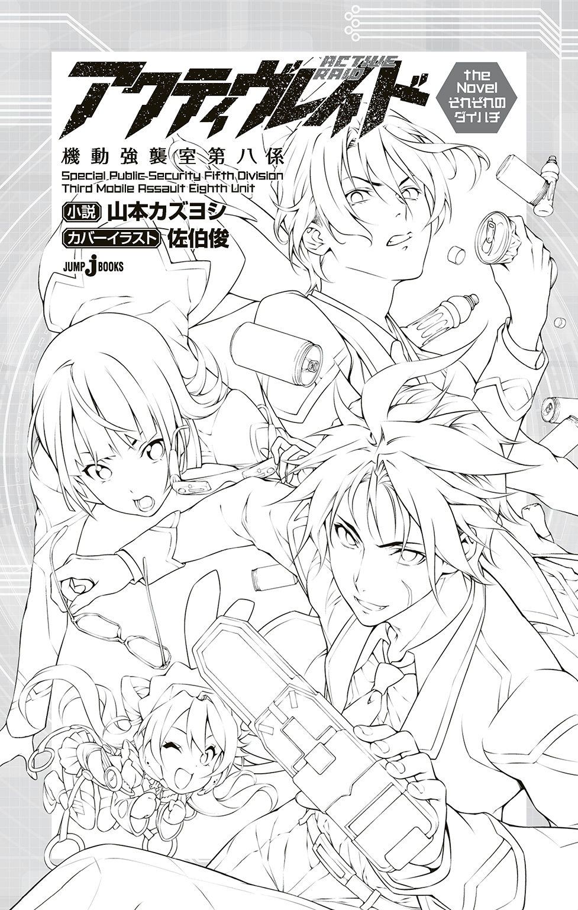
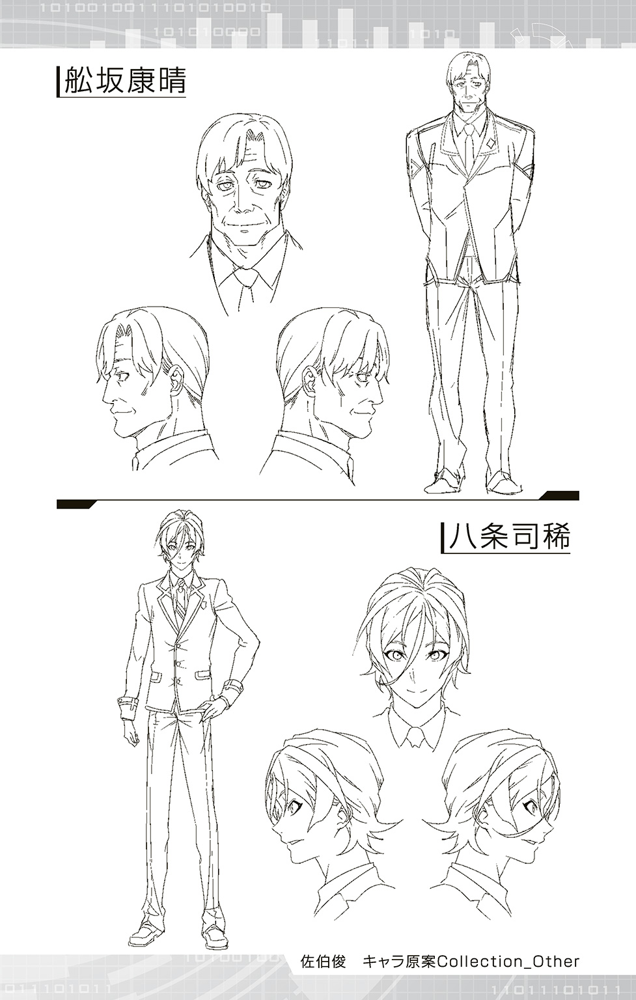

| アクティヴレイド―機動強襲室第八係― the Novel それぞれのダイハチ | |
| 山本カズヨシ | |

この本は縦書きでレイアウトされています。
また、ご覧になる機種により、表示の差が認められることがあります。

さいたま市大宮区で発生した二体のウィルウェアによる金塊強奪事件は、現場の捜査官の活躍により見事解決されたが、同時に決して少なくない問題を残す結果にもなった。
これは、その後始末の物語である。
「あー、面倒くせえ」
派手な赤い色のトランクスを片手に、黒騎猛がつぶやいた。
「口を動かすヒマがあったら、手を動かせ」
シックな黒のボクサーブリーフを広げながら、瀬名颯一郎がたしなめる。
「わかってるよ。べつにサボってるわけじゃねーだろ」
畳の上にあぐらをかき、手にしていた赤いトランクスを目の前に置く黒騎。傍らの段ボール箱の中に手を伸ばし、今度は緑色のブリーフを引っ張り出した。
黒騎の隣で正座している瀬名は、ボクサーブリーフを畳の上に置いているところだった。
「常に目を光らせておかないと、なにをするかわからんからな。お前の場合」
慣れた手つきで、ボクサーブリーフのシワを伸ばし始める。
「お前、ふだんからそんなことやってんの？」
「当たり前だろう」
言いながら手を放す瀬名。畳の上のボクサーブリーフは、ほとんど新品と見紛うばかりに美しく整えられていた。
「どうせお前のことだから、洗濯を終えた下着をロクにたたみもせず、そのままクローゼットの引き出しに突っこんでいたり、ひどい時には洗濯カゴの中に放置して、必要な時だけ引っ張り出したりするのだろう。信じがたい怠慢だ」
シワ一つない下着たちを見下ろしながら、瀬名が満足そうに頷く。
「お前こそ、そんなこといちいちやってたら百年経っても終わんねーんだよ！ 少しは効率ってもんを考えろ」
黒騎の言うことも一理あるのかもしれない。作業の効率は、おのおのの目の前に広げられている男性もの下着の数を見れば一目瞭然。黒騎のこなした数のほうが、圧倒的に多いのだ。
「馬鹿め」
明らかにムッとしつつも、瀬名は決してペースを崩さず、段ボール箱から紫色のトランクスを取り出して、同じようにシワを伸ばし始める。
「これはパフォーマンスでもある。見栄えを重視するのは当然のことだ。お前の雑な仕事が、現代の高精細映像に耐えられると思うなよ」
紫色のトランクスのシワも伸ばし終えた瀬名は、段ボール箱の中から別の下着を取り出し、それをなぜか黒騎に放り投げた。
ぼふっ。
オレンジ色のブーメランパンツが、黒騎の顔面を隠すように覆いかぶさる。
「なにすんだよ！」
「それはお前の担当分だ」
「ハァ？」
困惑顔の黒騎。瀬名はすっと人差し指で、畳の上を示す。
「私の担当範囲は黒と青などの寒色系。対してお前は、白と赤などの暖色系だ。その下着を見てみろ。オレンジ色は暖色だからお前の担当だ。周りの色をよく見て、適切なところに並べるんだぞ」
「やってられっか！」
もうガマンできないというように、黒騎はオレンジ色のブーメランパンツを畳に叩きつけて立ちあがった。
「こんなチマチマした作業になんの意味があるんだよ。どうしても綺麗に並べたかったらバイトでも雇えってんだよ」
「私に言われても困るが、一つだけはっきりしていることがある」
瀬名はすました表情の中に確かな厳しさをもって、黒騎を見あげた。
「これは任務だ。黙って遂行しろ」
「ちっ......」
これ以上文句を言っても無駄と悟ったのか、黒騎はいかにもしぶしぶといった感じで再びその場に腰を下ろした。
それは黒騎、瀬名両名が所属している警察庁警備局第五特別公安課第三機動強襲室第八係、通称ダイハチに、花咲里あさみ警部補が赴任してきた、ちょうどその日。発生したウィルウェア犯罪を解決する過程において、埼玉県警および大宮署に多大なる迷惑をかけてしまったことに端を発する。
室長の山吹凛警視正による必死のお詫び行脚によって、書くべき始末書をすべて埼玉県警大宮署がかぶるという件には同意をとりつけたものの、その見返りとして労働力の提供を求められたのである。
その役目を黒騎と瀬名が負うことになり、一時的に赴任した大宮署で任された仕事が、現在の男性もの下着の陳列業務というわけだ。
「しかし、これ全部下着ドロボーの戦利品なんだろ？」
「戦利品じゃない、証拠品だ」
わざわざ言い直しつつ、瀬名は作業を続ける。
野鳥の研究者でもなければ数えきれない量の男性もの下着は、すべて一人の男性によって盗まれたものだった。
その男の名は、緒方慎一。三十一歳。
関東圏内に複数の工場を抱える大手食品メーカーに勤務している会社員だ。
彼が外回りに使用していた社用車から、この大量の下着が発見されたことから事件が発覚。他に、社用車の鍵は緒方本人が所持しており、他の人間には開けられなかったこと。複数の現場で目撃された犯人像にも一致したこと。そして、既婚だが、そちらの趣味があると認めていることなどが決め手になったという。
黒騎たちは、その戦利品――警察の側から言えば証拠品を一つ残らず裁判所に提出するため、この大宮署内にある道場に一つひとつ並べているのである。
「戦利品だか証拠品だか知らねえけどよ、全部まとめて提出しちまえばいいじゃねーか。なんでいちいち広げて見せびらかす必要があるんだよ」
「そんなことも知らないのか、お前は」
瀬名は面倒くさそうに説明した。
証拠品の下着は、決していっしょくたに管理していいものではない。その一つひとつに、それぞれ別の所有者が存在するからだ。当たり前だが見落としがちな彼らの存在を、内外に強く印象づけるのが第一の目的らしい。もちろん、それほどたくさんの罪を犯した犯罪者を逮捕したのは自分たちだとアピールする意味も含まれている。さらに言えば、むしろ後者の意味合いのほうが強いため、会見や取材でマスコミのカメラが入った時に見栄えがいいように、見た目にも気を遣って並べているのだ。
しかし、そんなことは、外部からの応援としてやって来た黒騎や瀬名にとって、本来なら関係のないことである。
「ったく、応援っていうから、もっと派手な事件の手伝いなのかと思ったのによー。カーチェイスとかドンパチとか」
少し不謹慎な嘆きだが、警察官としては当然かもしれない。
映画やテレビ番組のように、一度でいいから車や拳銃を駆使してかっこよく事件を解決してみたいと思う警察官は少なくないだろう。
実際、ブームを巻き起こすほど高視聴率を獲得する刑事ドラマが放映されていた年は、警察官の志望者数が跳ねあがるという。
テレビのニュース番組などで、今回のように大量の下着が陳列されているシーンを視ることはあるかもしれないが、実際にそれを並べる作業を自分がやることになるとは、夢にも思わなかった。
「私だって不本意なんだ。我慢しろ」
黒騎をたしなめつつ、結婚したての新妻のような甲斐甲斐しさで下着を並べていく瀬名。その姿はどこかうきうきと弾んでいる。
「セリフと態度が合ってねーんだよ！」
すかさずツッコミを入れる黒騎。
瀬名にとっては適職かもしれないこの仕事も、彼としては苦痛そのものだった。そのはずである。
緻密な捜査と推理で論理的に犯人を追い詰める、海外の本格ミステリー小説のようなタイプが瀬名ならば、派手なカーチェイスや銃撃戦の末に犯人を追い詰め逮捕する、ハリウッドの超大作アクション映画のようなスタイルが黒騎なのだ。
「こんなもん、だいたいの色が合ってればいいだろ。とっとと片づけて帰ろうぜ」
黒騎の下着を並べる手つきが一段と早くなった。
カーチェイスも銃撃戦もできないならば、一刻も早く帰って通常勤務のためにトレーニングでもしていたほうがマシだ。黒騎はそう思っていた。
しかし、そんな彼の並べた下着の中から、瀬名は目ざとく二枚を抜き取った。
「この黄色いブリーフと、レモン色のトランクス。色合いからして並びが逆だ。入れ替えろ」
「どこがだよ！」
「よく見てみろ」
瀬名は二枚の下着を、ずいと黒騎に押しつける。
「同じ黄色系統でも、このブリーフのほうが明らかに濃い色をしているだろう。美しくグラデーションをかけるには場所が逆なんだよ」
「そんなの、たった二枚のことだろうが」
「たった二枚のことだからこそ、よけいに目立つと言っているんだ」
「............」
確かに言うとおりかもしれないが、とてつもなく面倒くさい。
黒騎はそう思ったが、同時に悟った。
ここで抵抗したり反論したりしても時間の無駄。逆らわずに行動したほうが、結果的には早く終えることができる。
「へいへい、わかりました」
黒騎はすべてを飲みこんで、瀬名から二枚の下着を受け取り、先ほどとは逆に配置した。
それから、決して短くない時間が過ぎ。
大宮署の道場には、色とりどり、様々な種類の男性もの下着が、道場の畳全体にびっしりと敷き詰められた。
黒騎と瀬名は、やっと終わったと解放感に満ちた表情で、はたまた任務をやり遂げたと誇らしげに、それを見下ろしている。
「うおー。すげーなこいつは。改めて見ると壮観だぜ」
「見事なグラデーションだ。とても盗品とは思えん」
「だな。べつに褒めるわけじゃねえが、犯人もよく、これだけの色の下着を集めたもんだよ」
「ああ......そうだな」
まさに二人の努力の賜物だった。
この完成度であれば県警側も満足だろうし、マスコミとしても夕方のワイドショーで流すのに充分耐えうる映像を収めることができるだろう。任務は晴れて完了したのだ。
「さあ、さっさと報告して帰ろうぜー」
両腕を思いっきり上に伸ばしながら、黒騎が促して道場を出ようとする。
しかし、瀬名は動かなかった。
「おい、どうしたんだよ」
「いや......」
瀬名は片手を顎の先に当て、じっと全体を見ていた。
「おかしい......」
「あん？」
不思議そうな顔の黒騎の目の前で、瀬名はすっと指を差す。
「揃いすぎている」
「なにが？」
「下着だ。決まっているだろう」
確かに決まっている。
この道場の畳の上に、完璧なグラデーションで下着を敷き詰めたのは、他ならぬ瀬名と黒騎なのだ。
「不自然だ」
「だから、なにが？」
「さっき、お前も口にしただろう。『犯人もよく、これだけの色の下着を集めたもんだ』と。おかしいとは思わないか？ これだけの量があるのに、同じ色の下着が一組もないなんて」
「あ......」
指摘され、初めて黒騎も思い至った。
一般に、男性はあまり下着にこだわらない。もちろん例外はいるだろうが、色になどこだわるのは少数派だろう。
「まあ、普通に考えたら黒とか紺がもっとあってもいいだろうな」
「しかも、だ。売り物ならともかく、盗品だぞ？ 下着の色にこだわりのある人間が例外的にいたとしても、ピンクのボクサーブリーフやエメラルドグリーンのブーメランパンツなどを買う人間が、そう何人もいるものだろうか？」
「......つまり、どういうことだよ」
うすうす意図に気づきつつ、あえて黒騎が訊ねると、瀬名は言った。
「犯人は、ただ漠然と下着を盗んでいたのではない。なんらかの目的があって、意図的に、色の違う下着を盗み集めていた......。その可能性がある」
「意図的......だと......？」
「あくまでも可能性だがな、しかし......」
ゆっくりと頷く瀬名。言葉とは裏腹に、その横顔には確信めいた色があった。
「もしも、私の考えていることが正しいとすれば......。これは、ただの下着窃盗事件ではない」
「......っ!!」
黒騎の瞳が挑戦的に輝いた。
「おもしれえっ！ もっと大きな事件が隠されているかもしれないってことだろ？ 裏で糸を引いてるのは誰だ？ 政治家か？ 国家か？」
「待て！ そこまでは言っていない」
瀬名は慌てて黒騎を諫めたが、すでに遅かった。
これまでの単純作業による退屈の極みでくすぶっていた心の火種は、今完全に灯ってしまったのだ。
「燃えてきたぜ！ そうと決まれば、行くぞ相棒！」
瀬名の腕をつかみ、黒騎は道場を飛び出す。
「おいっ！ 行くってどこへだ！ というか、なにも決まってないだろ！」
「決まってんだろ！ 暴くんだよ、俺たちで！ 事件の真相ってやつをな！」
「よーし、ここだぜ」
黒騎と瀬名の二人は、とあるマンションの部屋の前にやって来ていた。
「まさか、こんなことになるとは......」
頭が痛いというように、片手で眉根を押さえる瀬名。黒騎は玄関の札を確認している。
「面倒くさいと思うなら、帰ってもいいんだぜ」
「お前じゃあるまいし、そんな理由で帰れるか」
インターホンに指をかける瀬名。
ボタンをゆっくり押すと、室内に呼び鈴の音が鳴り響き、すぐにインターホンから声が聞こえてきた。
（はい？）
「恐れいります。警察庁の者ですが」
（お話は伺っています。どうぞ）
瀬名がインターホン越しに話すと、ドアの鍵がガチャリと開く音がした。
「私だって気になるんだ。明確にしておかないと、今後の業務の妨げになるかも知れん」
緒方家の玄関にあがりながら、瀬名が言う。
「いい心がけだ。探偵に向いてるんじゃないのか、お前」
からかいながらも、さりげなく中の様子を確認する黒騎。
家の中は決して広いとは言えなかったが、よく整頓されていて荒れた様子は見受けられない。一見して幸せな夫婦の住まいそのものだった。
異変に気づいた後。黒騎がまずとった行動は、県警を通じて大宮署にかけ合い、事件の捜査を独自にさせてもらうことだった。単なる窃盗事件として起訴するつもりだった大宮署の捜査員たちは、黒騎と瀬名が提唱した仮説に首をひねっていたが、主に黒騎による熱の入った説得の結果、検察に送致されるまでの約四十一時間の間、邪魔にならない範囲の捜査であれば黙認すると言質をとることができた。
そこで、手始めに被疑者の妻である亜美に聞きこみをすることにしたのだった。
「それで、今回はどのようなご用件なんですか？ 県警のほうには、知っていることはすべてお話ししたのですが」
三十を過ぎているかどうかという女性が、リビングの椅子についた黒騎と瀬名にコーヒーをふるまう。
被疑者の緒方の妻、亜美だった。
事件の影響か、表情には少しやつれた様子が見受けられたが、それを差し引いたとしてもなかなかの美人である。
黒騎は爽やかなスマイルを浮かべながら答えた。
「それが、捜査の過程で二、三、追加で伺いたいことができてしまいましてね。なあに、ほんの形式的なことです」
「そうですか。すぐに済むのなら......」
「ありがとうございます」
満足げな表情で軽く頭を下げる黒騎。
（なにが形式的なことだ。よく言うぜ、まったく......）
隣の席についている瀬名は、すまし顔をしつつ、内心で舌打ちをする。
亜美への聞きこみという方針が決まった瞬間の黒騎を思い出したからだ。
「うおおっ、燃えてきたぜ！」
黒騎は、まず叫んでいた。
「なにをそんなに熱くなっているんだ。面倒が増えただけなんじゃないのか？」
「これが面倒なもんかよ。捜査だぜ、捜査！ 実は俺、最近刑事モノのドラマにハマっててよ。ウィルウェアもいいけどたまにはドラマみたいに銃をバンバン撃って車をガンガンぶっ壊すような捜査してみたいって思ってたとこなんだよ！」
「そんな捜査はあり得ない。いつの時代のドラマを見てるんだ、お前は」
瀬名はあまり乗り気ではなかった。しかし、文句を言いながらも独自捜査の案に従ったのには、もちろん理由があった。
被疑者の緒方が、逮捕後一度は容疑を認めたものの、その後の取り調べでは一貫して黙秘を続けていると知ったからだ。
車から発見された証拠品。
目撃者の証言。
そして、本人の趣味。
これまでの状況証拠に加えて自白があるので、まず起訴は免れないだろう。
しかし......瀬名は思った。
もしも、本当に事件の裏になにかがあったとしたら？
そのなにかが、この事件をまったく別の結論へ導くものだとしたら？
緒方が一度自白するも黙秘を続けているのには、なにか理由があるはずだ。
そして、もっとも大きな可能性は、彼が誰かをかばっているということである。
その可能性を見過ごせる瀬名ではなかった。
瀬名がそんなことを思い出している間に、黒騎は話を進めていた。
「なるほど。よくわかりました。奥さんと慎一さんは、大学の同級生だったと......。その頃の彼の様子は、どうでしたか？」
「真面目で優しい人、という印象でした。多くは語りませんでしたが、恋愛も普通にしていたようでしたし......」
緒方の趣味について、亜美は事件が起こって初めて知ったという。
聞かされた当初はとても信じられなかったという亜美だったが、県警の調べによって、彼の部屋からその手の雑誌などが押収され、新宿のとあるゲイバーの常連客だったことが明らかになり、ようやく事実を受け入れる気になったらしい。
「家では、あくまでもよき夫でした。それが......こんなことになるなんて......」
こらえきれなくなったのか、亜美は顔を伏せ、さめざめと涙を流し始める。
「心中、お察しします。旦那さんも無理をされていたのでしょう」
黒騎は世にも優しげな流し目で泣き伏せる亜美を見つめた。
「あなたの前で自分を偽り続けたその歪みが、今回の事件を生み出してしまったのかもしれません。しかし、それは紛れもなく、あなたのためを想ってのことだったと思います」
「ええ、わかっています」
亜美は顔をあげ、まっすぐ黒騎を見つめた。
「たとえどんな人であったとしても、わたしの夫は彼、ただ一人です。彼に会えるようになったら、伝えるつもりです。いつまでも待っている、と......」
「そうしてください。必ず」
口元をおさえる亜美の肩に、黒騎は優しく手を置いた。
「いい奥さんじゃねえか。うらやましいぜ、緒方のやつ」
緒方家のマンションを出た黒騎と瀬名は、次なる聞きこみを行うため、とあるバス停でバスを待っていた。
「あんな美人を裏切るなんてあり得ねえ。緒方め、刑務所で反省しろ」
「お前の言動のほうがよっぽどあり得ん」
瀬名はぴしゃりと言った。
「事件の関係者に対する過度な接触は避けるべきだ」
「なんだよ。相手にされなかったからってひがんでんのか？」
「馬鹿を言うな」
瀬名の表情は、あくまで真剣だった。
「事件の関係者に深入りしすぎると、肝心なところでことを見誤ると言っているんだ」
「へいへい、わかりました」
そこにバスがやってきて停車した。
前のドアが開き、客がまばらに降りてくる。
「次の証言者の前では、先ほどのような勝手は許さないと思え」
「心配すんなって。あれは美人限定対応だ」
「そういう言動を慎めと言っているんだ」
言い合いをしながらも、二人はバスに乗りこみ、次なる目的地へ向かった。
黒騎と瀬名が着いたのは、緒方が勤めていた食品メーカーの営業所だった。
緒方の同僚で友人だった大森という男が、聞きこみに応じてくれるというのだ。
さすがに社内で話をするわけにはいかず、大森を含めた三人は近くの喫茶店に移動した。
「そうですねぇ。僕にとっては、緒方さんは楽しく飲める友人であり、尊敬できる先輩でしたよぉ。彼のほうはどう思っていたかわからないですけどぉ」
大森は、緒方と同年代と思しき男だった。決していい男というタイプではないが、営業畑というだけあって、明るく人のよさそうな印象である。こざっぱりとした服装や態度からも余裕が感じられる。おそらく営業成績も優秀なのだろう。
「答えにくいことかもしれませんが、緒方さんにそちらの趣味があったことは、ご存知でしたか？」
「知りませんよぉ。ただ......噂はありましたけどね」
「そうですか。やはり......」
「いやあ、僕は信じてませんでしたよぉ？ だって、あんなに美人の奥さんをもらったんですから」
大森は、手元のストローの包みを丁寧に折りたたみつつ続けた。
「彼にはもったいないくらい美人の奥さんをもらったと、僕は思ってたんですけどねぇ」
「同感です」
どこか他人事のような大森の話に、斜め前の席についた黒騎が大きく頷く。
代わりに、大森の向かいでメモをとっていた瀬名が質問を飛ばした。
「奥さんにお会いしたことがあるんですか？」
「ええ、何度か。話をしたこともありますよ」
言いながら、不意に腰を浮かせる大森。
「どうされたんです？」
「いえー、たいしたことではないです」
「そうですか」
気にはなったが、たいしたことがないと言われればそれ以上突っこむことはできない。
今度は黒騎が質問した。
「では、亜美さんからなにか聞いていませんか？ 夫婦関係でトラブルがあったとか」
「いえ、とくには......」
言葉を濁しながらも、大森はまた腰を浮かし、首を伸ばした。
「とにかく、変わったことはとくに思い浮かびませんねえ。ま、僕もそんなに深いつき合いがあったわけじゃないですから、参考にならないかもですけどぉ」
「いえ、参考にさせていただきます。次に、下着が発見された車についてなんですが......」
「はい」
言いながら、三度腰を浮かす大森。瀬名の後方を気にしているようだった。
「なんすか？」
「えっ!?」
黒騎が少し声を荒らげて訊くと、大森はビクッとしてその場で少し跳ねあがった。
「三度も後ろを確認されちゃ、さすがに気になりますよ。つかその反応、怪しいっすね。なにか隠してるんじゃないっすか？」
「ちッ、違いますよぉ！」
「なにがどう違うんです？」
「僕はただっ、その......気になって......」
大森は恐る恐る指を差した。
「あん？」
振り返った黒騎の耳元で、大森はぼそぼそと言う。
「あのお客さん、さっきからコーヒー飲むたびに少しずつこぼしてるんですよ。そのせいでコースターがコーヒーで汚れちゃってるんです。それが気になって気になって......」
黒騎と瀬名が同時に振り返る。
後ろの席に恰幅のいい男が座っている。確かに、そのテーブルに置いてあるコースターが、こぼれたコーヒーで茶色く染まっていた。
「わかります」
瀬名が大森の目をじっと見つめて、大きく頷く。
「あまりにも無神経な飲み方です。もっとゆっくり香りを楽しみつつ味わえば、あれほどこぼすことはないはずだ」
「わかってもらえますか！」
明るい笑顔を浮かべて、大森は瀬名の手を取った。
「いやあ、なんとなくあなたにはわかってもらえるんじゃないかと思っていたんですよ。あなたはこっち側の人間だ」
「わからない人間には、わからないものです。そんなのは放っておけばいい。自分は間違っていたと、いつか思い知るときがくるでしょう」
「はいっ！」
「なんなんだ、こいつら......」
固く握手を交わす大森と瀬名を見て、黒騎は大きく嘆息した。
大森は会社へ帰っていき、再び二人になった黒騎と瀬名は、その後も同じ会社の何人かの目ぼしい人物を喫茶店に呼んで聞きこみを行った。
しかし、これと言って重要な証言は得ることができなかった。
朝から精力的に動いていたが、すでに昼下がりというより、夕方といったほうがいい時間帯に差しかかっている。気の早い会社員ならば、そろそろ帰りに立ち寄る飲み屋のことを考える頃だ。
「タイムリミットは、明日の午前中か......」
瀬名がぽつりとつぶやく。
「諦めんのか？」
問いかける黒騎の声にも、どこか力がない。
「そうじゃない。ただ、最初から何もなかったというだけかもしれんということだ」
二人は、緒方の食品会社の駐車場に来ていた。緒方が使用していたという社用車を調べるためだ。県警の許可がすんなり下りたので、すでに隅々まで調べ尽くされた後だろうということは容易に予想できたが、案の定、いくら調べても、新しい何かが見つかることはないようだった。
夜になってからの証拠品の捜索や聞きこみには限界がある。しかし、真犯人の存在に繫がる手がかりは、まったく見つかっていなかった。
「明日はどうする。ダイハチに戻るか」
「いや、また大宮署だ。応援終了の指示は出ていない。」
「............」
珍しく、黒騎が言葉を発さずに、じっと地面を見つめている。
「どうした。まさかとは思うが、考えごとでもしてるんじゃないだろうな」
「だったらどうだって言うんだよ」
「べつに。ただ明日は大雨になるだろう」
「このやろう」
苦笑しつつ、黒騎は顔をあげた。
「言いだしっぺはお前だけどな。俺にはどうしても、緒方ってやつがただの下着ドロには思えねえんだよ」
「根拠は？」
「デカの勘ってやつかな」
「デカじゃないだろ。お前も、私も」
「んなこたわかってるよ。いちいち揚げ足を取るんじゃねえ」
「少しは具体性を持たせろと言ってるんだ。緒方が犯人ではないという根拠は？ 証拠は？」
「ない。だが、犯人だという証拠もない」
「............」
瀬名はピクリと眉をあげた。
「証拠のブツが見つかったのはこの車だが、そこに緒方がいたわけじゃない。目撃者ってのも、緒方本人を見かけたわけじゃねえ」
黒騎の脳細胞が、活発に動き始めた。
「そもそも、おかしな話だろう。俺はあらゆる女性に愛を注げる自信があるが、だからといって下着まで盗もうとは思わない」
「当たり前だ！」
「そう、当たり前だ。いくら女性が好きでも、下着にまで手を伸ばすやつはごくごく少数だろうよ。それと同じだ。そっちの趣味があるといっても、下着まで盗むやつはそうそういない」
「む......」
瀬名は一瞬黙りこんだが、すぐに反論を試みる。
「それはそうだが、この車の鍵は一つしかなかった。その一つを所持していたのは緒方だった。大森を始め、他の社員たちもそう証言したじゃないか」
「ああ。だが、なぜ一つと決めつける。スペアキーは？」
「とくに用意していなかったと言っていた」
「そうじゃない。コピーできなかったのか？」
「コピーだと？」
黒騎はなにかを思いついたように瀬名のほうを向いた。
「ああ......そうだよ。真犯人があらかじめスペアキーを作っておいたとしたら？ 緒方本人でなくても、車を開けてブツを仕こむくらい、いつでもできる。どうしてこんな簡単なことに気づかなかったんだ」
「ということは、なにか？ この事件は、あらかじめ計画されたものだと？」
「真犯人がいるとすればな。緒方の趣味について、奥さんの亜美さんは知らなかったと言ったが、同僚の大森は違った。噂はあったと答えた。本格的に知っているやつがいてもおかしくはない。真犯人は緒方の趣味を知っていて、やつを陥れるため、自分で下着を盗み、この車に仕掛けた」
「バカな......」
「こいつはふだんから緒方の専用だったんだろ？ ブツが見つかって真っ先に疑われるのはやつだ。まして趣味のことが明らかになれば、いくら潔白を主張したところで、信じる人間は少なくなる。真犯人はそこまで計算に入れていたんだ」
「憶測だ！ すべては憶測にすぎん！」
まるで崖に追い詰められた犯人のようなことを言いだす瀬名。しかし、同時に気づいていた。
もし犯行が計画的だったとしたら、すべての辻褄が合う。真犯人は存在する。
「............」
「......まあ、なんの証拠もないのは確かだけど。それでも、諦めるには早いと思わないか？」
「かもしれん。しかし、もう時間が......っ！」
瀬名が、突然走りだした。
「おいっ!?」
慌てて後を追う黒騎。
瀬名が向かっていく先には、今まさに車に乗りこもうとしている男の姿があった。
「おい、そこの車！ 待てっ！」
必死に静止させようとするが、距離が離れすぎていた。
男は車を急発進させ、滑らかに公道へ出ていく。
瀬名はスパートをかけたが、到底追いつけるものではなかった。
「クッ......なんてことだ......」
「おい、急にどうしたんだよ！」
追いついてきた黒騎が、瀬名の肩をつかんで問いかける。
「見つけたんだ！」
「まさか、真犯人か!?」
「違う！ 今の男は社員だ。だが私服で車に乗りこんだ。社用車を私的利用しているんだ。許せん」
「なんだよ......」
瀬名の肩にかけていた手を力なく下ろす黒騎。
「なんだとはなんだ！ 服務規程違反だぞ！ 社内では懲戒事由にもなりかねない重罪だ！」
「だからって、お前なぁ......」
やれやれとため息をもらす黒騎だったが、瀬名はあくまでも怒りに燃え、大股で公道に進み出た。
「なにするつもりだ？」
「決まっているだろう。まだ遠くには行っていないはずだ。服務規程の大切さを徹底的に教えてやる」
「追いかけるつもりかよ。そこまでするか、フツー」
「少なくとも、やつは緒方の同僚だ。事件の手がかりを持っていないとも限らないだろ」
「その可能性もあるな」
瀬名にしては面白いことを言う。黒騎はニヤリと微笑んだ。
「捜査を諦めかけていたとき、意外なところから手がかりが見つかる。刑事ドラマにはよくある展開だぜ。よっしゃ、乗った！」
と言って、近くに停めてあった大型のバイクに跨る黒騎。
「......なにをしている？」
冷たい視線を投げかける瀬名に、無邪気な笑顔で答えた。
「追いかけるんだよ。こいつはモンスターマシンだ。普通の車とは馬力が違うから、ソッコーで追いついて......」
「バカかっ！ お前が窃盗犯になるぞ！」
正論すぎる正論を浴びて、黒騎はしぶしぶバイクから降りた。
「冗談だって。一度やってみたかったんだよ。ドラマじゃこういう時、必ず近くに鍵のかかってないバイクが......あれ？ 鍵かかってんぞ、これ！」
「ここはバブル時代の横浜じゃない。もっとコンプライアンスに配慮しろ」
「わかったよ。じゃあ、これならいいだろ？」
今度は警察手帳を取り出し、車道を走る車に向けた。
「警察だっ！ 車を......」
「おいっ！」
すかさず瀬名が羽交い締めにする。
「なにすんだっ、放せ！」
「法律的にあぶない刑事になるぞ！ いくらお前でもわかっているだろう」
「わかってるけど、貸してくれりゃ儲けもんだろ？」
「お前というやつはっ！」
「いてててててっ！」
いっそう強くなった瀬名の羽交い締めを、黒騎はなんとか振りほどく。瀬名はなおも身構えている。黒騎が少しでも変な動きをすれば、すかさず飛びかかる構えだ。
「お前は刑事ドラマの見すぎだ。少し大人しくしていろ」
「じゃあどうやって追いかけろっていうんだよ。もうあんなに小さくなってるぞ」
「当然、こうだ」
瀬名は車道のほうを向き、高らかに片手をあげた。ちょうど目の前を走っていた乗用車がそれを確認してスピードを緩め、少し先の路側帯に停車する。
オレンジ色の車体に、白抜きで大きく『ＴＡＸＩ』と書かれているその車のフロントドアを開け、瀬名は厳かに告げた。
「警察だ。追ってほしい車がある。もちろん、法定速度で」
瀬名と黒騎を乗せたタクシーは、服務規程違反の疑いのある男の車を追いかけて走りだした。幸いにも、運転手はベテランで辺りの道を熟知しており、裏道などを駆使して、みるみる差を詰めていく。追いかけられている男のほうも、まさか追われると思わなかったのか安全運転で走行していたため、やすやすと追いつくことができた。
待ち合わせの場所なのか、駅前のロータリーに車を停車させる男。黒騎たちは少し後方でタクシーから降り、ゆっくりと男に近づき、後ろから肩を叩いた。
「警察だ。少し話を......」
「ひいっ！」
瀬名の言葉をすべて聞かず、男は弾かれたように飛びあがってその場にひれ伏した。いわゆる土下座である。
「ごめんなさいっ！ つい出来心で......」
「なんだ？ まさかこいつが真犯人か？」
「へっ、真犯人......？」
「お前の会社で起こった下着ドロのだよ！」
「ちっ......違いますっ！ ボクはただっ......！」
詳しく話を訊くと、彼は川又という男で、緒方の同僚だった。
「あんまりカワイイ子だったから、つい......」
「カワイイ子だと？」
川又は土下座したまま、ペラペラと話し始めた。
いきなり土下座をしてきたのは、真犯人だからではなく、社用車を使って女性と密会しようとしたことがバレたと思ったからだと。
「女と会うって？ あんた、奥さんは......」
「いやあ、それが、そのぅ......」
「いるんだな」
「はい......」
立ちふさがる黒騎と瀬名の前で、ひたすら平身低頭の川又。これはこれで悪目立ちしてしまうと判断し、ひとまず川又の乗ってきた車に乗り直すことにした。
「まあ、事情はわかったけどよ。わざわざ会社の車を使ったのはなんでなんだ？」
「女の勘っていうんですかね。家の車を使うとバレちゃうんですよ、でへへ」
「でへへじゃない」
最悪の事態ではないとわかったからか、緊張がとれて言葉遣いがぞんざいになってきた川又に、瀬名はぴしゃりと言い放った。川又は思い出したように再び顔をこわばらせる。
「社用車の私的利用は服務規程違反。妻帯者でありながら別の女性との密会は、紛れもなく不貞行為で民法上の貞操義務違反だ。会社と奥さんに連絡させてもらう」
「ちょっと待ってくださいよっ！」
携帯電話を手にした瀬名に、川又が泣きながらすがりつく。
「勘弁してくださいよっ！ 今バレたらヤバイんですよ！」
「断る」
「出来心だって言ってるじゃないですか！ そっちの刑事さんもなんとか言ってくださいよ！」
「早く観念しないと、女が来ちまうぞ。かっこ悪いとこ見せることになるんじゃねえか？」
「ひぃぃぃぃぃぃっ！」
「おいっ！ こら、抵抗するな！」
川又は死に物狂いで携帯電話を奪おうとするが、相手は警察官二人。しかも片方は空手の有段者である。あっさり返り討ちにあい、助手席に組み伏せられてしまった。
「抵抗しても無駄だというのに。往生際の悪いやつだ」
「うぅぅ......。それじゃ、こういうのはどうです？ ボクと取引しませんか？」
「マジでしつこいな。いっそオトすか？」
「知ってるんですよぉぉぉっ！」
川又は必死に叫んだ。
「緒方さんの件で、警察に言ってないことがあるんです！ それを教えますからっ！」
「......言ってないこと？」
二人が興味を示したのを感じ取ったのか、川又は少しだけ余裕を取り戻したようだった。
「きっと重要な情報だと思いますよ？ さっきの件、なかったことにしてくれるならお話します」
「わかった。話せ」
「黒騎っ！」
瀬名ににらみつけられても、黒騎は平然としている。いつものことだというように、軽く微笑んですらいた。
「解決の早道になるかもしれねえだろ。川又のやったことは確かに褒められたもんじゃねえが、犯罪を犯したわけでもない。どっちが重要かくらい、お前にだってわかるだろ？」
「ぐっ......しかし......」
「どうしてもって言うなら、お前は耳をふさいでろ」
「............」
「手を貸せと言ってるんじゃない。聞かないだけでいいんだ。頼むよ」
「............っ！」
瀬名は、心底苛立たしげな表情で川又から手を放した。
「......そういえば、捜査状況を報告をすると室長に約束していたことを思い出した。私は少し外すが、黒騎。くれぐれも勝手に話を進めるんじゃないぞ」
「わかってるって」
黒騎は笑顔で瀬名を見送った。
川又の話は、確かに重要な情報だった。
彼はいつも、密会には決まったバーを使用しているという。
ある日、いつものように女性とそのバーを訪れると、客の中によく見知った顔があることに気づいた。
それは川又の同僚であり、緒方の同僚でもある大森だった。
「なんだって、あいつが......？」
「しかも、それだけじゃないんですよ！」
川又と同じように、大森もまた、密会相手をバーに連れてきていたという。その密会相手というのは、他ならぬ緒方の妻、亜美だった。
「マジかよ......。あんた、なんでそんな重要なことを警察に話さなかったんだ!?」
「ひいぃっ！ だって、話したらボクの不倫のことも話さなきゃいけなくなるじゃないですか！」
「このゲス野郎！」
「約束しましたよねっ！ この件を話したら、ボクのことは見逃してくれると！」
「チッ......」
黒騎は悔しそうに舌打ちをして、車のドアノブに手をかける。川又は軽く頭を下げて、外に出ようとした。
「下着ドロは緒方さんじゃないってことなんですか？ だったら、ボク考えたんですけど、真犯人は......」
「よけいなことを言うんじゃねえ。ここからは警察の仕事だ」
黒騎に追い立てられ、川又は急いで車内から身体を出す。しかし、その目の前にぬっと人影が現れた。
「ひぇっ!!」
その人物の顔を見て、川又の表情が凍りつく。
それは、川又と同じくらいの年の女性だった。
「あんた......」
「どっ、どうしてここにっ!?」
「それはこっちのセリフよ！ 誰、この女！」
女性の隣から、もう一人の女性が顔を覗かせる。そちらはより若いようだった。
「あーあ」
黒騎がドアから車外に出るのとほぼ同時に、二人の女性が川又をがっちり拘束しながら車内に入った。
「ひいぃぃぃやあぁぁぁぁぁっ!!」
川又の悲鳴が、駅前じゅうに轟きわたる。
黒騎はやれやれと肩をすくめながら、近くで待っていた瀬名のほうに向かった。
「お前、意外と鬼なんだな」
「なんの話だ？」
瀬名は本当になにも知らないというように目を細める。
「そんなことより、黒騎。まさかとは思うが、私が席を外している間に勝手に話を進めたりしてないだろうな」
「するわけねえだろ、そんなこと」
苦笑して、黒騎は両手でパンと頰を張った。
「さあ、今夜は眠れないぜ」
その夜。黒騎と瀬名は手分けをして捜査を続けた。すでに深夜といえる時間帯のため、新たな証言を得ることは困難。これまでに揃っている捜査資料と、インターネットのみを駆使した捜査だったが、それでもかなりの成果をあげることができた。
「緒方と亜美は、ともにＳＮＳのアカウントを持っていた。新婚当初は、互いのアカウントに互いの名前や写真が頻繁に登場するが、ここ数年でめっきり減っている」
瀬名の報告に、黒騎は大きく頷いた。
「つまり、その頃から二人の仲は冷えきっていた可能性が高いってわけだな。こっちも面白いことがわかったぜ」
「ほう。緒方と亜美は大学の同級生だが、大森もまた同じ大学に通っていた後輩だったということか？」
「......やるじゃねえか、唐変木」
「当然だ、粗忽者」
そろそろ夜も明けようかという喫茶店で、テーブルの上に広げていた資料を見ていた黒騎と瀬名は、同時に顔をあげ、それから少し笑った。
「この資料によれば、被害届が出ている下着のうちのいくつかは、大森の自宅から営業所までの道のりの家から盗まれたものだ。緒方とやつは背格好が似ている。目撃証言にも一致する」
「とすると、やはり......」
「ああ......」
二人は再び視線を交わし合った。
「しかし、動機は？」
「簡単じゃねえか。亜美が緒方の趣味のことを知ったのは、実はずっと前のことだった......。夫婦関係が冷えこんだのは、それが原因なんじゃないのか？」
「ふうむ......」
「亜美はその悩みを共通の知人である大森に相談した。それが何度も続くうちに、次第に二人は惹かれ合い、恋愛関係に......」
「恋愛じゃない。不貞行為だ」
「そうだな。だがそれも、亜美と緒方の婚姻関係が続いていればの話。切れてしまえば、咎めることはできなくなる。ましてダンナのやらかしが原因ならな」
「うむ......。つまり、ジャマな緒方を排除するために、下着窃盗の濡れ衣を着せたと？」
「ああ。けど、わかんねえことが一つ」
黒騎は、すっと人差し指を立てた。
「真犯人はどうして、あれほど下着の色にこだわったかってことだ。動機が緒方をハメることだとして、一枚一枚違う色の下着を盗むことにどんな意味がある？」
「その件なら解決済みだ」
「ハァ!?」
驚いて席から立ちあがる黒騎。
しかし、瀬名はすまし顔でコーヒーをすすっている。
「真犯人がやつかもしれないと判明した時点で、おのずと推理できることだろうが」
「できねえよ！ どういうことか説明してくれ」
「後でな。そんなことより、問題は証拠だ」
「んなもん、逮捕して吐かしちまえいいだろう」
「だからドラマの見すぎだと言っている。結局は、緒方の時といっしょだ。やつが真犯人だと断定できるような、決定的な証拠がなければ、公判は維持できない」
「ああ......」
さすがの黒騎も同意せざるを得ないようだ。
「証拠はさ、どこかに残ってる可能性はないか。犯行の痕跡みたいなもんがさ」
「可能性はあるが、望みはうすいだろう。緒方の車は昨日調べたとおり、なにも発見されなかった。犯行現場から指紋でも検出されればいいが、被害者と周りの人間以外のものは検出されなかった。それに、もう本当に時間がない」
「万事休すってわけか。待てよ......」
黒騎は不意に天を仰いだ。
瀬名が不思議そうに眉をひそめる。やがて、黒騎はニヤリと微笑んだ。
「一つだけあるぜ。最後の手段に近い手がな」
「なにをするつもりだ？」
詰問口調の瀬名には応えず、立ちあがる黒騎。携帯電話を取り出し、どこかと連絡をとり始めた。
「証拠がないなら、作ればいいんだよ」
「まっ、まさか、証拠を捏造すると？」
「なに言ってんだ」
携帯電話を耳にかけながら、人懐っこい笑みを浮かべる。
「罠をはるんだよ」
その日。勾留期限の四十八時間が過ぎ、緒方は釈放された。黒騎たちが県警に報告したとおり、状況証拠は揃っているものの物証に乏しく、公判を維持するのは難しいと判断されてのことだった。
しかし、緒方はもう妻のいる家に帰ることはできなかった。一人、街へ降り立った彼は、寂しそうに背中を丸め、夜の街へ消えていった。
そしてまた、次の日の昼下がり。とあるアパートの一階のベランダに、男ものの下着が干されたままになっていた。トランクスだった。すうっと頰をなでるようなそよ風に吹かれて、ある意味ではのどかに、またある意味では扇情的に揺れていた。辺りに人の気配はない。学生や単身者向けのアパートが多く建ち並ぶ地域の昼下がりは、どこも似たようなものだ。学校や仕事で、家をあけている人が大半なのだ。
そして、そのトランクスは、普通の店ではあまり見かけない色合いをしていた。
「これだ！」
そのトランクスを見かけた時、男はそう叫びそうになった。このトランクスならば、文句なくあれに加えることができる。あれは、彼にとって証拠品ではなかった。どちらかと言えば、作品に近かった。一枚一枚、違う色の獲物。ある程度の数を揃えるのに、膨大な時間を必要とした。その過程が楽しかった。本来の目的を忘れてしまいそうになるほどに。時間がかかればかかるほど、苦労が多ければ多いほど、ふさわしい獲物を見つけた時の喜びは大きかった。
今回の発見も、それに近かった。緒方が証拠不十分により釈放と聞かされたとき、彼の落胆は計り知れないものだった。無論、決定的証拠を用意できなかった彼自身の手抜かりである。しかし、これまでの苦労が水泡に帰したというショックの前では、反省する気持ちなど吹き飛んでしまう。彼は焦っていた。なんとか結実させる方法はないかと。そこで思いついた。もう一枚下着を盗み、それに彼の指紋をつけることさえできれば、形勢を逆転させられるかもしれない。彼は再び街へ出た。そして見つけたのだ。獲物にふさわしい下着を。今まで手にしたことのない、ひわ色のトランクスを。彼は偶然に感謝した。そしてほぼ反射的に、トランクスへ手を伸ばした。
「そこまでだ！」
男がトランクスをつかんだことを確認して、黒騎と瀬名は同時に物陰から姿を現した。
「大森。個人的には不本意だが、君を窃盗及び住居不法侵入の現行犯で逮捕する」
「俺たちはすべてお見通しなんだぜ。神妙にしろっ！」
「なっ......!?」
ひわ色のトランクスをしっかり握ったまま、その男――大森は、まさに呆気にとられた様子で固まっていた。
「君には黙秘権がある。君の供述は、法廷で不利に扱われることが......」
「なんでだよぉぉぉっ！ どうしてっ！」
瀬名がミランダ・ルールを読みあげる前に、大森は審判に抗議するサッカー選手のように全身で叫んだ。
「だから言ってるだろ。すべてお見通しだって。とりあえず、緒方が釈放されたって話。あれ罠だから」
「はあっ!?」
「まあ、正確には留置場からは出たんだけどな。その後すぐ確保して、今は安全な場所に待機してもらってる」
「私としては不本意なやり方だったが、お前は見事に引っかかった。自分たちの計画を完成させるため、新たな証拠品を作ろうとしたんだ」
「そっ、そんなっ......」
大森は、とても信じられないというようにわなわなと震えている。
「気になったのは、お前がなぜあれほど下着の盗み方にこだわったのかだけど、それも解決済みだよ。俺の相棒が同類だったからな」
「同類でも相棒でもない」
黒騎のほうを見ず言い放ち、瀬名は冷たい視線で大森をにらむ。
「だが、お前のこだわりくらいはわかる。前に話を聞いた時、お前は他の客がコーヒーをこぼし、コースターを汚しているのをやたらと気にしていた。それでピンときたんだよ」
瀬名は、密かに大森の仕事場を調べていた。美しく整理整頓された机まわりを見た時、瀬名は直感的に思った。このスペースにある備品の数々は、色合いがすべて決められていると。
この瞬間、瀬名の中の疑惑は確信に変わったのだった。
「他の同僚からも、お前の色に対する几帳面さについては聞いている。曜日によって締めるネクタイの色が決まっていたり、食事には必ず緑黄色野菜を入れるとかな。自分の持ち物だけでなく、盗品にまでそれを求めるとは。そんな面倒くさい性格で、よくあんな美人を口説き落とせたもんだ。そこだけは尊敬してやる」
「まっ、まさか......！」
大森はつかんだトランクスをかざして叫んだ。
「わかっていたと言うんですかぁぁぁ！ 僕がこの下着を盗むって！ このひわ色の下着を！」
「もちろんだ。お前が今まで盗んだ下着はあらゆる色がまんべんなく集められていたが、緑系だけが若干少なかった」
「そこで俺たちは足りない色を調べた。その中で用意できたのが、そのひわ色のトランクスってわけさ」
「くっ、そんな......。そんな、バカな......」
「ちなみに教えといてやる。お前は緒方のカミさんの協力で、そのトランクスに指紋をつけようとしてたんだろうが、緒方はあの家に戻ってないし、指紋ってのは、布製品からは取れないんだ。お前の行動は、そもそも無意味だったんだよ」
「くあっ!?」
「説明はもういいだろう。大人しく私たちに従え。罪を償うんだ」
「いっ......」
「あん？」
訊き返してきた黒騎の腕を、大森は思いきりはねのけた。思いがけない力だった。
「いやだあああっ！」
「うおっ!?」
大森は駆けだした。不意をつかれた黒騎と瀬名の間を奇跡的な精度ですり抜け、塀を飛び越えて道路に出た。
「まずいっ、逃げられた！」
「わかっている！」
二人は後を追いかけた。
大森は意外なほど脚が速い。追いつめられてふだん以上の力が出ているのだろうか。脱兎のごとくという表現がぴったりだった。
「おいっ、唐変木！」
「なんだ、粗忽者！」
走りながら、黒騎は瀬名のほうを向いた。
「今回の件で、俺はお前を見直したぜ」
「お前に見直されても、嬉しくも悲しくもない」
相変わらずの物言いに、黒騎は苦笑しながらも続ける。
「細かいことをごちゃごちゃ考えるのが、捜査の役に立つこともあるんだな！」
「フン......」
瀬名は、少しだけ顔を伏せた。
「それを言うなら、お前の勘とやらもだ。たまには当たることもあるんだな」
「褒めてくれたのか？ 嬉しいぜ、相棒！」
「客観的事実を言ったまでだ」
瀬名は、今度はそっぽを向いて言った。
「この先は、たしか商店街になっている。私は横道から後ろに回りこむから、お前はこのまま追いかけろ」
「ああ、わかった！」
二人は、別々に分かれて走り続けた。
案の定、大森は商店街に逃げこんだ。さすがに体力の限界か、足取りが徐々に重くなっている。アーケードの向こうには、瀬名が回りこんでいるはずだ。このまま挟み討ちにしてやる。黒騎はそう思って、さらに速度をあげた。
「もう逃げられないぞ。観念しろ！」
前方の大森に叫ぶと、同時にアーケードの出口から瀬名が姿を現した。
「よしっ、計画どおり。挟み討ちだ！」
「させるかぁぁぁっ！」
大森はその場で急に足を止め、近くの店に飛びこんだ。
「しまった！」
「きゃあああっ!!」
黒騎が舌打ちしたのと同時に、店の中から悲鳴が聞こえてくる。
そこは下着の専門店だった。
大森は、店員の女性の首になにかを突きつけている。
それは、店の備品のカッターナイフだった。
「動くんじゃないよぉぉぉっ！ こいつを殺しますよぉぉぉーっ！」
カッターナイフをさらに女性の首筋に近づける大森。
そこに、黒騎と瀬名が駆けつけた。
「なにバカなことやってんだよ」
「これで脅迫と殺人未遂も追加だ。これ以上罪を重ねると、とり返しのつかないことになるぞ」
「うるさいんだよぉぉぉっ！」
女性を捕まえながら、めったやたらに暴れまわる。
まわりの什器が大きな音を立てて倒れ、男性ものの下着が散乱した。
「まずいな。完全に錯乱している」
「これ以上刺激すると、人質の身が危険だぜ」
瀬名と黒騎は小声で言い合い、互いにさっと目配せをした。まるで、お互いの動きを確認するかのようだった。
「オーケー、オーケー。わかった。逃がしてやるから人質を放せ」
両手をあげながら、ゆっくりと歩み寄る黒騎。
「来るなあぁぁぁっ！」
大森が黒騎に注目しているその隙に、瀬名はさっと辺りを見回した。
散乱した男性物下着。
倒れた什器からは、金具が抜け落ちている。
散乱している下着は、かなりの数と種類があった。
――トランクスは無理だが、このブーメランパンツなら使えるか。
瀬名の脳細胞が結論を出す。
「おい、俺が代わりに人質になるから、その人を放せ」
「来るなって言ってるでしょうがぁぁぁっ！」
「わかった、わかったよ」
必要以上に刺激しないよう配慮しつつも、じりじりと距離を縮めていく黒騎。
その背後に隠れるようにして、瀬名は素早く腰をかがめ、ハンガーを手に取った。
「だからあの時言ったでしょぉぉぉぉぉっ！ 彼女はあんな男にはもったいないってぇぇぇぇっ！」
「わかったから。その件は少し話し合おう。まず、どうやって落としたか教えてくれ」
両手をあげながら直立している黒騎の背中に向かって、瀬名は叫んだ。
「黒騎っ！」
「おう！」
突如、突進をはじめる黒騎。
「ひっ!? このっ......」
やぶれかぶれとばかりに、カッターの刃を女性に突き立てようとする大森。しかし、その腕になにかが食いこんだ。
「いったぁぁぁぁい！」
反射的にカッターを落とす大森。当たったのは、什器の金具だ。
瀬名がハンガーにかかったブーメランパンツの股間の部分に什器の金具をセットし、パチンコの要領で飛ばしたのだ。
「今だっ、逃げろ！」
黒騎の大声に反応した店員が、すばやく大森の元を離れる。
「しまった！」
落としてしまったカッターを拾おうと、腰をかがめる大森。
そこに黒騎が突進してきた。
「うおおおっ！」
タックルが命中し、大森は勢いよくふっとばされる。
背後の什器に勢いよくぶつかり、全身がパンツまみれになる。しかし、その手にはまだカッターナイフが握られていた。タックルされる寸前に拾っていたのだ。
「来るな来るな来るなぁっ!!」
滅多やたらにナイフを振り回す。
周りに展示されていた商品の下着たちがズタボロになり、店員が悲鳴をあげた。
「往生際が悪いんだよ！」
近くにあったマネキンを横抱きにして、再び突進する黒騎。
「これで最後だっ！」
大森はカッターをひらめかせて応戦しようとしたが、リーチの差は歴然としている。
「ぐほあっ!?」
寺の鐘つきのように、黒騎の抱えたマネキンの頭が大森の胴体にヒット。そのまま壁に打ちつけられた。
「んがっ......」
力を失った大森の手から、再びカッターが離れる。
瀬名がすばやくそれを蹴り飛ばし、黒騎が大森の腕に手錠をはめた。
「よし、確保だっ！」
黒騎が大きくガッツポーズをし、瀬名がやれやれと息をつく。
こうして、真犯人は見事に逮捕された。
その後、大宮警察署に移送された大森は、取り調べですべてを自供。捕物劇の際に得られた多くの目撃情報と、亜美に宛てられたメール。さらに大森が所持していた軍手から被害にあった下着の繊維が検出されたことが動かぬ証拠となり、改めて起訴された。
緒方は晴れて無罪放免となり釈放されたが、妻である亜美との離婚は成立した（亜美のほうにも共犯の疑いがあったが、大森が単独犯を主張したため、不起訴となった）。
ともにこれまで住んでいたマンションを出ることになり、別々に引越しの準備をすることになった。
亜美が本当に今回の件に関与していなかったかはわからない。また、緒方が亜美と大森の関係に気づいていたのかも定かではない。
だが、緒方は一度犯行を認め、それから黙秘した。証言を取ったわけではないため真相はわからないが、彼のこの行動は、真犯人をかばう気持ちから生まれたものだと解釈することもできた。
引越し先へ向かう緒方の表情は晴れやかだった。彼は見送りに来た黒騎と瀬名に、「これからはもっと自分らしく生きてみようと思う」と言い残し、タクシーに乗って新宿方面へと向かっていった。
そして、見事に真犯人を逮捕した黒騎と瀬名は、埼玉県警から感謝され、金一封が出る......かと思いきや、出たのは金一封ではなく大量の始末書だった。
「申し訳ありません、室長。そういうわけで、まだしばらく大宮署に残ることに......。ええ、黒騎もいっしょです」
「ああー、めんどくせえ！」
携帯片手に平謝りをする瀬名の横で、黒騎が白紙の始末書を前にお手あげのバンザイをする。
「なんで事件を解決したのに、こんなもん書かなきゃいけないんだよ。お前が書けよ、唐変木。こういうの得意だろ？」
「なんだと？」
通話を切った瀬名が、座っている黒騎の頭をつかむ。
「お前が被疑者確保の時、無駄に什器を倒したりするからだろうが！ 責任は一〇〇％お前にある！ お前が全部書け！」
「なに言ってんだ！ あそこで暴れることは、お前だって了承しただろうが！」
「していない！ 視線を合わせただけだ！」
にらみ合いながら、言い合いを繰り返す二人。
始末書の山は、いつまで経っても減る様子を見せなかった。

とあるアイドルのコンサート会場で発生したウィルウェア乱入事件や、飛行中の航空機に仕かけられた爆弾事件が解決され、しばらくたった日のこと。
「それじゃあ、始めるとしますか......乾杯！」
「カンパーイ!!」
黒騎猛の威勢のいい音頭を合図に、ダイハチメンバーのグラスがビリヤードのボールのようにあちこちでぶつかり合う。
ここは、都内でも有数の店舗数を誇る居酒屋。黒騎たちダイハチメンバーの飲み会が始まったところだった。会が開かれた理由は、とくにない。仕事終わりに、なんとなくのノリで、その場にいたメンバーが集められたのである。
「いよう、飲んでるか？」
会が始まってしばらく後。
黒騎が他のメンバーたちの背中をまたぎながら歩いてきて、一人で飲んでいた花咲里あさみの肩を叩いた。
「おかげさまで」
そっけない口調で返すあさみ。
そのグラスになみなみ注がれているのは、本物とよく似た色合いの子どもビール。あさみはまだ未成年なのだ。
「なんだよ。ぜんぜん酔ってねえじゃねえか。ダメだぜ、楽しむ時は楽しまないと」
「子どもビールで酔えるわけないじゃないですか。それに、私は私でちゃんと楽しんでますから、ご心配なく」
「ははっ、そうか。ならよかったぜ」
黒騎は再び腰を浮かせて座を渡り歩き、何事か議論をしている星宮はるかと協会さんの間に割って入る。その様子を横目で見ながら、あさみはグラスに口をつけた。
「おいしい......」
本物のビールの味はわからないが、ともかくこの飲み物には普通のソフトドリンクでは味わえない風味がある。子ども子どもと言われてはいるが、これが大人の味というものなのかもしれない。矛盾したことを思いながら、あさみはみんなの様子を観察した。
山吹凛と舩坂康晴の姿は見えない。もちろん誘ってはいたのだが、会議が長引いて、どうしても出席できなくなってしまったらしい。
他のメンバーは、てんでバラバラ。好き勝手に振舞っていた。
はるかと協会さんはすでに解散したらしく、黒騎と協会さんがなにやらくだらない会話に花を咲かせている。それぞれの話に大笑いしながら、近くにあったポテトフライを箸でつまんで食べている。それぞれ、自分の箸でだ。
通常は、取り分け専用の箸を用意するか、自分の箸を使用する場合でも上下を逆にして、口をつけたほうで食材に触れないよう取り分けるはずだ。個人的には、手垢がついてむしろ不潔なのではないかと思わないこともないが、兎にも角にもそれがセオリーのはずなのに、従う様子はない。
その近くでは、はるかが瀬名颯一郎の隣に行ってしきりに話しかけていた。おそらく、瀬名にとってはまったく興味のない話なのだろう。機械仕掛の人形のように定期的に頷くものの、テーブルの上でひたすら作業に没頭していた。誰かが頼んだシーザーサラダを取り分ける作業である。大きな透明のボウルの中に入ったシーザーサラダを、人数分の小皿の上に取り分けている。中に入っている生ハムやクルトンの個数まで、恐ろしく正確かつ公平な分配だったが、べつに配るつもりはないらしい。公平に取り分けることができれば、それで満足のようだ。
そんな瀬名とはるかの近くでは、天野円が一人で席についていた。テーブルの上にノートパソコンを広げて、なにやら作業をしている。両手をものすごいスピードで動かしキーを叩いているかと思えば、時たまハムスターのようにピタリと動きを止め、傍らの丼に箸をつける。カルビクッパ丼だ。いつの間に頼んだのだろう。日本の飲み会のセオリーでは、揚げものを頼もうが丼ものを頼もうが、すべてのメニューをみんなで取り分けるのが暗黙の了解になっているはずだが、そんなことはまったくおかまいなしだった。
「自由ね......。勝手とも言うけど」
あさみは一人つぶやいた。
ダイハチメンバーの一人ひとりがどういう人物かは、これまでの経験からだいたいわかってきたとあさみは思っている。
とくに各々の能力が、当初あさみが思っていたより優秀であったということは、否定しがたい事実だろう。
だからといって、彼らのことを認める気には、あさみはどうしてもなれなかった。
それはひとえに、よく言えば柔軟で臨機応変、悪く言えば行き当たりばったりで刹那的で無計画な彼らの作戦内容に納得がいっていないからだ。
この飲み会にしたってそうだ。と、あさみは思う。
べつに、なんでも右に倣えで常に場の空気を読み合い、どこにも明記されていないルールが雨後のタケノコのように自然発生するこの国のシステムを肯定する気はまったくないが、それにしてもあまりに秩序がなさすぎるのではと思うのである。
そしてなにより、この無軌道な感じがふだんの仕事のやり方にもバッチリ反映されていることが、たまらなく嫌なのだ。
確かに、メンバー個々の能力は無視できないものがあり、実際に難度の高い事件をいくつも解決してきたという実績もある。
しかし、それはあくまでも結果にすぎない。
今までうまくいったからといって、今後も同じとは限らない。いや、むしろうまくいかない可能性のほうが高いというべきだろう。
まして、扱っている事件が事件なのだ。単に歯車がズレただけならまだいいが、そのまま暴走してしまった場合、法に触れてしまうことだって充分にあり得る。
もしも、それが一般市民を巻きこむ事故にまで発展してしまったら、あさみの輝かしい未来など一瞬で崩れ去ってしまうのは確実だった。
「..................」
あさみは、飲んでいる子どもビールの味がどんどん苦くなっていくのを感じた。
「......なんとかしないと」
ジョッキを片手に独りごとを言う。
もちろん、今のは最悪のシミュレーションだが、その芽はあちこちで見られるようになっている気がする。早いうちに摘んでおかなければ。すくすくと育ってしまう前に。
ああ警察庁よ、日本政府よ！ 一刻も早く私に地位と名誉を！ アクティヴプロジェクト全体を指揮する権限を！
あさみは子どもビールのジョッキを片手で突きあげながら、心の中で叫んだ。
さすがに声には出さなかったものの、雰囲気と子どもビールだけで充分に酔っているらしい。少しペースを落とさなければ。そう思っていた時だった。
「おう、飲んでるか？」
黒騎が再びやって来て、あさみの隣に座った。
「おかげさまで」
相変わらずのそっけない反応に、黒騎は苦笑しつつあさみの肩をつかんだ。
「もうちょい楽しくやろうぜ。とりあえず、こっちの話に混ざれ」
「へっ？ わわわっ、ちょっと！」
黒騎はあさみの首根っこをつかみ、無理やり座席を移動させた。
「はぁーい、あさみちゃん」
「ご無沙汰してます」
はるかと協会さんが、にこやかに手を振って出迎えてくれる。
先ほど分かれて話をしていたはずだが、またいっしょになったらしい。
状況がまったく理解できないあさみ。とりあえず、落ち着くために水を一杯飲むことにした。
「なんなんですか、いったい。話って？」
「べつに特別なことじゃないですよ。この中で誰が一番お酒に強いのか議論してたんです」
「お酒に強い？」
あさみの疑問に、はるかはにっこり頷いた。
「そうそう。一番飲んでも潰れないのは誰なんだろうって」
「だから、そんなのは俺に決まってるだろ？」
親指を自分のほうに向け、胸を反らす黒騎。
しかし、はるかと協会さんは揃って小さく首を横に振った。
「黒騎さんが強いのはもちろんわかってますよ。けどねえ......」
「なんていうのかな、意外性が足りないのよね。あさみちゃんはどう？ お酒は強いほうだと思う？」
「不明です。未成年なので」
「こいつはダメだよ。雰囲気と子どもビールだけで酔っちまうようなやつだぞ」
「うっ......」
否定できないのがなんとも悔しい。
あさみが口を尖らせると、はるかがフォローに回ってくれた。
「でもでも、わかんないよ？ いざ本当に飲んでみたら、意外と強いってことも......」
「意外性ということなら、円さんや瀬名さんのほうが有望なんじゃないですか？」
協会さんは円のほうを見た。
円は相変わらずノートパソコンに向かいつつ、傍らのチューハイをおいしそうに飲んでいる。はるかは感心したように頷いた。
「ホントだ。ほとんど水みたいに飲んでる。あれは相当いけるクチかも」
「でしょう？ なんとなく凄みすら感じられますよね」
円は黙々とキーを打ち続けている。そのスピードにはいっさい衰えは感じられず、顔色もまったく変わっていないように見えた。
「あいつ、酔ったらどうなるのかな？」
「急に明るくなったりとかじゃないですか」
黒騎のつぶやきに答えを返すあさみ。そこに協会さんとはるかも加わった。
「急に暴力的になるのかもしれませんよ。肩が当たっただけでブチきれたりとか」
「脱ぎたがるって線もあるかもね。ふだん大人しい人がよくなるって聞くし」
みんなは、それぞれ円の動きに注目する。
「う～む。議論すればするほど、興味が出てきましたね」
「そうね。ちょっと確かめたくなっちゃう」
四人に揃って注目され、円のほうでも気づいたようだ。
「っ！」
円はキーを打つ手を止めて四人のほうを向き、それからぽっと頰を赤らめてモニターの陰に顔を隠してしまった。
「なんだろう、あの反応」
「日頃のシャイな性格が、そのまま強くなってしまうのが、彼女の酔い方なのかも知れませんね」
協会さんの見立てに、みんなは納得がいったようだった。あさみがぽんと膝を打つ。
「なるほど！ 確かにそんな感じですね」
その声が思いのほか大きかったからか、円はますます恥ずかしそうに縮こまり、ノートパソコンを抱えて机の下に隠れてしまった。
はるかが、しまったとばかりに口元を手で押さえる。
「なんか悪いことしちゃったかな」
「そうですね。彼女の観察はこれくらいにしておきましょう。意識していない時のほうが、きっと面白いですし」
さらっと言いつつ、協会さんは今度は瀬名のほうに目を向けた。
瀬名は水割りのグラスを片手に、テーブルの上のおつまみにも手を伸ばしている。さっき頼んだばかりの焼き鳥を、一つひとつ丁寧に串から外していた。
「とくに変わったところはありませんね。いつもどおりと言うかなんと言うか」
あさみの言葉に、はるかも大きく頷いた。
「そもそも酔ってるの、あれ。どれくらい飲んでるのかしら？」
「たいした量じゃないと思うぜ」
やけに確信めいた口調で言う黒騎に、あさみが首をかしげる。
「黒騎さん、瀬名さんが酔ったところを見たことあるんですか？」
「ねえよ。けど、だからこそ言えるんだ」
「どういう意味？」
はるかは興味深げに身を乗り出した。協会さんが、グラスを片手に口を挟む。
「まあ、僕もたまにごいっしょさせてもらうことがありますから、なんとなくわかります」
「協会さんも？」
「ええ。要するに酔うまで飲まないんですよ、瀬名さんって」
「へえー」
はるかが心底感心したような声をあげた。
「どんなことがあっても、常にペースを守ってるってこと？ すごいねえ」
「そうですか？ べつに当たり前のことだと思いますけど」
あさみの不思議そうな発言に、他の三人から同時にため息がもれた。
「わかってねえな、お前」
「しかたないわよ。あさみちゃんだもん」
「言うは易く行うは難し、というやつですね」
「なっ、なんですかっ！ みんなでバカにしないでください！」
いきり立ったあさみを見て、みんなはもう一度ため息をついた。
「世の中、そんなに節制の利いた人間ばっかりだったら、飲酒検問なんかとっくの昔に廃止されてるだろ」
「わかってはいるけど、止められない時だってあるのよ。お喋りが楽しくて夢中になりすぎちゃった時とか」
「逆に、悲しいことが起こって心が落ち着かなくなった時とかね」
「お、その発言、なんか妙にリアルだな。もしかして実体験？」
黒騎の茶々に、協会さんは軽く笑ってそっぽを向いた。
「さて、どうでしょうね」
「むぅぅ......」
悔しそうに喉を鳴らすあさみ。黒騎は愉快そうにその肩を叩いた。
「まあ、こればっかりは、本当に飲むようになってみないとわからないだろ。ふだんどんなに立派なやつだって、たいてい一つや二つは酒で失敗した経験があるもんだ」
「そこへいくと、瀬名さんはどうなのかな」
みんなの視線が瀬名に集まった。
「あるだろ、あいつにだって」
「黒騎さんは聞いたり見たりしてないんですか？」
「残念ながらな」
黒騎は本当に悔しそうな表情になった。
「あいつは、俺の前でだけかもしれないが、絶対に酔いつぶれたりしないんだ。自分の限界を完璧に把握してて、それが近づくと、どんなに場が盛りあがっても絶対に酒をやめてソフトドリンクにきり替えちまう」
「すごい。ある意味、恐ろしい人ですね」
「ああ......。おまけに終電の時間になれば、食事の途中だろうと話の途中だろうときりあげて帰っちまう。本物だぜ、あれは」
黒騎と協会さんが何度も頷き合う。
その隣では、はるかがイカソーメンを数本まとめて食べながら頰杖をついていた。
「じゃあ、やっぱり誰も見たことないのかなあ。瀬名さんが本気で酔っ払うとこ」
「少なくとも俺たちの知り合いの中には、いないんじゃないか」
「ふうん。それって、ちょっとつまんないよね」
「ですよねえ......」
はるかのなにげないつぶやきに、これまたなにげなく協会さんが返答する。
二人は顔を見合わせると、どちらからともなく「ふふふ」と笑いだした。
「ちょっ......、どうしちゃったんですか、はるかさん。協会さんも」
空気が変わったことを察知したあさみに、はるかはニッコリ微笑む。
「どうもしないよー。ただ、ふだんマジメなイメージの人がお酒の席でもマジメなんて、予想どおりすぎて全然面白くないって思っただけ」
「そのとおりです。見たいですねえ。瀬名さんが酔っ払って羽目を外すところを」
「奇遇ね。私も」
二人は再び顔を見合わせ、聞こえるか聞こえないかくらいの小声で言い合った。
「......やっちゃいますか」
「いいんじゃない？」
「ぬふふ」「うふふ」と、密談する悪代官のように忍び笑いをもらす。
あまりに怪しすぎる光景に、あさみは戦慄した。
「やっちゃうって、なにをです？」
「決まってるじゃないですか」
協会さんがあさみの耳元に顔を寄せ、甘い声でささやく。
「瀬名さんにも酔っ払う楽しさを味わってもらおうということですよ」
「そんな......！」
あさみの目の前は、真っ白になった。
しかしすぐ我に返り、協会さんのほうを向いて詰め寄る。
「ダメです！ つまり瀬名さんに無理に......」
「おおっと！ めったなこと言わない」
はるかが両手であさみの口をふさぐ。
「瀬名さんに聞こえたら、怒られちゃうでしょ？」
あさみははるかの言うことに従い、小声で続ける。
「瀬名さんにお酒を飲ませようってことですよね？ 許されません、そんなこと！」
「だーいじょうぶだよ」
はるかはあくまでも明るく、冗談めかせて答えた。
「無理強いするつもりなんかないし、潰れるまで飲ませようなんて思ってないから」
「ちょっとでも様子が変われば、すぐに止めますよ」
横から協会さんも応援してくる。
「そういう問題ではなく、あまりに悪ふざけがすぎると......」
「あさみさん」
協会さんは急にキリッと表情を引き締めた。
「勘違いしないでくださいよ。なにも僕は面白半分で言ってるんじゃない。あさみさんは、酔えば酔うほど強くなる拳法をご存じですか？」
「は？」
協会さんは、両手で杯を一つずつ持つポーズをしてみせた。
「中国に古くから伝わる、伝説の拳法です。僕はね、その動きをウィルウェアにも取り入れられたらと思っているんです」
「は、はあ......」
協会さんはさらに、その拳法の様々な動きを披露しながら続けた。
「酔っ払っている人間はね、シラフの時では考えられないような行動をとることがあるんですよ。パンチを出すのかと思ったらキックだったり、キックを出すのかと思ったら頭突きだったり、前に進むのかと思ったら後ろに倒れたりね。ふだん規律正しい瀬名さんだからこそ、酔っ払った時にどういう動きをするのかということは、貴重なデータになると思うんです」
「要するに瀬名さんで実験したいと？」
「身も蓋もない言い方しますねえ」
協会さんは苦笑したが、決して否定はしなかった。
「とにかく、チャレンジしてみませんか。みんなで力を合わせて、瀬名さんを酔わせてみましょうよ。ねえはるかさん」
「うんうん！ 瀬名さんの酔っ払うところなんてめったに見られるものじゃないもの。レアな機会よね。鉄道でいえば、お召し列車を見にいった帰りにドクターイエローを見かけるくらい」
「反対ですっ！」
あさみはテーブルを叩きながら主張する。
「いくら大人だからって、無理やりお酒を飲ませていいわけないじゃないですか！ パワハラですよ、パワハラ！ 黒騎さんもなんとか言ってください！」
「お前ら......」
それまでずっと発言しなかった黒騎が、やおら立ちあがり、テーブルの上に両手をついて三人を見下ろした。
「黒騎さん......」
やはり怒っているのだろうか。あさみは少し震えた。
怒るのも当然だ。黒騎にとって、瀬名は唯一無二といってもいいパートナーである。そのパートナーが無碍に傷つけられるのを黙って見ていられるほど、黒騎は臆病ではないはずだった。
「乗った！」
「は......？」
きょとんとするあさみを尻目に、黒騎は笑顔ではるかと協会さんの間に入り、両方の肩に腕を回して座った。
「是非、俺にも手伝わせてくれ。なにをしたらいい？」
「ちょっと！ 黒騎さんまで！ やめてください！ どうしてそうなるんですか!?」
「面白そうだからだ」
「そんな！」
あまりに完璧に即答されてしまい、あさみは反論の言葉をなくしてしまう。
「俺も、一度でいいからあいつがベロンベロンになるところを見たかったんだ。俺ばっかり見せてたんじゃ不公平だからな」
「気持ち、わかります！」
「同志よ！」
三人は、まるで甲子園でも目指すかのようにガシッと肩を抱き合う。
「ダメだ......！」
事ここに至って、あさみはようやく事態の本質に気がついた。
黒騎ら三人はすでに完全に酔っ払っている。いわゆる、できあがっている状態なのだと。
「もしかして......。三人とも、あんまりお酒強くないんじゃあ......」
あさみが引き気味にたじろぐと、黒騎が立ちあがった。
「よし、まずは俺が行ってくる。実はとっておきの作戦があるんだ。必ずやつを酔わせてみせる」
「がんばってください、黒騎さん！」
「きっと成し遂げましょう！」
「私は反対しましたからね！ もし問題が起こったら、始末書にそう書きますから！」
「おうおう、好きにしろ」
声援を背中で受けながら、黒騎はテーブルの端を渡っていき、瀬名の隣に座った。
「いよう、飲んでるか？」
気さくな微笑みを浮かべつつ、瀬名の肩の後ろへ手を回す。
瀬名はいかにもうっとうしげに顔をしかめた。
「なんの用だ。人がせっかく落ち着いて飲んでいるのに」
「べつに邪魔する気はねえけどよ。少し話がしたいと思ってさ」
そう言いながら身体を後ろへ倒し、上半身を廊下側に投げ出して片手をあげた。
「すみませーん！ 生中、一つ追加ね！」
「なんだその横着な注文のしかたは。普通に頼めないのか、普通に」
瀬名が心底面倒くさそうに、黒騎の首根っこをつかんで無理やり起きあがらせる。
「固いこと言うなよ。ちょうど廊下に店員がいたのが見えたんだよ」
「事情はどうでもいい。きちんと、このタッチパネルを使え。なんのために設置されていると思ってる」
「わーったよ。お前、ホントに細かいのな。もっと肩の力抜いて楽しくやれないのかよ」
「楽しくすることとだらしなくすることは同義ではない。それともお前は、タッチパネルを使って注文すると、楽しく過ごせないとでも言うのか？」
「わかったって！ とりあえずその理屈をやめろよ。なっ？」
黒騎と瀬名が軽く言い合いをしている間に店員がやって来て、中ジョッキを黒騎の前に置いた。
黒騎はそれを手に取り、ちらりと瀬名のほうを見る。
「......なんだ？」
「べつに」
そして、腰に手を当て、風呂あがりの牛乳を飲む勢いで中ジョッキを一気に飲み干した。
「ぷはーっ！ あーっ、やっぱこれだなっ！」
とびきりの笑顔を浮かべつつ、口元を拭う黒騎。
今飲んだビールが心からうまいと、その身体全体が語っていた。
「すごいねえ。まるっきりビールのＣＭみたい」
黒騎のやりようを見ていたはるかが、感心したようにつぶやく。
隣にいた協会さんも大きく頷いた。
「見ているほうも飲みたくなってしまいますね」
「ああ、そういうことか」
「なにがです？ はるかさん」
不思議そうに首をかしげるあさみに、はるかは答えた。
「きっとあれが黒騎さんの作戦なんだよ」
「すみませーん！ 生中、もう一杯追加で！」
またもや廊下に上半身を投げ出して注文する黒騎。
ほどなくして、再び中ジョッキが運ばれてくる。
「よっしゃ、待ってたぜー！」
ジョッキを手にした黒騎は、ちらりと瀬名のほうを見ると、再び腰に手を当てて一気飲みをした。
「かあーっ！ 何杯目でもしみるぜー！」
「..................」
口元を拭いながら瀬名のほうを見ると、ちょうど瀬名も黒騎のほうを向いたらしく、不意に目が合った。
「......なんなんだ」
「そっちこそ」
「私はたまたまこちらを向いたところでお前と目が合っただけだ。お前は先ほどから意図的に、数回にわたって私に一瞥をくれているだろう。なんの意図があるのかわからん。言いたいことがあるなら口で言え」
「用なんてねえって言ってんだろ」
黒騎は苛立たしげに言い、挑発的な微笑みを浮かべた。
「ただ、つまんねえなって思ってな」
「さっきの話を蒸し返すつもりか？」
「違えよ。お前の酒の飲み方だ」
「......なんだと？」
瀬名の表情が急に厳しくなる。癇に障ったのは確実だった。
しかし黒騎はおかまいなしに、むしろしてやったりとでも言いたげな表情で続けた。
「お前はな、本当の酒の飲み方を知らない」
「どういう意味だ？」
瀬名の視線に含まれる険が一段と厳しくなるも、黒騎はそれを無視してまたも叫んだ。
「すいませーん！ 生中！」
瀬名のところに来てから三杯目の中ジョッキを、瀬名に見せつけるようにぐいぐいと飲み干した。
「ぷはーっ！ もしかして感じたことがないんじゃないか？ この喉ごしってやつをさ。お前の飲み方には若さがないんだよ。炙ったスルメを肴に水割りなんて、年をとってからだっていくらでもできる」
「..................」
「もったいないと思うけどな、俺は。この気持ちよさを知らないなんて、酒の楽しみの七割を知らないようなもんだぜ」
そう言うやいなや、黒騎はまたも廊下に向かって店員を呼び、四杯目の中ジョッキを注文した。
「マジで何杯でもいけるぜ。かぁーっ、うめえーっ！」
心からうまそうな笑顔を向けると、瀬名の眉根がぴくりと反応したようだった。
そのわずかな反応を、黒騎は見逃さない。
「どうだ？ お前もやってみろよ。気持ちいいぜ？」
「..................」
「それとも、なにか？ 実はものすんげえ酒に弱くて、すぐ潰れちまうとか？」
トドメとばかりに挑発を加える。
瀬名は考えこむようにしばらくじっとしていたが、やがておもむろにタッチパネルを手に取ってなにかを入力した。
それを見た黒騎が嬉しそうに瀬名の肩を叩く。
「そうだよ！ 素直になればいいんだよ！ すげえんだぜ、喉ごしってやつは。一度味わったら絶対、病みつきになるって」
「勘違いするな」
「へっ......？」
ぴしゃりと言い放った瀬名に、黒騎はきょとんと目を丸くする。
ほどなく、店員がグラスを持ってやってきた。
中には、シュワシュワと泡立っているものの無色透明の液体がなみなみと入っていた。
「お前、これ......」
「炭酸水だ」
そして、腰に手を当ててジョッキをぐいぐいと飲み干し、
「これが喉ごしというやつだろう？ 確かに爽快だな」
意趣返しともいえる挑発的な視線を黒騎にぶつけてくる。
「くっ......！」
悔しげに歯を食いしばる黒騎に、瀬名は続けた。
「だが、やはり私にはこちらのほうが合っているらしい」
傍らのグラスには、まだ水割りが半分くらい残っていた。
瀬名は再びそれを手に取ると、近くにあったイカの唐揚げをつまみながらちびちびやり始めた。
「くそっ！ もう一杯！」
黒騎は五杯目のジョッキを飲み干したが、瀬名はもうぴくりとも反応しない。
もはや黒騎のことなど完全に視界の外。自分の世界に入ってしまったようだ。
「お帰りなさい、黒騎さん。首尾は？」
「言わすなよ。全部見てたんだろ」
黒騎はすごすごと帰ってきて、協会さんの隣に座る。
「俺が挑発すれば乗ってくると思ったんだけどな。あいつの自制心は筋金入りだぜ」
「でも健闘はしてましたよ。途中、いけるんじゃないかって思いましたし」
はるかのフォローじみた発言にも、黒騎は力なく微笑むだけだ。
「結局、一滴も飲ませられなかった。完敗だぜ」
まるで12ラウンドを闘いきったボクサーのように、両腕をだらりと床に下ろし天井を見あげている。
しばらく立ち直れそうにない様子だった。
「それにしても、よくあんなにガブガブ飲めますよね」
呆れたように息をつきつつ、あさみは内心ホッとしていた。
黒騎の読みどおり、おそらく瀬名はそこまで酒に強くはないのだろう。
それがわかっているからこそ、あそこまで頑なに自らの限界にラインを引いているのだ。
むやみに土足で踏みこむようなマネをして、いいことなどあるはずがない。
酔いつぶれるくらいなら、まだマシなほう。急性アルコール中毒にでもなってしまったら、もの笑いの種になるのは確実だ。ダイハチは大学生のサークルではない。れっきとした大人の、しかも警察官の集団なのだから。
あとは、他の人たちがすんなり諦めてくれればいいんだけど......。
あさみはそう思ったが、もちろん思いどおりにはいかないようだった。
「次は僕が行きましょう」
真打ち登場とばかりに、協会さんが立ちあがる。
「実はね、僕にも作戦があるんですよ。と言っても、僕が考えたものじゃありませんけどね〜」
「どういうこと？」
はるかが質問を投げかけると、協会さんは自信たっぷりに微笑んだ。
「こんなこともあろうかと、わが協会に代々受け継がれている秘策を伝授してもらってきました」
「何それ......？」
「まあ、見ていただければわかりますよ」
協会さんは、悠然とした足どりで、瀬名のほうへ向かっていった。
「がんばって！」
小声ながらもハッキリとした声で声援を送るはるか。
その姿を見ながら、あさみはハァとため息をもらした。
みんないい大人なのに、どうしてそんな子供っぽいことに夢中になれるのか。
あさみにはまったく理解できなかった。
「飲んでますか、瀬名さん」
世にも柔和な笑顔を浮かべて、グラス片手に瀬名の隣に座る協会さん。
「うわっ......。なんだかすごく優しそう」
「悪魔の微笑みだね」
あさみとはるかが言い合っているのも知らず、協会さんはそのまま瀬名の隣でグラスの中のチューハイをあおった。
「瀬名さんとは、前からじっくりお話ししたかったんです。ちょっとお時間いただいてかまいませんか？」
「べつにかまわないが」
少々困惑ぎみではあるが、瀬名もまんざらでもなさそうに見える。
そんな彼に、協会さんは次々と質問を飛ばした。
「最近、エルフΣの調子はいかがですか？」
「改善したいところは？」
「機能面やソフトウェアについて要望はありますか？」
瀬名は、初めこそ渋々という感じで質問に答えていたが、次第に饒舌になり、あさみでも理解に時間を要するような専門用語を交えての受け答えをするようになった。
「悪いな。私としたことが、少し言葉遣いが乱暴になってしまったかもしれない」
本気で申し訳なさそうにしている瀬名に、協会さんは笑顔で応える。
「いえいえ、気にしないでください、瀬名さん。こういう場ですから、ざっくばらんにいきましょう」
そして、また違った角度の質問を投げかける。
「今のところ、ただ話をしているようにしか見えないね」
様子をうかがっていたはるかがつぶやく。
「あれが秘策ということなんでしょうか？」
「なあに、あさみちゃん。やっぱ興味出てきた？」
「べっ、べつにそんなつもりじゃ......」
うっかりはるかの独りごとに乗ってしまったことを後悔しつつ、あさみは続ける。
「あんなふうに思わせぶりに言われたら、気になるじゃないですか」
「ああっ！」
突然、耳元で大声が聞こえてきた。あさみは驚いて振り返る。
先ほどまで放心状態だった黒騎がすっくと起きあがり、驚愕の表情を浮かべていた。
「なんなんですか、黒騎さん。いきなり大声出さないでくださいよ！」
「お前、見てなかったのかよ！ 協会さんがなにをやったか」
「へっ？」
思わずはるかのほうに目をやると、はるかはなぜか苦い顔をしていた。
「なんてことなの。まさかあれが、あんなことが協会さんの秘策だったなんて」
「なにをしたんですか？ 状況が全然見えないんですけど！」
自分一人とり残されたような気がして目を白黒させていると、黒騎がそんなあさみの顔を両手でつかみ、
「よく見てみろ！ またやるかもしれないからな」
瀬名と協会さんのほうを向かせた。
「いやあ、楽しい。楽しいなあ。瀬名さん、やはりあなたとは話が合いますね」
「実のある議論ができているという点においては同感だね」
表情にはあまり変わった様子は見られないが、瀬名も満足しているようだった。
協会さんはそんな瀬名への距離をさらに縮める。
「あとですね、今後の開発状況なんですけど......」
瀬名に耳打ちをする協会さん。
その右腕が、瀬名の首の後ろからするりと伸び、テーブルの上のグラスに届いた。
「あっ！」
さすがに気づいたあさみも、思わず声をあげる。
「協会さん、今、瀬名さんのグラスの中に何かを入れました！ いったい何を......」
「目薬よ」
はるかがきっぱり断定する。
「世の男たちの間にね、昔から言い伝えられてる信仰があるの」
「酒に目薬を混ぜたものを飲むと、酔いが深くなる」
黒騎が横から口を挟んできた。
「知ってるんですか？」
驚いた表情を見せるあさみに、黒騎は苦笑して返す。
「男なら一度は聞いたことあると思うぞ。かなり有名な噂だからな」
「そうなんですか？ でも、どうしてそんな噂が？ 少ないアルコールで効率的に酔うためですか？」
「えーっと。ああ、それはだな......」
あくまで真剣な表情で訊ねるあさみに、黒騎が珍しく言葉に詰まる。そんな様子を見ていたはるかも、苦笑せざるを得なかった。
「あさみちゃんも大人になればわかるよ」
「？」
まだまったく理解できていない様子のあさみはひとまず置いておいて、はるかと黒騎は再び瀬名のほうに注目した。
「見かけによらずえげつないことするぜ、協会さんのやつ。瀬名があの目薬入りの酒を飲んだら、一発でダウンじゃねえか」
「それはどうかなあ」
「えっ？」
はるかの発言は、黒騎にとって思いがけないものだったらしい。
「どういう意味だよ、はるか」
「見ていればわかるよ」
はるかは実に落ち着いた様子だった。
「協会さん。言っていることはもっともだが、私には一つ反論がある」
「はいはい、なんでしょう？」
「まず、現状のソフトについてだが......」
言いながら、瀬名はグラスを手に取り、ぐいとあおった。
協会さんの瞳の奥底がキラリと光る。
瀬名は、なにも気づいていない様子で続けた。
「現状のソフトには、プログラムされている動きと、私自身の感覚に数ミクロンのズレがある。前回のアップデートの前までは、そんなことはなかったんだが、その点、問題はなかったんだろうか？」
「そうですねえ。とくに不具合があったという報告は受けていませんが......」
「気のせいということはないと思う。確かにアップデートの後から感覚が変わったんだから。ほんの少しのズレで今のところ大きな問題はないが、今後どうなるかわからない」
「確かに、そうですね」
「すまないが、もう一度検証してもらえないか」
「わっ、わかりました。本部に問い合わせてみましょう」
「よろしく」
瀬名の瞳は、あくまで正気を保っている。
おかしい。確かに飲んだはずなのに。
協会さんから、先ほどまで存在した余裕が消え失せた。
「そっ、そっ、そうだ！ 今すぐ確認してみますね！ じゃあ瀬名さん、ありがとうございました！」
やや大声で言うと、協会さんは席を立って廊下のほうに出た。そして、しばらくしてはるかたちのところに戻ってくる。
「いやはや、参りましたよ。とっておきの手が通用しないなんて」
頭をかきつつ席に戻る協会さん。
目の前のテーブルにあった鶏の軟骨に箸を伸ばそうとすると、はるかが、したり顔で言った。
「ほらね、私の言ったとおりでしょ？」
「えっ？」
協会さんは驚いて箸を止める。
「どういうことです、はるかさん？ 僕の作戦になにか手抜かりでも？」
「手抜かりもなにも、ただの迷信だよ、それ」
「は？」
意味がわからないといった様子の協会さんの肩に、黒騎は同情したように手を置いた。
「俺もすっかり信じてたんだけどよ、どうやらそういうことらしい」
「ウソ......ですよね？」
「瀬名さんの様子を見てれば、ウソかホントかは一目瞭然じゃない」
瀬名は、相変わらず手酌で酒を飲んでいた。
顔色も含め、その様子におかしなところはいっさい見られない。
「そんな......どうして......？」
「簡単なことよ。目薬にそういう成分が入っていたのは、今よりうんと昔。戦争前の頃なの。当然、今の目薬にはいっさい入っていないわ」
「そんな大昔の話が、伝説になって今の今まで伝わってきたってわけか。考えてみると恐ろしいことだな」
「僕の秘策が......。はは......あはははは......」
納得したように頷く黒騎の隣で、協会さんは放心したように顔を真上にあげて天井を見始めた。
「なんか......もうどうでもよくなっちゃいました。スピリタスをください。思いっきり強いやつ」
「ダメだよ。噂の出処はちゃんと調べないと」
そんなふうに言いながら、今度ははるかがゆっくりと腰を浮かせる。
「はるかさんも行くんですか？」
「当然でしょ。二人の死は無駄にしない。この私が絶対に成功させてみせるよ！」
はるかはすっくと立ちあがり、大股で歩いていく。
「はるかさんには、どんな作戦があるんでしょう？」
「さあな」
黒騎は、なぜか遠い目ではるかを見つめた。
「でも、不思議だぜ。なんだか心の奥がワクワクしてくる。はるかならきっとやってくれる。そんな感じがするぜ」
「そうですね。彼女であれば、もしかしたら......」
速やかに復活した協会さんも、同じような目ではるかを見送る。
「思わせぶりなことを言わないでください」
ぴしゃりと言い放った後、あさみは何かに気づいて頭を左右に振った。
「あれ？ はるかさん、どこです？」
「あん？」
黒騎も周囲を見回すが、はるかの姿は見当たらなかった。
「おお、ホントだ。ちょっと目を離したスキに」
「まっすぐに瀬名さんのところに行くかと思ってたのですが......。そうではないみたいですね」
「トイレにでも行ったんじゃねえのか？」
「黒騎さん！」
デリカシーのない発言を、あさみがたしなめる。
次の瞬間、廊下の奥からはるかがやって来た。
「瀬名さーん」
ゆっくりとした動作で、瀬名の隣に座るはるか。
肩まで伸ばした後ろ髪をかきあげつつ、憂いを帯びた表情で、じっと瀬名のことを見つめる。
それを見ていたあさみが、なぜか頰を赤らめた。
「はるかさん。なんだかその、妙に......」
「色っぽいですねえ。あさみさんにもわかりますか」
「とっ、当然じゃないですか！」
声を荒らげるあさみをよそに、黒騎と協会さんは頷き合う。
「そういえば、あいつって色仕掛けにはどういう対応するのかな」
「興味深いですね。非常に」
二人が興味津々で見守る中、はるかは片手に持っていたグラスを瀬名の前に置いた。
グラスの縁にはレモンの輪切りが添えられており、薄い茶色の液体が、なみなみ注がれている。
「お酒を飲みすぎたなら、軽いものでもどうですか？」
「なんだい、この飲み物は」
「ロングアイランド・アイスティーといいます」
「聞いたことがないな」
瀬名の口からそのセリフが飛び出た瞬間、はるかの口元が妖艶に歪んだ。
「不思議な飲み物なんですよ。アイスティーじゃないのに、アイスティーそっくりの味がするんです。ちょっと試してみませんか？」
「べつにかまわないが、アイスティーでないなら、なんだ？」
訝しげな瀬名に対して、はるかは人差し指を自分の唇に当て、いたずらっぽく微笑んだ。
「飲み終えたら教えてあげます」
「あ、ああ......」
首を傾げつつ、瀬名は手元のロングアイランド・アイスティーに口を近づけた。
「なるほどな。一度廊下に出たのは、アレを作りに行ってたからか」
「考えましたね」
訳知り顔で頷き合う黒騎と協会さん。またしてもあさみ一人が蚊帳の外だった。
「なんなんですか、あの飲み物。本当にアイスティーじゃないんですか」
「お酒ですよ。しかもかなり強い」
「ええっ!?」
驚くあさみに、黒騎が説明をしてくれた。
「見た目も味も、アイスティーそのものなんだけどな。中身はウォッカをベースにしたカクテルだ。相当えげつない酒だぜ」
「『レディ・キラー』なんてアダ名がついているくらいですからね」
「Lady killer? 女殺し？ なんでお酒なのに、そんな恐ろしいアダ名が......」
「そりゃあ、言葉どおりのお酒だからですよ。用途は主にさっきの目薬と同じです」
「は......？」
あさみは少しの間不思議そうに首を傾げているが、やがて意味を悟り真っ赤になる。
「まさか、効率的に酔うためのお酒じゃないんじゃ......」
「当たり前だろ」
「ふふふっ二人ともっ！」
あさみは激昂し、黒騎と協会さんを順番に指差した。
「どどどうしてそんなこと知ってるんですか！ ははは犯罪ですよっ！」
「心配してもらわなくても、使ったことなんかねえよ」
「右に同じです」
慌てるあさみをさして相手にする様子もなく、黒騎と協会さんは瀬名のほうに向き直る。
「しかし、あれを飲んじまえば、さすがの瀬名も耐えられないだろ」
「口当たりは驚くほど柔らかなので、ぐいぐいいってしまいますからね。飲ませてさえしまえば、こちらのものだと思います」
再び瀬名に視線を戻した協会さんは、思わず「ひっ」と声をあげた。
「どうした？」
「減ってない......」
「あん？」
「減ってないんですよ！ 瀬名さんのグラスが！」
協会さんの言うとおり、瀬名のグラスの中身は、まったく減っていなかった。
口をつける寸前に、瀬名が飲むのをやめたからである。
さすがのはるかも、これには動揺した様子で目を白黒させていた。
「どっ、どうしたの？ 瀬名さん。ほら、遠慮せずに飲んで、飲んで」
「悪いが、それはできない」
瀬名はきっぱりと言いきった。
「この飲み物には、私の許容範囲を越える大量のアルコールが含まれているからだ。匂いでわかる」
「えっ？ そっ、そうかな」
「本当だ。おそらく店員のミスだろうが、よく確認してくれないと困るよ。ほら」
瀬名は、はるかの目の前にグラスを突き出した。
「君も飲んでみればわかる。口はつけていないから」
「うっ......」
「どうした。飲まないの？」
真剣な表情の瀬名を前にしたはるかは、覚悟を決めたようにグラスを取り、一気に飲み干した。
「ぷはーっ！ ほっ、ホントれすね。すこーしだけアルコールが......」
「私が抗議してこようか？」
「いっ、いいですっ！ 自分で行きますから！」
はるかは慌てて立ちあがり、逃げるように廊下へ消えた後、黒騎たちのところに戻ってきた。
「まっ、まさか......レディ・キラーを嗅ぎ分けるなんて。考えられない......」
衝撃を受けた様子で、壁を背にぐったり倒れるはるか。
「あいつ、予想以上の強敵だぜ」
「本当ですね。あと、残されている手段といえば......」
戦い敗れた三人が、揃って最後の人物に目をやった。
「お前だよ！」
「ハァ？」
黒騎に指名され、あさみは目を丸くする。
「お前ならやれる！ お前は最後の希望だ！」
「ちょっと待ってくださいよ！ どうして私が!?」
「決まってるだろ。お前は頭がいい。だから、俺たちが思いもよらなかった作戦を考え出せるはずだ」
「無理です！」
「なんだよ、諦めんのか？ なにもしてないのに。もうわかってるだろうが、これは勝負なんだぜ。瀬名と、俺たちの。なのにお前は、黙って瀬名に勝ちをプレゼントするって言うのか？」
「そっ、それは......」
勝負だと言われて、心が少しだけ動かされそうになる。けれど、そんなことはやりたくないし、できるわけもない。
あさみが大いに逡巡していると、隣に誰かが座る気配がした。
「なにをしている？」
「ひえっ!?」
あさみは思わず変な声を出してしまった。
無理もない。
あさみの隣に座ったのは、先ほどまで遠くの席にいた瀬名だったからだ。
「お前たち、さっきからなにを企んでいる？」
探るような目つきで黒騎たちを見回す瀬名。
黒騎とはるかと協会さんは、示し合わせたかのように同時にそっぽを向いた。
「なんの話だー？ 唐変木」
「下手なごまかしはよせ。お前たちが、さっきから替わる替わる私のところに来て、策略を巡らせていたことには気づいている」
「策略って！ そんなあ、大げさですよぉ」
「ごまかしても無駄だと言っているだろう」
瀬名の口調には、断定的な強さが備わっていた。
反論する隙も見当たらない。
「お前たちがなにを企んでるのかは知らないし、知りたいとも思わない。ただ、酒くらいは静かに飲ませてくれ」
それだけを言い残して立ちあがり、瀬名は元の席に戻っていった。
「なんか......。余裕ですね、瀬名さん」
「ああ。腹立つくらいにな」
「..................」
「あさみさん。もしかしてムッとしてます？」
「へっ？」
協会さんはあさみの無言を肯定と捉えたらしい。あさみは慌てて手を左右に振る。
「そんなことないですよっ！ なに言ってるんですか」
「でもさ、このままでいいの？ あさみちゃん」
今度ははるかが、上目遣いに視線を向けてくる。
「このままじゃ、瀬名さんの完全勝利。私たちの作戦は、どれもいっさい効果がなかったってことになるのよ」
「みなさんの作戦がどう失敗しようと、私には関係ありません。そもそも、最初からこの計画には反対してました」
「だとしても、ですよ。むざむざこのままでいられるんですか？ あさみさん自身の目の前で、あんなに完璧な態度をとられて」
「べっ、べつに関係ないですし！」
協会さんから何かを訴えかける視線が送られる。
あさみがそれを避けるべく視線を移すと、そこには黒騎の目があった。
「俺はな、お前に期待してるんだよ。お前を見ていると、なんだか心の奥がワクワクしてくる。お前ならきっとやってくれる。そんな感じが......」
「はるかさんの時も言いましたよね？ それ」
「うぐっ」
「私も感じてるよ！ あさみちゃんならできるって」
今度ははるかが両目を潤ませてあさみの手を握った。
「ねっ、お願い。瀬名さんを思いっきり酔わせてあげて」
「..................」
「私たちの仇を討って！」
「..................っ」
あさみは、懇願してくるはるかの目を正視することができなかったが、やがて忌々しげに腰を浮かせた。
「わかりましたっ！」
「やってくれるのか？」
「あさみさん！」
「かっこいい！」
立ちあがったあさみを見あげる三人が、すかさず拍手をしてくる。
それを聞いているうちに、あさみの心は不覚にもだんだん高揚してきた。
三人の期待をはっきり感じ、それに応えねばと意欲が高まったのである。
「私がなんとかしてみせます！ 私のやり方を、よく見ていてください！」
あさみはすっかり鼻腔を広げて、瀬名の元に向かっていった。
「瀬名さん、お疲れさまです」
「花咲里くんか......今度はなんの企てだ？」
「いいえ！」
あさみは、瀬名の隣にどかりと腰を下ろした。
「今回は瀬名さんと、重要なお話をしたくってお邪魔したんです！」
「ほう、そうか」
「ゴミの分別方法について」
「っ!?」
瀬名の眉根が、ピクリと反応した。
「執務室内の分別状況については、はっきり言って最悪と言わざるを得ません。瀬名さん以外、ほとんどルールを守っていないからです。この状態をどうにか改善しなければいけません」
あさみの熱弁に、瀬名は真剣な表情で耳を傾けている。
「それで？ 具体策はあるのか」
「もちろん、あります！ 例えばゴミ箱の形を......」
ダイハチ内でのゴミの分別方法に始まり、備品の管理と整頓方法。さらには当番制の見直しについて。
あさみが訴える現状と改善案の話に、瀬名は、思いの外強く食いつき、意見や提案をしていく。
その口調には、先ほどまでには見られないほど明らかに熱が入っていた。喋ることに夢中になり、つい注意が散漫になる。
その隙が生まれるのを、あさみは待っていた。
手口は驚くほどシンプルである。
瀬名が、議論の合間に水代わりとして飲むウーロン茶に、こっそり焼酎を混ぜるだけだ。先ほどまでの彼ならば、混ぜられたアルコールに敏感に反応していたはずだが、ヒートアップしてしまった今の彼には難しい相談だった。
瀬名はスムーズにウーロンハイを飲んでいく。
「やった......。本当にやりやがったぜ、あいつ！」
「シンプル・イズ・ベスト。深く考えすぎていた僕たちの盲点ともいえる作戦です」
「この調子なら、やっと見れますねっ！ 瀬名さんの酔っ払った姿が」
黒騎たちは口々に賞賛の言葉を並べながら、その時を待った。
瀬名が完全に酔っ払い、おかしな行動をとりはじめる瞬間を。
しかし、瀬名はまったく変わらなかった。
「花咲里くん！ 君の提案は悪くない。しかし、私の考えでは......」
声のトーンはあがっているし、明らかにヒートアップしているのだが、それ以外はいつもの瀬名である。顔色もまったく変わっていない。
「瀬名さん！ お言葉ですけど、そのアイデアは......」
一方のあさみも、瀬名と同じくらい、もしくはそれ以上にヒートアップしていた。日頃の業務中に密かに考え、完璧だと自画自賛していた様々な改善案、新ルールなどが瀬名によってことごとくケチをつけられてしまったからだ。このまま瀬名の意見を受け入れてしまうのは、あさみのプライドが許さなかった。
「おいおい、二人とも声でかすぎえねか？」
「さすがに苦情がくるレベルですね、これは」
なおも熱い議論を交わしているあさみと瀬名の間に、はるかが割って入る。
「はいはい、そこまで！ 残りはお酒を抜いた後でゆっくりやりましょう」
「君は黙っていてくれ、はるかくん！」
「そうですよ！ これは私と瀬名さんの問題です！」
「きゃあっ！」
はるかを押しのけるようにして、二人は意見をぶつけ合う。
「花咲里くん。君の言うことは理想論だ。備品一つ一つにチップを埋めこみ、ネットワークで管理するなんて、そんなシステムを作るのに、どれほどの予算がかかると思っている！」
「瀬名さんの言うことだって、机上の空論ですよ！ 罰金を払わせたくらいで、黒騎さんがポイ捨てをやめると思いますか？」
「そんなことはない。罰金の額を大きくすれば......」
「そのお金でネットワークシステムの導入を！」
「お客さまー、申し訳ありません！」
後ろの廊下から、顔をひきつらせた店員がやって来た。
その姿を目にして、あさみも瀬名もハッと我に返ったように動きを止める。
「ほーら、言わんこっちゃない」
はるかが呆れたようにつぶやき、瀬名が時計を確認した。
「む......。もう終電の時間じゃないか。私としたことが」
瀬名はまっすぐ立ちあがり、啞然としている他のメンバーに宣言した。
「すまないが、私はこれで失礼する。勘定を正確に計算する時間的余裕はないからここに五千円置いていくが、後で計算してお釣りを返してくれ。では失礼」
くるりと背を向け、玄関のほうに向かっていった。
その足音が自動ドアの向こうに聞こえなくなるまで、黒騎たちはいっさい動けない。
「なんか、白けちゃいましたね」
「そうだな......。今日はこのくらいにしとくか」
「ああっ！ そういえば、円さんは？」
「ここにいるよー」
はるかが机の下を指差す。
そこには、ノートＰＣをまくらのように抱いて眠っている円の姿があった。
そして翌日。あさみはフラフラになりながらも、なんとか執務室にたどり着いた。
太い縄で締めつけられているように痛む頭や、鉛でも仕こまれているような全身の不快感と闘いながら、すがりつくように自分の席へつく。自らの意地にかけて、なんとか定時には間に合ったが、最低でも夕方まで仕事をしなければいけないという事実に、気が遠くなる思いだった。
まごうことなき二日酔いである。
一滴も飲んでいないのに、あの場の雰囲気だけでここまで食らってしまったのだ。そういえばノドもヒリヒリと痛い。会の最後に、瀬名と激論を交わした後遺症だ。
周りを見回してみる。他のメンバーはまだ出勤してきていないが、多かれ少なかれ同じような状態だろう。まともなのは、昨日参加しなかった凛と舩坂だけということになる。
こんな状態で、今日の業務はやっていけるのだろうか。あさみは急に不安に襲われる。なにもなければそれに越したことはない。しかし万一出動要請が出るような事件が起こったら？ 昨夜のメンバーの中で、まともにウィルウェアを動かせる人間がいるだろうか？
あさみは昨夜における自らの迂闊さを呪いたい気分になった。
黒騎やはるかや協会さんにおだてられ、調子に乗って、あんなことさえしなければ。少なくとも瀬名だけはまともに動けたはずなのだ。昨日の時点ではまったく平気そうだったが、今頃あさみと同じように二日酔いに悩まされているに違いない。まともに出勤できるかも怪しい情勢だった。
「おはよーっ！ あさみちゃん。昨日は楽しかったね」
「おはようございます、あさみさん」
「おーっす」
「っ!?」
ぐったりしているあさみのすぐ近くを、はるかと協会さんと黒騎が当たり前のように通り抜けた。
「みっ、みなさん、大丈夫なんですか!?」
「なにが？」
心の底から不思議そうな顔で、はるかが訊ねてくる。
「ああ、もしかして昨日のこと？ 平気だよ、あれくらい」
「まあ、あの程度ではねえ」
「飲んだうちに入らないだろ」
「そっ、そんな......」
あさみは気が遠くなったような気がして、その場に突っ伏した。
それを見た三人が面白そうに駆け寄ってくる。
「なになに、あさみちゃん？ もしかして二日酔い？」
「飲んでいないのに？ ずいぶん省エネですねえ」
「よけいな飲み代がかからなそうでうらやましいぜ」
「ウソ......でしょ......？」
昨日はあんなにガブガブ飲んでたのに。あんなに悪ノリしてたのに。あんなに大騒ぎしてたのに、どうして......？
まったく解せないあさみを尻目に、はるかたちは、まだ主のいない瀬名の席に注目していた。
「結局、あいつは飲んでもほとんど変わらなかったな」
「饒舌にはなっていたようでしたが、恥ずかしい行動などは皆無でした」
「意外と、まだ全然許容範囲だったりして」
「ウソだろ？ ゴミの分別話だけで、軽く十杯以上は飲んでたぞ？」
「その前も水割りをたらふく飲んでいましたから。トータルで一番飲んでいたくらいの勢いかもしれませんねえ」
「うーむ......」
黒騎が腕を組んで何事か考えていると、
「おはよう」
瀬名が出勤してきて、まっすぐ自分の席についた。
黒騎たちと同様に、おかしなところは見当たらない。まったくいつものどおりの瀬名だった。
「瀬名さん、昨日はお疲れー」
はるかが近づいていって挨拶をする。
「ああ、お疲れ」
「昨日は久々に飲みすぎちゃいましたねー。二日酔いとか大丈夫でした？」
「......なんの話？」
「えっ？」
ぎょっとするはるか。しかし瀬名はあくまで真顔だった。
「確かに飲み会には参加したが、二日酔いになるような愚かな飲み方はしていない。二、三杯飲んで、すぐに帰ったはずだけど」
「いやいやいやいや！ なに言ってんだ、お前！」
話を聞いていた黒騎が飛びこんできた。
「ゴミの分別をあんなに熱く議論してたじゃねえか！」
「いつ？」
「昨日！」
「どこで？」
「飲み屋でよ！」
「......？」
瀬名は困惑顔だった。
とても演技には見えない。本気の困り顔だ。
「もしかして、覚えてないんですか？」
あさみが恐る恐る訊くと、瀬名はきっぱり言いきった。
「そんな事実はない」
そしてまっすぐに自分の机に向かいノートパソコンを開いて、なにやら作業を始めた。
「マジかよ......こいつ......」
黒騎は、まだ信じられないというように頰を引きつらせていた。
「記憶がバッチリ飛んでるってことは、酔ってたのは間違いないですよね」
「つまりそういう酔い方だったってことかあ」
はるかと協会さんがヒソヒソと話し合う。
その間に円が出社してきて、背中を丸めて席についた。
みんなと同じく、ふだんと変わったところは見られない。
「どうなってるの......、この人たち......」
黒騎たちも信じられないが、瀬名はそれ以上にあり得ない。
あさみが頭痛と戦いつつ、彼らが平気である理由を分析しようとしていると、電話のベルが鳴った。
「はーい、ダイハチでーす。......えっ、ウィルウェアが暴れてる？」
はるかが言った瞬間、瀬名と黒騎が同時に表情を引き締めた。
「よっしゃ、行くか！」
「準備しておく」
「ちょっ、ちょっと待ってください！」
あさみが慌てて立ちあがった。
「二人とも、昨日かなり飲んでますよね？ 血中アルコール濃度が......」
しかし、黒騎は白い歯を見せて笑った。
「大丈夫だよ、あれくらい」
「チェックしてみればわかる」
「いや！ でも......」
「大丈夫よ、行って」
「ボス！」
遅れて現れた凛が指示すると、二人は次々と部屋を出ていった。
「生体情報、オールグリーン！」
「そんな......！」
「血中アルコール濃度、クリア。いけます！」
「ウソでしょ......!?」
驚愕のあさみをよそに、ダイハチメンバーはそれぞれの配置について準備を始める。
「オスカー２、インナー装着」
「オスカー１、エルフΣ、ユニットセット」
全員がきっちりと自分の仕事をこなし、ウィルウェアを装着し終えた黒騎と瀬名は揃って出動していく。
昨日の酔いを引きずっているのは、あさみくらいだった。
「信じられない......」
彼らには確かに計画的に物事を進める能力が欠けている。
しかし、それでもどうにかしてしまう何かが備わっている。
今までの経験からわかっていたことだったが、こうして改めて見せつけられると、あさみはさらに考えを改めざるを得ないと思った。
彼らの能力を、もう少し上方修正しなければならないと。
「ううん、そんなこと！」
必死に頭を振って、自分の考えを打ち消すあさみ。ダイハチに配属されて、まだそれほど日は経っていない。結論を出すには早すぎる。もっとデータが必要だ。
「いずれにしても、これからはもっと厳しく彼らを監視しないと！ それが私の使命だから！」
あさみは密かにそう決心するのだった。
■食生活から考察する第八係の傾向について
花咲里あさみ
表題の件について、非常に興味深い事案が発生したので、以下に詳細な状況を報告する。
それは、負ければ都心にミサイルが発射されるというカジノでのポーカー対決が一段落した後、つかの間の平穏が訪れていたある日のこと。この日、警察庁警備局第五特別公安課第三機動強襲室第八係、通称ダイハチの執務室は、まれにみる異常事態に見舞われた。
始業時間の午前九時。通常の日であれば、私・花咲里あさみ警部補はすでに出庁し、その日に予定される業務の下準備などを始めている頃である。他の捜査員たちの姿は、まず見当たらない。以前から再三指摘しているとおり、この部署のメンバーは、山吹凛警視正をはじめ総勢八名で構成されているが、始業時間の午前九時の段階で、全員が出庁していることは、ほぼあり得ないのである。
しかし、この日は違っていた。
私たちダイハチのメンバーは、この時間からある任務についていたからだ。
「お前って、顔に出るタイプだろ」
黒騎猛警部補が、私の手元にある三枚の札のうち、右端の札をつかんだ。
「私はいつでも冷静沈着です」
そう返答しながらも、札を握る私の右手に力がこもる。
しかし黒騎警部補は、そんな抵抗をものともせず、強引に札を引き抜いた。
「あっ!?」
「へっへへー、ほーらな」
奪い取った札と自分の手元にある札とを見比べ、机上に投棄する黒騎警部補。
二枚の札には、同じ記号が記されていた。
「すごーい！ 黒騎さん、また一番じゃないですか」
星宮はるか巡査部長が、黒騎警部補の手元に一枚だけ残った札を引き抜きながら言う。
黒騎警部補は、いかにも得意げな表情で席を立った。
「これでも賭け事は得意なんでね」
「警察官にあるまじき発言はよせ」
対面に着席していた瀬名颯一郎警部補が、そんな黒騎警部補をひとにらみする。
「私たちがこの件において金銭の授受を行った事実はない。したがって、これは賭博行為ではない」
瀬名警部補がすました表情で手元の札を確認する。
彼の手元には、まだかなりの枚数が残っていた。
札のやり取りはさらに続き、危険札は残りメンバーの間を巡る。
「あーらら、やっかいなのが残っちゃいましたねえ」
発言したのは、民間の新産業技術開発機構から派遣されている協会さん（本名秘匿）である。
「お好みはどちらですか？」
協会さんは星宮巡査部長から抜き取った札を手元に残った札に合わせて投棄し、残った二枚を隣に着席している天野円巡査に正対する。
「......っ！」
天野巡査は間髪を容れず協会さんの手元の札を引き抜き、自らが所持していた札と合わせて机上に投棄しようとした。しかし......、
「............」
投棄しようとしていた手を止め、何事もなかったかのように隣の舩坂康晴警部のほうを向く。
「苦戦しているようですね、ブラッディ......いえ、円さん」
舩坂警部はそう言って、天野巡査の手元から札を一枚取り、自らの手元の札と合わせて二枚を投棄した。
「遊びでは、本気が出せないということでしょうか」
手元の札をすべて投棄し終えた舩坂警部が、口元に笑みを浮かべて悠然と立ちあがった。黒騎警部補に次いで、二番目だ。
「遊びだと強いのね、舩坂さん」
山吹警視正が、手元の二枚の札を隣の瀬名警部補の前で掲げてみせる。
「二枚のうち一枚はババだったりして。どーする、瀬名くん」
「むうう......」
二枚の札を見比べながら逡巡する瀬名警部補。
「ほらほら、どうしたの？ 早くしないと、任務始まっちゃうかもよ」
「ううむ......」
「ちなみに、私のオススメはこっち」
山吹警視正が、手元の二枚のうちの一枚を少しだけせりあげた。
反射的に手を伸ばし、その札を引き抜く瀬名警部補。
「うおっ!?」
「やったー！ 私は次で揃ったらあがりね」
「室長っ！ 今のはあまりにも......」
納得いかない様子で立ちあがった瀬名警部補を見あげて、山吹警視正はにっこりと微笑んだ。
「あまりにも、なに？ 私はオススメを教えてあげただけよ」
「ううっ......」
がっくりと肩を落として席につく瀬名警部補と、小さく拳を突きあげる山吹警視正。実に対象的な光景だった。
重ねて申しあげるが、これは立派な任務である。
しかも、ダイハチの捜査員全員が揃っての共同作業だ。
この珍事ともいえる事態が起こったのには、当然ながら原因が存在する。
彼らの遅刻について私が行ってきた再三にわたる注意と勧告が、いよいよ効果をあげてきたという見方も一部ではあるが、残念ながら今回は別の要因による。
それは、本日未明に発生した非常にイレギュラーな出来事だった。
ことの起こりは、本日の午前五時ごろ。警察庁および関係各所に同時多発的に送りつけられた、差出人不明のメールだった。
「占いの結果が凶だった。悔しいのでウィルウェアで暴れる」
本文の内容を最大限に要約すれば、おおよそ右記のとおりである。
他にも、時の政権に対する不満と怒り、政党批判、官僚批判、大企業批判、富裕層批判、散文、ポエム、陰謀論など多岐にわたる文章が羅列されていたが、本件とは無関係のため省略する。当局の見解は無論ただのいたずらだというものだったが、万一のことがあれば困るということで、我々ダイハチに任務が下された。
被疑者が確保されるか、完全にいたずらと判明するまでの待機任務である。午前七時に非常召集がかかり、執務室に集合。万一の時に下されるであろう出動命令に備えて待機をしていた。
先ほどの札の投棄業務は、その一環なのである。なにもしないでぼーっとしているよりまし。チームワークや状況判断能力を養う訓練にもなる。......とは、発案者の山吹警視正の言だ。
「しっかし、そろそろババ抜きも飽きてきたよなー」
机上に投棄された札を束ねていた私の背後から、黒騎警部補がつぶやく。
「ですねー。さすがに五回もやると」
星宮巡査部長がその場で大きく伸びをする。
「修学旅行じゃないんだ。少しは日々の業務というものに目を向けたらどうだ」
なあ花咲里くん。と言わんばかりの視線を向けてくる瀬名警部補。
「そうですよ。皆さん、日報ちゃんと書いてます？」
私が投げかけると、捜査員たちは揃ってあらぬほうを向き、聞こえないフリを決めこんだ。とても腹立たしいリアクションだ。
しかし、こんなことでいちいちムッとしていたのでは、この問題だらけの部署での業務は務まらない。私はさらに続けた。
「待機任務だって立派な任務じゃないですか。遊びに使っていい時間じゃないと思いますけど」
「いやー、疲れたから少し寝るわ。お休み」
私の的確な指摘を無視して、黒騎警部補は辺りに転がっていた椅子を三つほど並べて横になった。あり得ない怠慢である。私は彼の頭のそばに歩み寄り、声を荒らげる。
「私の話、聞いてます？」
「うるせーなー、聞こえてるけど無視したんだろうが。わかれよ、それくらい」
「わかりません！」
私は彼の頭部を支えている椅子を思いっきり引き抜いた。
「おわっ!? なにすんだよ！」
ひっくり返りそうになり、慌てて起きあがった黒騎警部補。
「ここは仮眠室ではありません。そして、仮眠していい時間でもありません」
見下ろしながら私が言い放つと、近くで聞いていた瀬名警部補もこちらにやって来た。
「花咲里くんの言うとおりだ」
胸の前で腕を組みながら、瀬名警部補は続ける。
「待機中といえども、就業時間には変わりない。ババ抜きは百歩譲ってやむを得ないとしても、居眠りなどもってのほかだろう」
「なんだよ。負けたからって正論に逃げやがって。このドンケツ兄妹が」
「はぁ？」「なに？」
私と瀬名警部補は、ほぼ同時に黒騎警部補をにらんだ。
確かに、先ほど行われたババ抜き業務において、私たちは幾度となく最下位とその次の成績に甘んじた。しかし、私は決して敗北を喫したとは思っていない。子供の頃から神童ともてはやされ、ミラクルガールと讃えられ、敗北を知らずに育った私にとって、ビリとビリから二番目という客観的事実は、多少屈辱めいたものを感じさせる材料ではあったが、私の真の目的は、彼らダイハチメンバーの趣味嗜好や行動傾向を探ることなのである。
力任せに私の札を奪った黒騎警部補。とにかく楽しむことに集中していた星宮巡査部長。決して大勝ちはしないが大負けもしない協会さん。ポーカーフェイスと即断即決に徹した天野巡査。とくになにもしているわけではないが、なぜかよい成績を収める舩坂警部。相手の隙に乗じて巧みな心理戦を仕掛けてくる山吹警視正。そして、じっくり長考して的確な答えを導き出そうとする瀬名警部補。あのゲームにおける彼らの傾向は、すべて私の頭脳にインプットされた。これらのデータは、後々の諜報任務においても重要な判断材料となる。敗北こそ喫したが、いわばそれは戦術的敗北。ミニマムな世界での負けであり、大きな戦略として考えればむしろ大勝利だ。もう一度機会があれば、戦術においても私が勝利するだろう。覚えておくがいい。
――閑話休題。
そのような理由で、私にとって重大な事実ではなかった敗北だが、瀬名警部補にとっては違うようだった。
「勝ち負けの話をしているんじゃない。心がけの話をしているんだ」
敗北そのものより、黒騎警部補に指摘されたことのほうが気に障ったらしい瀬名警部補は、さらに続けた。
「目覚めた後一時間は脳の活動が鈍るとの研究結果がある。お前が居眠りをしている間に出動命令がかかったらどうする。鈍った頭で出した判断のせいで、とり返しのつかない被害が出るかもしれないんだぞ」
「なんだよ。ってことは、要するにシラフの時の俺の判断は信頼してるってことか？ それならそうと早く言ってくれよ、相棒」
「そういう話をしてるんじゃない！」
「まあまあ、二人とも～」
今にもつかみ合いになりそうな二人の間に、星宮巡査部長が入る。
黒騎警部補と瀬名警部補。
直情型で行動派のイメージがある黒騎警部補と、近接戦闘特化タイプのウィルウェア・ストライクインターセプター。
一方、冷静で思慮深い瀬名警部補と、遠距離射撃特化タイプのエルフΣ。
性格も、ウィルウェアの使い方も見事に正反対だが、二人はよく同時に出動し、見事なコンビネーションを発揮して事件を解決することも多い。
仕事上での相性は、黒騎警部補いわく満点とのことだが、プライベートでは今回のようにささいな原因による衝突がたびたび起こっている。
いつ現場で問題が起こっても不思議ではない状態なのにもかかわらず、なぜ今日まで無事に済んでいるのか。
その関係性は謎に満ちており、私個人の立場からも今後のウィルウェア運用の面からも、大いに興味深い点である。重点的に考察していきたい。
「あさみちゃん、ちょっと来てくれる？」
山吹警視正が手招きで私を呼んでいる。今の黒騎警部補と瀬名警部補の争いについて、意見を求められるのかもしれない。確かにこの私なら、限りなく中立的な立場で両名のことを証言できるだろう。余裕があれば、今後の指揮について私なりの意見もぶつけてみたい。そんな思いを胸に、私は山吹警視正のデスクへ足を運んだ。
「そろそろお昼の時間でしょ、お腹すかない？」
山吹警視正の口から発せられたのは、そのひと言だった。いささか拍子抜けである。
「外出するわけにいかないから、みんなで出前でもとっちゃおうかな、って思ってるんだけど」
「は、はあ......」
「あさみちゃん、みんなの取りまとめをお願いできる？」
「えっ!?」
驚いている私に、山吹警視正は持っていたタブレットを裏返して画面を見せてきた。
「『ドローン出前ドットコム』？」
「そ。今人気の出前サイトなんだけどね、これがすごいのよ～」
山吹警視正の言によれば、この『ドローン出前ドットコム』なるサービスは、都内の提携飲食店の様々なメニューをドローンで直接出前してくれるものだという。客側としては、日常でなかなか訪れることができないような有名店の味をその場に居ながら楽しむことが可能となり、店側もとくに人件費などをかけることなく顧客を増やすことができる。双方にとっての理想が合致した、夢のようなサービスらしい。
それは私にとってもまったく初耳の情報だったが、今知りたいのはそういうことではない。私は、聞きたい情報を引き出すべく質問をした。
「失礼ですが、それは命令ですか？」
「そんなわけないじゃない」
「だったらどうして私に？」
「私はこれから会議で抜けちゃうし、その間にお願いできればって思ったんだけど」
山吹警視正は、私の顔色をうかがうように上目遣いになった。
もちろん、私に任せようとする理由については見当がついている。捜査員たちの中で、私が最も年下で勤続年数も少ないからだ。しかし、それは雑務を押しつけられる理由にはならない。この日本社会では、年下の人間が年上の人間の世話をし、雑務をこなすのが当たり前という風習がまかり通っているが、そんなのものは欧米の常識でいえばまったくのナンセンス。パワハラにも等しい行為だ。
しかし、不覚にも、次のひと言で心が動いてしまった。
「あさみちゃんだから頼んでるのよ」
「は？」
「あなたって、ウチの部署で一番のまとめ役じゃない。委員長タイプっていうのかな。あなた自身も、そういうの得意だって思ったりしてない？」
もちろん思っている。
他人の意見をまとめるのは、確かに私の得意分野の一つだ。なぜなら、私の優秀な頭脳は常に意識高く、物事を俯瞰して見ることに長けているからだ。そして、ダイハチの他のメンバーには、申し訳ないが適性があるとは思えない。能力がないと言っているわけではないが、少々視野が狭いというか、意識が低いところがあるのだ。いや、通常レベルであれば問題ないのかもしれない。比較する相手が悪すぎる。
「うちの部署を仕切れるのは、私以外ではあなただけなの。だから、ねっ、お願い」
なるほど、山吹警視正の言うことももっともである。
この任務、私以外に適任者はいないのかもしれない。
「わかりました。お引き受けします」
「ありがとう。じゃあ、よろしくね」
私にタブレットを押しつけるやいなや、山吹警視正は立ちあがり、すばやく部屋の外へ出ていった。なんという手際のよさだろう。ほんの少しだけ、うまく乗せられたような気がしないでもない。いや、決してそんなことはない。この任務は、今の私にとってはまさに渡りに船。好都合なのだ。今後の諜報活動にとって大いにプラスになるのである。
家の台所を見れば、その人物がどんな生活をしているのかがわかるという。食生活も同じことだ。その人物がどんな理由で、なにを注文し、どう食べるのか。食べる前の姿勢はどうか。食べた後の食器は片づけるのか。観察すべき項目は多岐にわたり、そこから得られるデータもまた膨大な量になるだろう。
そう。つまりこれは、チャンスなのだ。
頭をきり替えた私は、黒騎警部補らダイハチメンバーのほうに向き直り、タブレットを掲げてみせた。
「......と、いうわけで、お昼ごはんのメニューは私が取りまとめます。注文できる品の一覧は、今お伝えしたホームページに書いてあるはずです。今から一人ずつ回っていくので、希望を教えてください」
「俺、ワックのビッグバーガーとコーラな！」
早かった。
速攻だった。
私が捜査員たちに注文を取りまとめる旨を説明するやいなや、黒騎警部補がすぐさま挙手して叫んだ。
「いやあ、朝メシを食った後すぐ、昼飯はビッグバーガーだなって思ってたとこなんだよ。外に出るなって言われてるからどうしようかって思ってたんだけど、出前とは考えつかなかったぜ。いやあ、よかったよかった」
黒騎警部補はそう言って席に座り直すと、机の上にあった握力強化グッズを取ってトレーニングを始めた。
即断即決のイメージがある黒騎警部補らしいスピードとチョイスである。
イメージどおりすぎて、わざわざ記録する気も失せるほどだ。
「ビッグバーガーとコーラって、セットじゃないんですか？」
「いいよ、面倒くさいから！」
「ポテトをつけたほうがお得になりますけど!?」
「だからテキトーでいいって」
心の底からどうでもいいというように、片手を払うしぐさをする。形がハンバーガーであれば、味は納豆だろうがマーマイトだろうがかまわないとでも言いたげだ。この明快さは彼の大きな長所だが、同時に短所でもある。これが、今後の彼にとっての改善点だろう。
「俺は食い物でいちいち悩むのが嫌なんだよ。あいつと違って」
黒騎警部補があごで示した先に、瀬名警部補の姿があった。
「うむ......」
自らのＰＣのモニターを、唸りながら凝視している瀬名警部補。メニューが載っているサイトを開いているようだった。
「決まりそうですか？」
「すまないが、すぐには無理だ」
モニターから目を離さずに答える瀬名警部補。
そこには『本日のオススメ』と表示されていた。どうやらこのカテゴリーの中で決めかねているらしい。ひっきりなしに画面をスクロールさせている。
「どれも一度は食べてみたいと思ってはいたが、いざ一つ選べとなると......うーむ......」
瀬名警部補はダイハチの捜査員たちの中で最も思慮深い常識人。その緻密な分析は、昼食一つをとっても遺憾なく発揮されている。
しかし、即断できないのはいささか問題であるようにも思える。思慮深いのはけっこうだが、今後は決断力というものを身につけることが課題になるだろう。
しかし、今の段階でそれを促すのはいささか酷だ。私は長い目で見守ることにした。
「じゃあ、とりあえず他の人の注文を先に聞いてきますね。それまでに考えておいてください」
「そうしてもらえると助かる」
瀬名警部補に背を向けた私は、次に注文を訊くべき相手を考えた。とくに順番が決まっているわけではないので、決まっていそうな人から訊いていくのが妥当だろう。私はそう判断して皆の表情を観察し始めた。その時だった。
「えっ!?」
長く操作しなかったことでスリープ状態になっていたタブレットの画面が突然点灯し、赤いアラートを表示させたのだ。
「ウソ!? もしかして、侵入!?」
どうやら、タブレットが外部から攻撃を受けているらしい。タブレットとはいえ、警察庁の備品である。そのセキュリティを突破されたということだ。これは昼食どころではない。緊急に対処すべき大問題だ。瞬時に、とるべき対応策を頭の中で検討しはじめる私。すると、タブレットの画面にポップアップで短いメッセージが表示された。
「豚キムチ」
.........？
なんだろう、これは。符丁の一種だろうか。それとも暗号？ コードネーム？
あまりに突拍子もなく意味不明のため、さすがの私といえど多少混乱してしまったが、この程度で取り乱す私ではない。深呼吸を一つして、再度類推を働かせようと画面に目を向けた。すると、再びポップアップが開いて文字が表示された。
「豚キムチ......希望軒の......キムチ多めで」
そうか......、そういうことだったのか！
私はこの謎のメッセージの意味を悟ると同時に、発信者までも特定した。
『豚キムチ』は符丁でも暗号でもコードネームでもない。もっと単純な意味だったのだ。どうして気づけなかったのか。
私が視線を向けると、その人物――天野巡査は、目の前のＰＣモニターから少しだけ視線を外し、私に軽く頷いてみせた。私が意味を悟ったことを悟ったようだ。
「はいはい、わかりました。わかりましたけど......」
タブレットに天野巡査の希望を入力した後、身体がぐっと疲労したのを自覚する。いわゆる脱力という現象だ。
怒りはない。ただただ呆れたのだ。
天野巡査のオペレーターとしての能力は、皆が認めるところである。同時にコンピュータースキルの高さも特筆すべきもので、その実力はこれまでのさまざまな事件解決の過程で重要な役割を果たしてきた。しかし、多くのコンピューターのプロフェッショナルがそうであるように、彼女もまたコミュニケーション能力に大きな問題を抱えている。
ちょっと立ちあがって声をかけることよりも、複雑な操作で警察のシステムに侵入するほうが容易だと思っているのだ。
当初はさすがの私も理解に苦しんだが、現在は解決済みである。
非常に無口で、なにを考えているかわからない彼女だが、私にはわかる。
無表情の内側に、弱きを助け悪を憎む熱い正義の魂が宿っていることを。
そうでなければ、警察官としてこの場にいたりはしない。その力を悪しき方向に使うことは、いくらでもできるはずだ。なのに、彼女はそれをしない。
口ではなく結果で物事を語る人物。それが天野巡査なのだ。
彼女の猫背には、きっとこのように大書されているに違いない。
黙って私の仕事を見ていろ、と。
頑固である。職人である。今時珍しいタイプだ。
辛いものに特別の執着を見せるのも、そのあたりの性格が影響しているのだろうか。
そのようなことを考えていたら、天野巡査がわずかに右手を動かし、私にサムズアップをしてきた。
おそらく、注文を受けつけた件に対する感謝の念を表したものなのだろうが、またメッセージを送ってくればいいのになぜ合図なのだろう。
どうも彼女の性格と行動には、まだ不可解な点が多い。今後も継続して調査していく所存である。期待してほしい。
次の舩坂警部に対しては、注文は不要と思われた。
すでに引き出しの中から弁当の包みを取り出し、机上に広げていたからである。
「花咲里君。すみませんが、私は注文なしで大丈夫です」
「あっ、はい。お弁当なんですよね」
私がそう返すと、舩坂警部は照れくさそうに頭を搔いた。
「ええ。愛妻弁当なんですよ」
こちらがなにも聞いていないのに、わざわざ『愛妻』という単語をつける舩坂警部。つまり、ただ通り過ぎるのではなく、その弁当の中身を見て、あわよくば褒めたりうらやましがったりしてほしいということだろう。その程度の心の機微がわからない私ではない。
一瞬、スルーすることも考えたが、それではあまりに冷たいような気がして、私はつい口にしてしまった。
「へえ、どんなお弁当なんですか？」
それが、悲劇の始まりだった。
「お見せできるようなものじゃありませんよ」
そんなふうに言いながら、さりげなくランチョンマットで弁当の中身を隠す舩坂警部。
日本人特有の謙遜である。ここで引くのはむしろ失礼だ。
そんなふうに思った私は、半ば義務的に続けた。
「そんなこと言わずに」
「いえいえ、本当にたいしたことありませんから」
「ちょっとだけでいいですから」
ランチョンマットの端をつまみ、さっとめくりあげる。
「えっ......？」
声にならない声、とはこのことだった。
あらわになった弁当の異様な姿に、私はまさに言葉を失ってしまったのだ。
「えっと、これ......」
「妻がね、今日もわざわざ起きてきて支度してくれましてね」
舩坂警部はニコニコと笑顔を浮かべてアルミホイルの包みを開ける。中にはおにぎりが二つ入っていた。
不自然だった。
なにが？ という問いすらバカバカしく思えるほど、すべてが不自然だった。
アルミホイルに包まれたおにぎりに、おかずが詰められたプラスティック製の容器。外見は、確かになんの変哲もない弁当である。
問題なのは中身だった。
「あの、これ......。このおにぎり......、どうしてこんなにきれいな三角形なんですか？」
「妻はおにぎりを握るのが得意でしてね」
当然のことのように答える舩坂警部。
「それにしたって、整い過ぎな気がするんですけど」
まるで機械で整形されたかのように完璧な正三角形だった。
巻かれている海苔も、微妙にご飯と馴染んでいない気がする。例えば、ご飯と海苔の間にフィルムが挟まっており、食べる時にそれを抜くような形であれば、こんな感じになるかもしれない。
「あと、おにぎりのつけ合わせのたくあん。それも自家製ですか？」
「もちろん」
「にしては、ちょっと薄すぎる気がするんですけど。包丁でそんなに薄く切れます？」
「私は薄いのが好みなんです」
舩坂警部の瞳から、笑顔が消えた。
「あと、このおかずの唐揚げ。こっちは妙に衣が分厚すぎませんか？ 色も不自然に均一だし......」
「そうですかねえ」
「このパスタの固まり。おかずにしては浮いてません？ あと、なんでこんなに少しだけなんですか？ どうやって作ってるんですか？」
「それは......」
「あと、このウインナーも！ タコの形に切ってあるのはいいとしても、色が異様に赤すぎません？」
「ええっと......」
「あと、この仕切りに使ってるレタス。よく見たらビニールに絵が描いてあるだけのニセモノじゃないですか」
「............」
警部はついに黙秘権を行使した。
私は言うべきか迷っていた決定的な言葉を口にする覚悟を決める。
「舩坂さん。これ、本当に手作りなんですか？ コンビ......」
「もうやめて！」
私が「ニ」の口の形をした瞬間、近くの席に座っていた星宮巡査部長が立ちあがり、私のほうを向いて涙ながらに訴えた。
「もうやめて！ 注文なら私がするから！ だからっ！ それ以上係長に質問しないで！」
「はっ、はい！」
まるで舞台役者のような力の入った物言いに、私は思わず頷いてしまう。
しかし、むしろいいきっかけだった。
なぜあんなに質問してしまったのだろう。後悔がつのる。答えなど、初めから明らかだったはずなのに。
「ねえ？ ほら、たいしたことないでしょう？」
舩坂警部が再び微笑みを浮かべながら私を見あげてくる。
その瞳は、雨に濡れた子犬のようだった。
舩坂警部の弁当からは、彼の家庭環境における重大な問題が見え隠れしているが、その闇にこれ以上触れることは、紛れもなくプライバシーの侵害である。
「でっ、では、舩坂さんはとくに注文なしということですね」
それだけを確認し、私は隣の星宮巡査部長の席へ移動した。
「はぁ。私たちって、やっぱり未来に生きてるのね～」
星宮巡査部長は、先ほどの一件などなかったかのように、うっとりとした表情でＰＣモニターを見ながら、意味不明なことを供述していた。
「ねえ、あさみちゃん。これ見てよ」
モニターに表示されていたのは、今回使う出前サイトのメニュー一覧である。
「あ、もうなに食べたいか決まったんですか？」
「そんなことより、ほら～」
画面を下へスクロールしていく星宮巡査部長。
メニュー以上に大事なことなどあるのだろうか。疑問に思いつつも、私はモニターを覗きこむ。
「ほら、このお店なんだけど」
星宮巡査部長が指を差したのは、やけに年季の入った店構えの洋食屋だった。
ぱっと見た限り、なんの変哲もない店舗である。
「このお店が、どうしたんですか？」
「あっ、わからないの？ わからないかぁ。そうだよねえ......」
モニターから視線をはずし、なぜか懐かしそうな顔をして遠くを見つめる。
「いったい、どういうことです？」
「このお店はね、『ミモザ亭』っていって、創業は明治十二年。知る人ぞ知る老舗の洋食屋さんなのよ」
「へえ、明治時代からですか。それって、けっこう珍しいですよね」
「そうなのよっ！」
突然大声をあげた星宮巡査部長が、ぐいっとこちらに顔を寄せてくる。
「このお店はねっ、昔から多くの著名人が愛した名店中の名店なのっ！ とくにロールキャベツが有名でね！ 例えば、トレインミステリーの傑作『暁の鈍行』シリーズを書いた作家の谷本鍬次郎とか、『時刻表ラブロマンス』でおなじみのエッセイスト西町京子とか、海外でも評価の高い列車アクション映画『リニアモーターカー爆発炎上』を撮った映画監督の白山鬼七とか......」
「ちっ、近いです！ はるかさん」
著名人の名前をつらつらとあげ続ける星宮巡査部長。一人ひとりは私でも知っている名前で、この『ミモザ亭』という店がいかに愛されてきたのかは理解できたが、あまりにも説明が長いので詳細は割愛する。
「今でも通の間では人気のお店で、いつも長時間並ばないと食べられなかったのよ。それが会社にいながらにして、ドローンが運んできてくれるなんて！ ホント、技術の進歩って、人を幸せにするわぁ～」
うっとりと画面を見つめながら、艶っぽく溜息をもらす。
「それはそうと、注文は？」
「うん。ロールキャベツ！」
「わかりました」
私はタブレットに入力しつつ、ちらりと横目で星宮巡査部長を見やった。
「はぁ～。彼らはどんな気持ちでこの店に通っていたのかしら。想像するだけでうっとりするわ～」
「あの......。星宮巡査部長は、ロールキャベツが好きなんですか？」
「好きよ。どうして？」
「いえ......」
星宮巡査部長が不思議そうな顔を向けてきたので、私はとっさに目をそらした。
ロールキャベツの主な材料は、当然ながらキャベツであり、キャベツには女性ホルモンを活性化させる成分が多く含まれているという。
そして、完璧な私の唯一の欠点。それはこの女性ホルモンの不足にあると分析している。
「どうしたの、はるかちゃん。さっきから私の胸元を見て。なにか変なとこある？」
「いっ、いえっ!? べつにっ!!」
逃げるようにその場を立ち去りながら、私は考えた。
今後、私もキャベツを多く食べるようにしてみるべきかもしれないと。
「さ、さてと、あと残ってるのは......」
「僕ですねえ」
協会さんは壁に寄りかかり、機械油用のボトルにストローを差してなにかを飲んでいた。
「協会さん。ご注文は？」
「残念ですが、僕も必要ないんですよ。これがあるんで」
協会さんはストローから口を放し、ボトルを私のほうに差し出した。
「それって、飲みものじゃないんですか？」
「栄養ドリンクなんですよ。僕特製の」
「へえ～」
スポーツドリンクを自分で作る人は多いが、栄養ドリンクを作る人はそうそういないと思う。
ウィルウェアだけでなく、人間の研究にも余念がないということだろうか。
容器は銀色をしているので中身をうかがうことはできないが、いったいどんなものが入っているのだろう。
「知りたいですか？」
「へっ!?」
まるで私の心を読んだかのような、協会さんの的確な発言。
「なにが入ってるか知りたいんでしょう？ 教えてあげましょうか」
「べっ、べつに知りたくないです」
「そんなこと言わずに～」
教えたいらしかった。
協会さんはポケットから紙を取り出し、私の前で広げてみせる。
「これが成分表です。見てくださいよ、ほら。こんなにたくさんの有効成分が入ってるドリンクなんて、プロ仕様でもそうそうありませんよ」
「た、確かに......」
協会さんはその表に書かれている薬草や漢方薬、栄養剤の成分について、一つひとつ丁寧に説明をしてくれたが、長いので省略する。
「飲むと元気が出るんですよ。そりゃあもう、バッチリと」
焦点の合わない瞳で、誰にともなくつぶやく協会さん。
成分はすべて合法だったが、なんとなく非合法の香りがして、私は大いに恐怖した。
しかし、一方で興味も湧き始めた。
いったいどんな味がするのだろう。普通の栄養剤とは違うのだろうか。ひと口くらいなら......。
「飲んでみます？」
「へっ!?」
「こんなこともあろうかと、予備を用意してまして」
私の返事を待たずに、協会さんは自分の机の引き出しを開けた。
中には、同じようなボトルが四つほど並んでいる。
「こんなにあるんですか？」
「保存が効くんですよ」
言いながら、協会さんは引き出しから取り出したボトルを私にぐいと差し出した。
「新品ですよ。どうぞ」
「いや、でも......」
「遠慮しないで」
さらにぐいぐいと迫ってくる。
どうしてそんなに飲ませたいのだろう。味見でもしてほしいのだろうか。
「味は保証しますよ。ちゃんと調整してありますから。それよりも......」
「それよりも？」
私が訊き返すと、協会さんは一瞬目をそらし、それから向き直って笑顔になった。
「とにかく、おいしいですから。さあ！」
「けっこうです！」
私は協会さんに背を向け、そそくさと退散する。
「おいしいのに......」
悲しそうにつぶやいた声が背中越しに聞こえた。私はほっと胸をなでおろす。味見ならともかく、実験台はまっぴらだ。
「ただいまー」
入口のドアが開き、山吹警視正が帰ってきた。
「お帰りなさい、ボス。会議はもういいんですか？」
「うん、なんとかね。そんなことよりあさみちゃん、メニューはとりまとめてくれた？」
「あっ、はい。今、ちょうど全員......」
言いかけて、はっと思い出す。
「すみません、ボス。あと一人残ってました」
私は、ただ一人答えを保留していた人物のところに向かった。
「瀬名さん。決まりました？」
「............」
瀬名警部補はまだノートパソコンのモニターを凝視し続けていた。
最初に訊きにいった時から、一ミリたりとも動いていないように見える。まるで彫刻のようだ。
「瀬名さん。メニューは......」
「わかっている！」
珍しく声を荒らげると、そんな自分を恥じるように小さな声で続ける。
「もう少し......もう少しなんだ......」
いったい、なにがもう少しなのだろう。
オススメのメニューの中から、一つを選ぶだけではないのか。
「どれも捨てがたい。そして一長一短がある。だからこそ、絞れないんだ......」
「一長一短？」
「例えば、このカレーライス」
「ああ、『近藤屋』ですね」
私でも知っている有名店だった。都内のカレー屋さんでは一、二を争う名店だと、たまたま視聴したテレビのワイドショー番組でお笑い芸人が話しているのを視たことがある。
「ここのカレーは一度食べたいと思っていた。今回、三週間だけの期間限定で出前可能だという。すぐに飛びつくべきと思ったのだが......」
「なにか問題でも？」
私が訊ねると、瀬名警部補は信じられないとばかりに目を丸くした。
「カレーだぞ？ 食事の中でも、焼肉と並んでとくに口臭がきつくなるメニューじゃないか。もし仮にこの後出動したとして、ウィルウェアにカレーの匂いが染みついてしまったらどうする。次の出動時、装着した瞬間からそれを嗅ぐことになるんだ。その不快感を想像しただけで寒気がする」
確かに、そういうこともあるのかもしれない。一度脱いだ靴下をまた履く感覚に近い気がした。
「だったら、こっちの天ぷらうどんセットにすればいいじゃないですか。これなら、口臭はほとんど気にしないでいいと思いますよ」
「確かにな。しかし、うどんというのが問題だ」
「はい？」
瀬名警部補には悪いが、問題点が見えない。まったくと言っていいほど見えない。しかし瀬名警部補は、しっかりとした口調で述べた。
「うどんというのは、うまいがとにかく腹持ちがよくない。この後出動して、さあこれから犯人確保だというときに、空腹に襲われてしまったらどうする。しかも、腹持ちが悪いわりにカロリーは高めなんだぞ。空腹になることを見越して多めに食べておくのも、健康上好ましくない」
「だったら、こっちの焼き魚定食がいいんじゃないですか？ 臭いもしないし腹持ちも悪くはないしヘルシーだと思いますよ！」
「それはそれで、問題がある」
まるでわかっていないというように、瀬名警部補は肩をすくめ、嚙んで含めるようにゆっくりと話し始めた。
「いいか？ 今朝の私の食事は、まさに焼き魚だったんだ。もちろん、魚の種類自体は違う。しかし同じ白身魚だし、栄養素も似かよっている。味だって近しいはずだ。それなのに、昼も同じメニューを頼めと？ 君は私のささやかな楽しみを奪うつもりか？」
「知りませんよ！」
なぜかこちらに非難の矛先が向いてきたので、即座に否定する。こういう時にはっきりした態度をとらないと、なし崩し的に悪者にされてしまう。
「とにかく、事情はわかりました。もう少しだけ待ちますから、その間に決めてください。いいですね？」
「善処する」
まるで政治家の答弁のような発言をする瀬名警部補に背を向けて、私は山吹警視正のほうに戻った。
「瀬名さんはまだですが、他の人は決まりました。ボスはどうします？」
「あさみちゃんは？」
「あ......」
そういえば、私自身も決めていなかった。
改めて考えてみるが、とくになにが食べたいというものは思いつかない。空腹ということもないので頼まなくてもよさそうなものだが、やはりいざという時に備えて食べておいたほうがいいだろう。
「決めてないなら、いっしょに選ばない？」
「そうですね」
私がタブレットを渡すと、山吹警視正は小さく鼻歌を歌いながら操作をはじめた。
「本当にいろんなメニューがあるのね。これは迷ってもしかたないわ」
「なにか食べたいものがあるんですか？」
「うん！ さっきね、ぱっと閃いたの」
山吹警視正はタブレットを操作し、表示された画面を私に見せてくれた。
「えっ!? これって......」
色とりどりのフルーツが盛りつけられたタルト。漆塗りの器のような光沢が美しいチョコレートケーキ。前後左右三六〇度にこれでもかといちごが飾りつけられたパフェ。山吹警視正が見せてくれた画面に表示されていたのは、そんなメニューだった。
「スイーツじゃないですか！」
「いけない？」
「べつに個人の好き好きですけど、昼食にするのはどうかと思いますよ！」
「どうして？」
ぽわんとした笑顔で、こちらに質問を投げかけてくる。その笑顔を見ていると、なんだかこちらの自信が揺らぐ気がしてくるから不思議だ。催眠術でもかけられているようだ。
しかし、私はなんとか正気を保った。
「スイーツを昼食にするなんて、そんなの邪道です！」
「そうかな？」
「そうですよ！ 第一、栄養のバランスがよくありません！」
「心配いらないわ。スポンジやクリームには、炭水化物や脂質がたっぷり入ってるもの。ご飯を食べるのと同じよ」
「それはそうかも知れませんけど！ 野菜とか......」
「こっちのロールケーキにはほうれん草が練りこんであるし、こっちのムースに入ってるのはにんじんゼリーだって。緑黄色野菜もバッチリ」
「お肉は!?」
「朝食と夕食でしっかりとってるから大丈夫」
「ううっ......」
この私が論破された？ 信じられない。あり得ない。
ケチャップが入っているからという理由でピザを野菜扱いするような暴論なのに、どうして反論できなかったのだろう。ぽわんとしてると思って油断したのが敗因？
「あれこれ考えるより、食べたいものを食べたほうがやる気も出るわよ。あさみちゃんもどう？」
「ええっ!?」
「ほらほら、もっとよく見て。どれもおいしそうでしょ？ 食べたくなったりしない？」
山吹警視正の言葉に魅入られるように、私は画面を見つめる。
純白のクリームが、きつね色のスポンジが、色とりどりのフルーツが、私の脳内を駆け巡る。
もともと空腹というわけではなく、昼食は抜きでもいいかなと思っていた。しかし、きっちり食事食事したものは食べたくないが、スイーツなら悪くないかもと思えてくる。むしろ食べたいかも。
「じっ、じゃあ......。この『旬のフルーツの愛されケーキ』というのを」
「うん！ いっしょに食べようね、あさみちゃん！」
山吹警視正は嬉々とした表情でタブレットを操作し、自らと私の分の注文を入力した。
また乗せられてしまった。見た目こそ柔らかい印象だが、私を説得する言葉はどれも鋭く的確だった。彼女の術中にまんまとはまってしまった。
山吹警視正という人は、本当に油断できない人物である。
「さてと。あとは瀬名くんだけね」
そう言いながら、山吹警視正が瀬名警部補のほうを見やる。
彼はまだモニターを凝視していた。
「あの感じだと、まだ決めかねているのかもしれません」
「でも、そろそろ決めてもらわないとね。お腹をすかせてる人もいると思うし」
「そうですね」
私は大股で瀬名警部補の傍らに近づいた。
気配を察したらしい瀬名警部補が、椅子を回転させて私のほうを向く。
「喜んでくれ、花咲里くん」
「決まったんですか？」
「ああ。二つまでには絞れた」
自信満々な様子で言い放つ瀬名警部補。
私はまたもどっと疲れたような気がした。
「見てくれ。このミックスグリル定食なら、サラダもついてくるから栄養のバランスもいい。しかし、夕食の予定のことも考えると、一日の規定摂取カロリーを十五キロカロリーほどオーバーしてしまうのが問題だ。その点、こちらのパスタセットなら規定内に収まるし、栄養バランスも口臭の問題も許容範囲だ。しかし、夕食も巷で評判のイタリアンに行く予定なので、昼食にパスタはできれば避けておきたい。その点、こちらの麻婆定食なら......」
「また三つになってますけど？」
「む......本当だ」
私の口から思わずため息がもれた。
「もうなんでもいいですから、とにかくその三つから決めてください」
「ちょっと待ってくれ。そんな乱暴な決め方は......」
「もう時間ないんですよ？ 他の人もみんな決めちゃいましたし」
「わっ、わかった。では、あと五分だけ......」
Shit! このパターンか！
私は心の中で大きく舌打ちをした。
とある研究機関の報告によると、「あと五分」と言って本当に五分以内にことを済ませられる人間は全体の五パーセントにも満たないという。
このまま放置すれば、必ず十分、二十分と引き伸ばされ、私たちの昼食は永遠にこなくなる。
Damn it! そんなことは私がさせない。正義の名の下に、どんな手を使っても、この私がメニューを決めさせてやる！
私は心の銃の安全装置を外し、引き金に指をかけた。ちょうどその時――。
「いい加減にしろっ！」
いきなり聞こえてきた大声に、私は驚いて振り返った。
「さっきから聞いてりゃ、ごちゃごちゃごちゃごちゃ理屈並べやがって」
黒騎警部補が、肩を怒らせて大股でこちらにやって来ていた。
「食いもんなんてな、なに頼んだって腹の中に入れちまえばいっしょだろうが！」
黒騎警部補は私からタブレットを奪いとった。
「ちょっ!?」
「おい、黒騎！」
「いつまで経っても決められねーんなら、こっちで決めてやればいいんだよ！」
タブレットを操作し始める黒騎警部補。
なにをしようとしているか悟った瀬名警部補が、慌てて立ちあがる。
「こらっ、返せ！」
「うるせー！ お前の昼メシはバナナだ！ ひと房もあれば充分だろ。おらっ！」
高地栽培の高級バナナ。
それが黒騎警部補が瀬名警部補の昼食にチョイスしたメニューだった。
そんなものが選択できたことに驚いている私をよそに、黒騎警部補は流れるような動作でバナナを選択。そのまま送信ボタンを押してしまった。
「貴様っ、私の昼食をっ！」
黒騎警部補の襟首をつかむ瀬名警部補。彼にも過失はあるとはいえ、さすがに同情を禁じ得ない。
しかし黒騎警部補は、まるっきりなんてことないというように肩をすくめてみせた。
「うるせーな、さっきも言っただろ。腹の中に入れちまえばなに食ったっておんなじなんだよ」
「なにを食っても同じではない！」
額と額がぶつかりそうな距離でにらみ合う二人。
まさに一触即発の事態である。
立ちあがって止めに入ろうかと思ったが、若い男性二人のつかみ合いだ。悔しいが一人では止められないと思い、応援を呼ぼうと周りを見回した。しかし、どういうわけか、他の捜査員たちはどこ吹く風。二人の争いにまるで関心を払っていない。
いちいち気にしなくてもいいと思うよ。
すぐに収まるって。
捜査員たちは、口には出さないもののそう考えているように私には思えた。そして、驚くべきことに、その考えは紛れもない事実だったのである。
それから三十分後。
注文していたメニューがドローンに載って次々と到着し、捜査員たちはそれぞれに安堵し感嘆の声をあげた。
瀬名警部補は届いたばかりのバナナを前にして軽く両手を合わせると、「いただきます」とつぶやき、皮をむいて食べ始めた。その表情は決して満足そうではなかったが、かといって不満そうでもなかった。先ほど黒騎警部補にあれだけの抗議をしていたのだから、てっきりなんらかの抵抗をすると思っていたのだが、まったく意外である。黒騎警部補も黒騎警部補で、瀬名警部補のことなどまったく気にすることなく、自らが頼んだハンバーガーとコーラを心からおいしそうにぱくついていた。
いったいあれほど悩んでいたのはなんだったのだろうか。
お腹に入れてしまえば同じだという黒騎警部補の主張を受け入れたわけではないだろう。しかし瀬名警部補は、まるで部活帰りの男子高校生のように、数本の白いスジを残してバナナを完食してしまったのである。
もしや......と、私は思う。
黒騎警部補は適当に選んだように見せかけて、実は瀬名警部補の最も食べたいものを理解していたのではないだろうか。
そういえば、見るからに直情型で、物事をあまり深く考えないタイプに見える黒騎警部補だが、時々思いもかけないほど冷静な発言をしたり、鋭い洞察力を発揮することがある。今回の件も、その種の直感が働いた可能性がないとは言えない。こともない。
そして、空腹を満たした二人は、直後に発動された出動命令に颯爽と立ちあがった。
「よっしゃ、出番だ。行くぜ、相棒！」
「その言い方はやめろと言っているだろう、唐変木が」
ぶつくさと言い合いながらも揃って出動していく二人の背中を見送りながら、私は改めて考察する。
ハンバーガーとバナナ。
その二つのメニューの共通点は、どちらも手早く食べることができ、かつすぐエネルギーになるという点だ。
いつ出動命令が下るかわからない二人にとっては、限りなくベターなチョイスである。
もしも黒騎警部補が、その点を考慮していたのだとしたら？
そして瀬名警部補も、黒騎警部補の思惑を理解して受け入れたのだとしたら？
彼らに限ってあり得ないとも言えるし、彼らだからこそあり得るともいえる。
この二人の関係には、本当に不可解な点が多い。
今回の一連の件で明らかになったことも多々あるが、さらに考察を進めていく必要があるだろう。
......などと考察を続けていたら、その直後。オペレーターの星宮巡査部長が、突如として悲鳴をあげた。
「大変っ！ 瀬名さんが空腹で動けなくなっちゃった！ やっぱりバナナだけじゃ足りなかったのよ！」
私は黒騎警部補を買いかぶっていたのかもしれない。いや、そんなはずはない。私の分析は、いつだって完璧なのだから。
今回の報告は以上である。
途中、何か所か文章が乱れてしまったところがあるが、どうかご容赦願いたい。
引き続き調査を続けていく所存である。今後も私の働きに期待してほしい。
改造ウィルウェアを操って大暴れしたフィッシャーマンこと堂本カケルが倒れ、犯罪集団ロゴスの一角が崩れたかに見えた、その直後のこと――。
「ふんふんふーん♪」
自然と鼻歌が飛び出した。
少女は、どこか浮かれている。
自宅マンションの脱衣場で、いつものように朝の着替えをしているだけなのに。いつものように家を出て、学校に行かなければならないのに。
少女の胸は、いつもより揺れていた。物理的に。
少女の顎の下。純白の下着に包まれた二つの胸が、ふだんよりも数段豊かに主張しているのである。
「おおっ、揺れる揺れる～」
その場で小さく飛び跳ね、胸が上下にゆっさゆっさとなることを確認する少女。
べつに遊んでいるわけではない。
これは今回の職務になくてはならない作業なのだ。
「用意できたよ～！」
脱衣場を出た少女は、うきうきと軽い足どりで、リビングで朝食の用意をしていた妹のところに駆け寄った。
「おっ......お姉ちゃん......！」
エプロン姿の彼女は、朝食の用意をしていた手を止めてじっと姉の全身を見つめる。
「どうかな、似合ってる？」
「とっても似合ってる！ けど......」
「けど？」
「ちょっと胸が大きすぎるかな。私、そんなにないと思うけど」
「えー、そうかなー？」
言いながら、少女は再び脱衣場に戻り、大きな姿見を引っ張り出しながら戻ってきた。
「ちょっとこっちに来て、陽」
手招きで陽を呼び寄せ、二人並んで姿見の前に立つ。
そこには、ベージュを基調としたブレザーの制服に身を包んだ少女――山吹凛と、彼女に瓜二つのエプロン少女――山吹陽が、にこやかに映りこんでいた。
「うわー、そっくり！ 自分でもビックリするくらいだわ。胸の大きさだってバッチリじゃない」
「ホントだ。こうやって見るとおんなじくらいだね」
納得したように陽が頷くと、隣の凛も満足げに腕を組む。
「あとは声がちょっと違うって問題だけど......」
凛は制服の胸のところにあるリボンをめくった。
裏側につまみがついている。それをひねることで、使用者の声をあらかじめセットした声色に調整してくれる。リボン型の変声機だと、協会さんに教えてもらっていた。
「あーあー。どうかな、陽？」
「うーん。自分じゃよくわかんないけど、たぶん私の声に近いと思う」
「よしっ、じゃあ準備オーケーね！」
「気をつけてね、お姉ちゃん」
陽が凛の手をとって、心配そうに目を潤ませる。
「大丈夫よ。危ないことをするつもりはないし、事件はちゃんと解決してみせるから」
「困ったことがあったら、いつでも連絡して」
「ありがと。じゃあ、行ってくるわね」
陽の頭を軽くなでて、玄関に出ていこうとする凛。
陽はその後ろ姿を見送っていたが、すぐに何かに気がついた。
「お姉ちゃんっ！」
「うん？」
「朝ごはん、ちゃんと食べていって」
「ふふっ、そうだった」
照れ笑いしつつ、凛はリビングに戻ってきた。
「おはようございまーす！」
「おはよー！」
「はよーっす！」
「はよッ！」
男子と女子、教師と生徒。さまざまな立場の人々から朝の挨拶が飛び交う通学路。
凛もうきうきと登校していた。
周りには、同じ制服を着た生徒たちが、ある者は楽しそうにおしゃべりしながら、またある者はダルそうに首を回しながら、目の前の校舎を目指して歩いている。
時折、体操着姿の一団がかけ声をあげながら走ってきて、そんな凛たちとすれ違った。
「部活の朝練かあ。みんな、がんばってるねえ」
「山吹さん、おはよー！」
不意に、背後から声がして振り返る。
そこには、ショートカットのいかにも元気そうな女子が立っていた。
「えっと......」
一瞬たじろいた凛は、頭の中のデータベースの検索を開始する。
黒髪のショートカット。身長は低め。校章を確認する限り、クラスメイト。それに、この親しげな様子からして、彼女は......。
「おはよう、田中さん」
「どしたの？ ちょっと間があったけど」
「うっ、ううんっ！ 実は寝不足でね」
「ああ、そうなんだー」
田中さんは笑顔になり、凛の隣に並んで歩き始めた。
「最近、なにかと忙しいからねー」
「そうそう。文化祭が近いから、準備がね」
「だよねー、ホントめんどくさい！」
「うんうん！」
登校の道すがら、田中さんと他愛のない会話をしながら、凛は密かに確信を深めた。
いける、いける！ この調子なら、絶対うまくいくわ！
凛は、なにゆえ陽になりすまし、彼女が通っている光貴教育学園に登校しているのか。
それを語るには、時間を少しだけ巻き戻す必要がある。
日中堂々と学園を襲い、陽を人質にしようとして、花咲里あさみに阻止されたウィルウェア。
容疑者の三崎は、かつてグレーゾーンながらも世間に出回っていた覚醒物質を使用して犯行に及んでいた。
三崎は逮捕され、事件は解決したかに見えたが、事はそう簡単に終わってはくれなかった。三崎が密かに貯蔵していた残りの覚醒物質が、何者かによってすべて持ち出されてしまったのだ。
その事実を知った当局はただちに捜査を開始したが、すでに遅かった。持ち出された覚醒物質は裏のルートに乗り、その一部が、あろうことか光貴教育学園の生徒の間で流通してしまっているらしい。
厚生労働省の麻薬取締官が校内に潜入し、売人を押さえてルートを断つのがてっとり早いという話になったが、相手は有数の進学校。そう簡単に潜入できるわけではない。とはいうものの、もちろん放っておくこともできない。考えあぐねた捜査員たちがたどり着いたのは、問題の学園に通っている女子生徒と瓜二つの姉が、警察官になっているという情報だった。
すぐさま当局から凛に話がいき、警察庁の承認の元、特別任務として潜入捜査を実行することになったというわけだった。
警察庁と当局以外で捜査のことを知っているのは、ごく一部の人間だけ。職員が関与している可能性もあるため、学校側には秘密の捜査である。ひとたび凛が陽ではないとバレてしまえば、捜査そのものがオジャンになってしまうのはもちろん、罪もない一般生徒の身が危険に晒されてしまう可能性も充分にあった。
実際、かなり慎重さを要求される任務なのだが、当の凛は、どこまでもお気楽な感じだった。
「懐かしいなあ......」
昇降口に到着し、上履きに履き替えて校舎の中に入ったところで、思わずそんなつぶやきがもれる。
ここは凛の母校ではない。
だが、やはりどこか似ている。
ワックスの効いたリノリウムの床。壁に張られている生徒会や委員会からのお知らせ。そして、同じ制服を着て談笑する生徒たち。学生時代でなければ縁のない空間だった。
あの頃、当たり前すぎて気にも留めなかったものが、今はどうしてこんなに愛おしいのだろう。
「うん......」
感極まった凛は、思わずその場で両腕を広げ、大きく深呼吸した。
隣の田中さんが、心配そうに顔を近づけてくる。
「山吹さん、大丈夫？」
「へっ!?」
「なんか、いつもと様子が違うから」
「だっ、大丈夫だよ～！ ほら、このとおり！」
言葉だけでは足りないかもと思い、笑顔でダブルピースをしてみせる。
「でも、私ちょっとだけ生徒会に用事があるの。だから先に教室行っていーよ！」
「うっ、うん。じゃあね」
田中さんはあまり納得していないようだったが、それでも凛に背を向け、廊下端の階段を登っていった。
「ふう......。やっぱり油断は禁物ね」
「お勤め、ご苦労さまです」
「っ!?」
ぎくっとして振り返る凛。
背後には、やや長めの金髪に理知的な顔立ちの少年が立っていた。
「君は......？」
「八条と言います」
「ああっ、生徒会長の？」
「はい」
八条司稀は、柔和な微笑みを浮かべてお辞儀をした。
「はじめまして、山吹さん」
「君のほうから来てくれて助かったわ。ちょうど生徒会室にお邪魔しようと思ってたの」
八条に促されて、凛は生徒会室にやって来た。
周囲にはスチール製の棚やロッカーが配置され、真ん中には長机が二つ。その周りにパイプ椅子が並べられている。
他の場所よりも、普通の会社に近い雰囲気の部屋だった。
「しかし、本当にそっくりですね。言われなければわからないですよ」
パイプ椅子に座った凛の前に紙コップを置きながら、八条が言う。
「あら、ホント？ そう言ってもらえると嬉しいな」
冗談めかして微笑む凛。
八条は、警察庁と当局以外に今回の事情を知っている、数少ない人物の一人だった。
凛が捜査を行うにあたって、やはり協力者が必要ということになり、陽の強い推薦によって、彼にお願いすることになったのだ。
「今回は本当にありがとうございます。学園のために、わざわざこんなことをしていただいて」
「ううん。むしろ、こっちこそお礼を言わなきゃね。協力を引き受けてくれて、ありがとう」
「当然のことですよ」
八条はにこやかに微笑んだ。
「それで、今後のことだけど......。まずお願いしたいのは、八条君は本当に無茶をしないでほしいってこと。捜査は基本的に私一人でやるわ。失礼な言い方に聞こえるかもしれないけど、素人の勝手な判断が捜査の邪魔になってしまうこともあるし、下手に犯人を刺激して、君に万一のことがあっても困るしね」
「ええ、わかっています」
「ありがとう。どうしてもっていう時にだけ、サポートをお願いするわ」
「任せてください」
八条の対応に、よどみはまったくなかった。
これくらいの年の男子は、もう少し好奇心があって子供っぽい印象だが、とても高校生とは思えない、落ち着いた受け答えである。
（陽が推薦したのもわかるわ）
密かに感心しながら、凛は話を続けた。
八条によると、噂レベルで耳にしたことはあるものの、校内に覚醒物質が出回っていることはまったく把握していないという。
「本当に出回っているんでしょうか？ その覚醒物質。この学校の人がすることとは思えないのですが」
「そこも含めて捜査していくつもりよ」
凛は席を立った。
「さてと。私はそろそろ教室に戻るわ。もうすぐ始業時間でしょ？」
「そうですね。僕も戻らないと」
「まずはみんなに聞きこみをして、情報を集めてみるわ。新しい噂とかを聞いたら、君も教えて。あっ、でも、くれぐれも......」
「わかっています」
八条はそっと人差し指を自分の顔に寄せた。
「こちらから訊くことはしませんから。ご心配なく」
「ありがとう。よろしくね」
八条に見送られつつ、凛は生徒会室を後にした。
（あれが八条君かあ......）
聡明で誠実で優しげで、おまけになかなかのイケメン。陽がよく話題にしていたとおりの人物だった。
（でも......）
と、凛は思う。
確かに非の打ちどころのない男子に見えたが、その奥になにかが隠れているような感じもしないでもない。
凛への対応のすべてが、よく言えばよどみなく、悪く言えば教科書的で、まったく底を見せてもらっていないのは気のせいだろうか？
（......まあ、いま判断することでもないかな）
凛はそう思うことにした。確定しようのないことでうだうだ悩んでいても時間の無駄である。いつ変装がバレるかわからないのだから、早め早めに行動しなければ。教室へ向かう凛の足どりは、自然と早くなった。
「おはよー」
挨拶をして、教室に入る。
「おはよう、山吹さん」
朝一番に会った田中さんや、他の生徒たちが挨拶を返してくれた。
もう間もなく授業が始まるというのに、彼らはそれぞれ作業をしている。
ガムテープで段ボールを繫ぎ合わせたり、すでに繫がれた物体に絵の具で塗装を施したり。シーツのような布に針と糸を通して、裁縫のようなことをしている生徒もいた。
「みんな、なにしてるの？」
「決まってるじゃない、山吹さん」
「お化け屋敷を作ってるんだよ。文化祭の出し物の」
「あっ、ああ！」
そういえば陽に教えられていた。
文化祭が近づいていて、みんなその準備に大わらわになっていると。
「そうだったね。お化け屋敷をやるんだったよね」
「山吹さーん。生徒会で忙しいのはわかるけど、クラスの出し物にもちょっとは興味持ってよー」
「そっ、そうだよねー。ごめんごめん」
冷や汗をかきつつ、凛は自分の席につく。
言われてみれば、廊下にも作りかけの人形やら、巨大なイラストやらを置いてあるクラスもあった。
ふだんの教室の様子というものを忘れていたため鈍感になっていたが、考えてみると確かに、空気が少し違う。校内全体が高揚しているようにも感じられた。
「懐かしいなあ、この感じ......」
凛がつぶやくのとほぼ同時に、前方の扉がガラガラと開き、教師が顔を出した。
生徒たちは慌てて、今まで作業していた段ボールや布を教室の後ろのほうに追いやる。
教師はそれを咎めることもなく、みんなが片づけを終えるのを待って、おもむろに教科書を開いた。
一時限目は数学の授業だった。
今の凛には退屈きわまりないレベルだ。
「計算外だったなあ」
シャープペンシルを唇の上に乗せながら、凛は小声でぼやいた。
これも当たり前すぎて忘れていたことだったが、生徒には、授業を受けるという義務がある。
午前中から午後にかけて、一コマ五十分の授業を、計六回。自由に行動できるのは、授業と授業の合間のわずかな休み時間と、昼休み。それに放課後だけだ。驚くほど少ない。
生徒になりすましている以上、サボれば目立ってしまうし、なにより後で陽に迷惑がかかる可能性がある。それに、売人も生徒だとすれば、条件はこちらと同じ。授業中にことが動くとは考えられないのだ。甘んじて耐えるしかなかった。
（授業の時だけ陽に戻ってもらうのもいいかな。でも、入れ替わるところを誰かに見られたら大変だし......）
そんなことを思いながらも、退屈には感じなかった。
進学校だけあって、授業に集中している生徒が大半だが、やはりイレギュラーもいるらしい。
授業を真っ向から拒否するがごとく、机に突っ伏して居眠りしている生徒。
真面目に授業を聴く体を保ちつつ、隣どうし肘で小突き合い、じゃれあっている生徒。
タブレットを操作しながら、ページの隅々に漫画を描いている生徒。
そして、窓の縁に肘を乗せて頰杖をつき、ぼうっと窓の外を見つめている生徒。
まさに十人十色。玉石混交。そんな生徒たちの生態を眺めているだけでも、充分に暇つぶしができるのだ。
（この感じもまた懐かしいんだよねえ......）
凛が高校を卒業してから、すでにかなりの年月が経っている。その間に社会情勢は変わり、テクノロジーも進歩しているはずだったが、この教室の風景は、違うようでやはり似ている。凛の記憶の中に封じこめられていたあの頃の感覚、空気感を次々と思い起こさせるのに充分だった。それは決して楽しく美しいものばかりではないが、だからこそ、妙にリアルで生々しい。
うっかりすると、この任務が終わった後も普通に学校へ通い続けてしまいそうな勢いだった。
（......いけない。任務を忘れちゃいそう）
タイムスリップしかけていた脳みそを現実へ引き戻すべく、凛は意識的に背筋を伸ばして気を張ろうとした。
その肩を、誰かの手がトントンと叩いた。
（山吹さん......山吹さん......）
凛の耳元で囁くのは、後ろの席の女子生徒。よく話をするクラスメイトのデータは、陽から教えてもらっている。名前は、たしか山口さんだ。
（これ、山吹さんにって）
山口さんは凛の脇あたりから手を伸ばし、小さく折りたたまれた紙を差し出してきた。
「ああっ、これ！」
大声を出してしまい、周りの生徒たちの視線が一斉に集まる。
恥ずかしさで身体が熱くなるのを感じた。
「なっ、なんでもないですぅ......」
消え入りそうな声でそう言ってから、凛はもう一度渡された紙を見つめる。
手のひらに収まるくらいの長方形に折りたたまれたこの紙を開いていくと、中にメッセージが書かれているはずだ。
凛が現役の頃とまったく同じ手紙の折り方だった。時間も場所も違うのに、いったいどうやって伝わるのだろう。頭の片隅で考えつつ、凛は紙を開く。
「手がかりを見つけました。次の休み時間に、社会科準備室の前で待ってます」
手紙には、カラフルなペンでそう書かれていた。
「生徒会で調べてるんだって？ すごくない？ なんか刑事さんみたい」
凛を社会科準備室の前に呼び出したのは、香川さんというクラスメイトだった。
「その覚醒物質ってやつ、やっぱ流通してるっぽいよ」
香川さんはヒソヒソ声で話し始めた。
どうやら本物の陽が、信頼できそうな友達にそれとなく情報を集めてくれるよう依頼していたらしい。
「陽ったら、危ないから動くなってあれほど言ったのに......。後で叱っとかなきゃ」
「どしたの、山吹さん？」
「えっ、ううんっ！ なんでもっ！ それで？」
「えっ？」
「覚醒物質が流通してるかもって話。具体的に誰が使ってるとか、わかるかな」
「具体的な人の名前はわかんなかったけど、国立とか海外の大学目指してる二、三年の間で使われてるって噂だよ。使うと集中力が倍になるんだって」
「そうなんだ......」
確かに使えば集中して勉強できるのかもしれない。だが、現在は違法の薬物である。使えば使うほど依存度は高くなり、やがて激しい疲労感や幻覚症状などの副作用に悩まされることになる。深刻な被害者が出る前に、ルートを絶たなければならない。
「売ってる人のことはどう？」
「それがね。これも具体的じゃないんだけど、ちょっとした噂があって」
香川さんは、凛の耳に顔を近づけてそっと囁いた。
「そのクスリのバイニンの一人が、ウチらのクラスにいるかもしれないんだって」
「ええっ？ 誰なの、それ」
「なんかね、コードネームがあるんだって」
「コードネーム？」
「うん......。『シエロ』っていう」
「シエロ......？」
「それ以上はよくわかんない。ごめん」
「全然いいよ！ 教えてくれてありがとう」
「じゃあね。がんばって！ バイニンを逮捕したら教えてね」
凛の肩を軽く叩くと、香川さんは足早に去っていった。
「シエロ、か......」
凛は思案顔で天井を見あげた。
「なんのことだろう......？」
二時限目は英語だった。
ネイティブとはほど遠い英語教師の発音を聞くともなしに聞きながら、凛は『シエロ』の意味について考える。
言葉の響きには聞き覚えがあったので、ネットの辞書で調べてみたところ、スペイン語で『空』とか『星座』を意味するらしいとわかった。
「う～ん......」
売人のコードネームとしては、少しロマンチックすぎる気もする。『星座』とすれば、まず天文部の部員という線が考えられる。一方で、『空』とすればどうだろう。まさかスカイダイビング部員というわけではあるまい。となると、こちらは名前か苗字に『空』が入っている人か、もしくは、単純に空が好きな人という線も考えられる。
「そういえば......」
前の授業中、ずっと空を見つめていた生徒がいたことを思い出した。窓際の、前から四列目の席に座っている男子だ。彼は今、なにをしているだろう。
凛がその生徒のほうに視線を移した瞬間、ちょうど向こうもこちらを振り返った。
「っ！」
二人の視線が、不意に重なってしまう。
凛は慌てて顔を背けた。
相手の男子も同じようにしたらしい。凛が再び視線を向けた時には、彼は一時限目と同じように頰杖をついて空を見あげていた。
その首すじから耳たぶにかけては、なぜだか少し赤くなっているように見える。
（まさか、彼が......？）
疑いを向けていたことを勘づかれてしまったのかもしれない。
思いきって、後で訊いてみようか。「もしかして、シエロ？」と。
しかし、相手がどんな人かわからない以上、よけいな情報を与えてしまうのは迂闊すぎるようにも思える。
（焦ってもしかたないわ。疑うにしても、もう少し情報を集めてからにしましょう）
考えを巡らせているうちにチャイムが鳴った。
「三時限目は......、たしか音楽だったわよね」
教科書や楽譜など、必要な道具を持って音楽室に移動しなければいけない。陽はロッカーにしまってあると言っていたはずだ。
その記憶に従ってロッカーを開け、必要な道具を取り出そうとしていると、後ろから肩を叩かれた。
「君は......」
先ほど凛と目が合った、ずっと空を見ていた男子生徒だった。
「あのっ......」
今にも消し飛んでしまいそうな声で、彼は言葉を並べる。
「もしよかったら、その......。昼休み、屋上に来て......くれないかな......」
「.........？」
『シエロ』と思しき人物からの、思いがけないアプローチ。
一瞬困惑したものの、好都合だと凛は思った。
誘いに乗るのは危険なことのようにも思えるが、チャンスでもある。もし彼が本当に『シエロ』ならば、いろいろ聞き出せることもあるだろう。
「いいわよ」
凛が笑顔で頷くと、彼はぱあっと顔を輝かせた。
「じゃ......待ってるから......！」
それだけ言うと、凛に背を向けて廊下を走り去っていく。
その足音も、どこか弾んでいるように聞こえた。
三時限目、四時限目も何事もなく進行し、あっという間に昼休みになった。
昼食を済ませた凛は、空を見ていた彼（『仮シエロ君』と凛は名づけた）の呼び出しに応じて、屋上へ向かうことにした。
教室や廊下は、文化祭の準備をしている生徒たちで実に賑やかである。
短い休み時間ではあったが、少しでも作業を進めておきたいのだろう。トンカチを叩く音、ガムテープを伸ばす音などが、教室や廊下のあちこちから聞こえてくる。
しかしながら、全員が全員そうしているわけではない。
教室を覗いてみると、周囲の喧騒などまるで意に介さないように、じっと席について勉強をしている生徒や、居眠りを決めこんでいる生徒の姿もちらほら目についた。
（覚醒物質を使っているのは、こういう子たちなのかな......？）
そんな考えも浮かんだが、即座に否定する。
集団作業に加わらないからと言って、犯罪者とは限らない。当たり前の話だ。その安易な決めつけが、真実を見ようとする捜査の目を曇らせてしまうことにもなりかねない。
（まあ、仮シエロ君が本物のシエロなら、一気に前進できるわよね）
最上階の踊り場に着いた凛は、そこから屋上へ通じる金属の扉に手をかけた。
仮シエロ君は、すでに屋上にいた。
やって来た凛に気づく様子もなく、両手をフェンスにかけてじっと空を眺めている。
（よっぽど空が好きなのね）
なんだか飽きないのでしばらくそっとしておこうとも思ったが、モタモタしていると昼休みが終わってしまう。凛は声をかけることにした。
「ねえ！」
仮シエロ君はゆっくりこちらに振り向くと、はにかんだような笑顔を見せた。
「来て......くれたんだ」
「話があるんでしょう？」
周囲には他に誰もいないようだったが、なにが起こるかわからない。万一に備えて身構えておく。
仮シエロ君は、そんな凛にゆっくりと近づいてきた。
「ずっと......」
制服の内ポケットに手を入れた。
武器を取り出すのかもしれない。
凛は、胸の鼓動が速くなっていくのを感じた。
「ずっと前から......」
仮シエロ君は凛の間近にまで迫り、内ポケットからなにかを取り出した。
（これは、危ない......かも）
「あなたを見てました」
「は？」
「つき合ってくださいっ！」
内ポケットの中のものを差し出すと同時に、上半身を直角に折り曲げる仮シエロ君。
差し出したのはスナップ写真程度の大きさの封筒で、中心には角ばった文字で「山吹陽様」と書かれていた。
「もしかして......ラブレター？」
「......っ!?」
仮シエロ君の顔は、今にも茹であがってしまいそうなほど、真っ赤になる。図星らしかった。
「ウソ......でしょ......？」
電子デバイスが高度に発達し、ペーパーレスが進んでいるこの時代に、紙の、しかも手書きのラブレター。
凛の学生時代でもドラマか少女マンガの中でしかあり得ないと思っていたものが、目の前に差し出されている。
「受けとって......くれますか......？」
はいっ！
思わず即答しそうになって、ハッと我に返る。
感激は最高潮だが、よくよく考えれば宛名の山吹陽と今の山吹陽は別人なのだ。受けとってしまうと、不都合しか起こらない。
「ごめん......なさい」
「っ!?」
仮シエロ君は顔をあげた。
その表情は、今にも泣きだしそうに曇っていた。
「あっ、違うの！ ダメっていう意味じゃなくて！ なんていうのかな、日を改めてほしいっていうか」
「？」
仮シエロ君の頭上に、大きなはてなマークが浮かんだような気がした。
確かに意味がわからない。しかし、今はこう言うしかなかった。
「文化祭の後にでも、渡し直してくれないかな。返事はその時にするから」
「............」
「......ダメ？」
「いやっ！」
仮シエロ君は、猛スピードで首を横に振りながら叫んだ。
「いいです！ オーケーです！ わかりました！」
「よかった」
「じゃ、僕はこれで！」
「あっ、待って！」
ここまで来たんだから、一応訊いておこう。凛は、逃げるように立ち去ろうとする仮シエロ君を呼び止めた。
「君......、もしかしてシエ......」
「は......？」
凛は慌てて口を閉じた。確証がない段階でシエロの名前を出すのは少し迂闊すぎる。
「ううん！ なんでもない！ 忘れて！」
「あっ、うん......。それじゃ」
仮シエロ君は凛に軽く頭を下げると、再び背を向けて屋上から出ていった。
結局、その日はそれ以上の手がかりを得ることができず、凛はあえなく下校することになり、自宅へ戻った。
「おかえりー、お姉ちゃん！ 夕ごはんの用意、できてるよー！」
エプロン姿の陽が出迎えてくれる。
「ありがとー！」
私服に着替えて、陽と差し向かいで夕食をとることにした。
「そういえば、陽。覚醒物質のこと、クラスの子に話したでしょ。ダメだよ、どんな危険があるかわからないんだから」
「うん、ごめん......。でも、お姉ちゃんのことは言ってないし、くれぐれも無茶はしないでって伝えてあるんだよ。聞いたことがあったら教えてほしいってだけだから」
しゅんと肩を落とす陽。本当に反省しているようだ。
凛はフォローするように笑顔になった。
「まあ、おかげで助かったところもあるんだけどね」
陽なりによく考えての行動とわかっているので、どうしても強く言えないところがある。
よけいな問題が起こらないよう、今回の捜査でカタをつけたいところだった。
「あとね、訊きたいことがあるんだけど」
「なあに、お姉ちゃん」
「シエロっていう人に、心当たりある？」
「シエロ？」
「スペイン語で『星座』とか『空』とかいう意味なんだけどね。売人のコードネームらしいの」
「『星座』に『空』かあ......」
陽は眉根を寄せて天井を見あげた。
「いつも空を見てる男子なら知ってるけど......」
「ああっ！」
「えっ？」
突然の大声に、陽がビクッとして凛の顔を覗きこむ。
「お姉ちゃん？」
「ううん、なんでもない」
慌てて首を振る凛だったが、本当はなんでもあった。
仮シエロ君のことを、陽のほうでも認識していたのだ。
二人がどれくらい親密なのかはわからないが、知らない仲ではないということだ。
陽になりすました凛に、勇気を振り絞ってラブレターを渡してきた仮シエロ君。もちろん当人の気持ちが優先だが、うまくいくようならいってほしい。
凛の心には、一生懸命だった仮シエロ君を応援したいという気持ちが芽生えていた。
「その子のことはちょっと調べたんだけどね、違うみたいなの。他に心当たりはある？ スペインからの留学生がいるとか......」
「う～ん。ちょっと思い当たらないなあ。ごめんね」
「気にしないで。それを調べるのが私の仕事なんだから」
少しだけ前進はしたが、全容の解明にはまったく至っていない。明日も同じように潜入捜査をすることになりそうだった。
「ごめんね、陽。授業をサボってもらうようになっちゃって」
「大丈夫だよ。家でちゃんと自習してるから。それより、お姉ちゃんのほうこそ大丈夫？ 明日の授業は......」
「だ～いじょうぶ」
凛は陽の目の前でピースしてみせた。
「その件は、ちゃんと対策済みよ！」
翌朝になり、凛は昨日と同じように登校し、同じように授業を受けた。
しかし、今日は昨日にはなかった過酷な科目が待ち受けている。
「来たわね」
その時がやってきて、おもむろに立ちあがる凛。
向かったのは、室内プールの更衣室だった。これから水泳の授業があるのだ。
陽になりすましている凛としては、ここは要注意ポイントとして早くから懸念されていた。瓜二つに見える二人の決定的な違いが、露呈してしまう恐れがあるからである。
先に更衣室へ入っていた他の女子たちが制服を脱いで水着姿になる中、凛は上着に手をかけたまま一人じっと立っていた。
決定的な胸の大きさの違いを、今まではパットを仕こむことで誤魔化していた。
水着になってからでもパットを入れることはもちろんできるが、水の抵抗や激しい動きの中で、ズレたり外れたりしてしまわないとも限らない。バレたらすべてが水泡に帰してしまうのだから、万全の体制で臨みたかった。
......と、いうようなことを協会さんに相談したところ、
「任せてください！ こんなこともあろうかと！」
などと言いながら、以前から趣味で製作していたというウィルウェアの貸与を快く承諾してくれたのである。
それは水着の形をした簡易ウィルウェアで、女性のスクール水着用にカスタマイズすることも可能という。
なぜそんなものを趣味で？ という疑問はさておき、これさえ着ておけば、胸部に仕こまれている特殊シリコンによって本物にしか思えない胸の豊かさを再現し、かつ着用者も豊かな胸の感覚を味わうことができるというすぐれものだ。協会さんはそう力説した。
女子たちは水着に着替え終わってプールサイドに出ていった。
更衣室に残っているのは、凛一人だけである。
凛はおもむろにシャツを脱ぎ、下着を脱いで一時的に生まれたままの姿になった。
今までつけていたパットがぽとりと床に落ちる。
「いよいよね......」
それからゆっくりと水着に脚を通し、着こんだ。
胸の特殊シリコンはしぼんでいるように見え、陽の豊かさには遠く及ばない。
しかし、ここからがこの水着の真骨頂である。
凛はあらかじめ計測してあった陽のパーソナルデータをウィルウェアに入力する。
すると、水着が自動的に伸縮膨張し、そのデータどおりの体型を完全に再現した。
「わあっ、すごい......」
鏡の前でいろんな部分を見回しながら、感嘆の声をあげる凛。
ちなみに、谷間の部分に例の変声機も内蔵されているため、声色の再現も完璧である。
「これなら、どこに出ても恥ずかしくないわね」
堂々とした足どりでプールサイドに出ていく凛。
ほどなく教師がやってきて授業が始まった。
準備体操を終えて、プールの中に入る。
教師の説明によると、今日の授業は平泳ぎで遠泳を行う内容のようだった。
まずは軽く一往復泳いでみる。
両腕を水平にかいて頭を水面に出す時、今まで感じたことのなかった水の抵抗をはっきり感じることができた。
「すごい......！ 胸があるって、こういう気持ちなのね！」
凛はすっかり楽しくなってきて、さらにペースをあげて二往復、三往復と泳ぎ続ける。ウィルウェアの矯正プログラムによって、凛の泳ぎは陽のフォームを完全再現しているし、胸以外は水の抵抗を極限まで感じないように設計されている。ふだん、普通の水着をつけて泳ぐよりも、何倍も楽に泳げるようだった。
「これなら何往復でもいけちゃいそう。ダイエットにもなるし、いいことだらけねー」
このままなら、ドーバー海峡だって渡れちゃうかも。
そう思っていた時だった。
「バッテリー残量、残り二〇パーセント」
「えっ!?」
凛の耳元に、不吉な音声が聞こえてきた。
水着と連動している耳栓型コントロールシステムからの警告である。
「そんなっ......まさか？」
ウィルウェアには、常にバッテリーの問題がついて回る。
まして、今回は水着。しかも簡易型とはいえ、多数の機能を備えているタイプである。問題はより顕著になってしかるべきだった。
そして、バッテリーがなくなったウィルウェアを待ち受ける運命は......。
「......強制パージ」
凛は初めて、事の重大さを理解した。
「バッテリー残量、残り一〇パーセント」
今、ちょうどターンしたばかりである。
向こう側まで泳ぎ着き、更衣室に逃げ帰るだけの時間があるだろうか。
考えている間にも、あれだけ豊かだった胸がしぼみはじめ、泳ぎのスピードがだんだん鈍くなっていく。
水着によるサポートが失われてきた証である。
「バッテリー残量、残り五パーセント」
「ちょっ!? なくなるの早くない？」
水着によるサポートがなくなっていくのと反比例するように、本来受けていた疲労も感じるようになってきた。がんばってスピードをあげようとしても、身体がいうことを聞かない。
「バッテリー残量、残り二パーセント」
やばい。このままでは、最悪の事態だ。
しかし、がんばったおかげで向こう側が見えてきた。もう少しだ。もう少し泳げば......！
「バッテリーアウト。強制パージします」
「きゃああっ！」
まるでファスナーを下ろすように、水着が胸元からぱっくりと二つに破れ、同時に凛の泳ぎが止まった。
「山吹さんっ!?」
異変に気づいた生徒たちが、凛を助けようと次々プールに入ってくる。
「来ないでえっ！」
破れた前を隠しながら叫んだが、日頃から慕われ、頼りにされている陽である。
日頃の恩返しとばかりに、友達が続々と集まってきた。
「山吹さん、大丈夫？」
「うわっ、水着がボロボロ！」
「また成長したの？」
「うぅぅぅ......」
恥ずかしさに顔から火が出そうになりながらも、凛はプールサイドに上がり、何人かの女子に連れられて更衣室に入った。
「ごめん。もう大丈夫だから、みんなは授業に戻って」
自然に前を隠せるよう体育座りしつつ、助けてくれたみんなに背を向けて凛は言う。
「でも......」
「ホントに大丈夫だから！ むしろ恥ずかしいから！ ねっ？」
みんなは凛の必死さに気づいたようだった。
「わかった。今日はこのまま見学するって、先生には言っとくよ」
女子の一人が、心配そうな表情で腰を落とす。
「うん......ありがと。ええっと......」
お礼を言いながら、横目で声をかけてくれた生徒の名前を確認する。
水着には自分の名前を縫いつける決まりになっている。それを目にすればわかるはずだった。
「えっ......？」
「どうしたの、山吹さん？ まさか、どっか怪我したとか？」
その女子生徒は、さらに心配そうな表情で凛の顔を覗きこむ。
「ううん、大丈夫だよ......。江口さん」
笑顔で応じつつ、凛はもう一度、水着に縫いつけてある名前を確認した。
そこには確かに『江口』と書かれていたが、横書きだったため、別の読み方をすることもできた。
『シエロ』――。
凛は一瞬、そう読んでしまったのだ。
「ごめんなさい......」
水泳の授業が終わり、落ち着きをとり戻した後。
意外にあっさりと、江口さんは罪を認めた。
社会科準備室の前に呼び出した凛が覚醒物質に関する調査をしていると話すと、江口さんの顔から表情が消え、みるみる真っ赤になった。凛が黙って様子を見つめていると、やがて観念したように頭を下げたのである。
「でもね、使ったことはないの！ ホントだよ！ 買ったことは買ったけど、やっぱり怖くなってトイレに流したから......」
「えっ、ちょっと待って」
「なに？」
「江口さん、シエロじゃないの？」
「私がシエロ？」
「だって、漢字を横から読むと......」
江口さんは少し考える素振りを見せたが、すぐに勢いよく両手を左右に振った。
「違う違う、それは偶然！ 『シエロ』は、私がクスリを買った人の名前だよ！」
「あ......」
要するに、単にお客の一人だったということだ。
「わかった。じゃあ教えて。ズバリ、シエロは誰？」
「わからないの......」
「えっ？」
わからないということがあるのだろうか。
凛は疑問に思ったが、話を聞いているうちに納得した。
取り引きは、校内のどこかでモノと金を交換することによって行われていたらしい。初めにコンタクトをとる時も、校内のどこかに落書きされていたメッセージアプリのアカウントＩＤを使って行ったという。
「なるほどね。じゃあ、そのアカウントは？」
「お金を渡したら、すぐに消えちゃった」
「でしょうね」
どうやらシエロは、かなり慎重な人物のようだ。取り引きの方法は判明したが、具体的に犯人と結びつきそうなことはなにもわからない。
「その、『校内のどこかにアカウントＩＤが落書きされてる』っていう情報自体は、どこから手に入れたの？」
「噂で。もしかしたら、もう別のお客の募集が始まっているかもしれない」
「ってことは、また別のアカウントＩＤが、校内のどこかに落書きされてるかもね」
「うん......」
「わかった。ありがとう、江口さん。とても参考になった」
「あのっ！」
背を向けて立ち去ろうとする凛を、江口さんは心配そうな顔で呼び止めた。
「山吹さん。わたしは......？」
「う～ん......」
人差し指を口元にあて、少し考える。
「買っちゃったことは決して褒められないけど、証拠がないのよね」
「えっ？」
「まあ、こちらも情報も教えてもらったし、司法取引ってことでいいんじゃないかな」
「どういうこと？」
不思議そうな江口さんに、凛はウインクをしてみせた。
「お互い、ここで会ったことは内緒にしようってこと」
「なるほど。メッセージアプリのアカウントですか......」
その日の放課後。
凛は生徒会室に行き、江口さんから聞いた手がかりを八条に訊いてみた。
なるべくなら助けを借りたくはなかったが、校内は広いし、文化祭の準備期間でもあるので、あちこちが散らかっている。ふだんの校内の様子を実感として知っているであろう八条の協力があったほうが、早く解決できるとの判断からだった。
「校内のどこかに落書きされてるんだって。八条君、見覚えない？」
「僕自身には、残念ながら」
「そっか......」
凛が肩を落としていると、入り口の扉が開いて誰かが入ってきた。
「会長！ お待たせしましたー！」
「えっ!?」
「あっ!?」
入ってきた人物と目が合った瞬間、凛は時間が停まったかのような感覚に襲われた。
「陽......」
「お姉ちゃん......」
パチンと音がするほど強く両手を合わせ、陽は頭を下げる。
「ごめんっ！ 文化祭のことで、どうしても相談しなきゃいけないことができちゃって」
「呼び出したのは僕です。本当に申し訳ありませんでした」
陽の隣では八条も、前につんのめってしまいそうな勢いで深々と頭を下げた。
「う～ん......。来ちゃったものはしょうがないけど......」
「げっ!?」
入り口のほうで叫び声があがった。
見てみると、生徒会の役員と思しき生徒が二人、茫然自失の表情で、凛と陽を見比べている。
「そんな......」
「山吹さんが二人？」
「あーあ」
凛は頭を抱えたが、時すでに遅し。言い訳はさらなる墓穴を掘ることになるだろう。
今できることは、これ以上の騒ぎにならないよう、きちんと事情を説明することしかなかった。
「しかたないわね。みんな、ちょっとこっちに来て」
凛は四人に、これまでの経緯を詳しく話して聞かせた。
「覚醒物質って......。いつの間にそんなことになってたんですか？」
「ウチの学校、ヤバくない？」
生徒会役員の二人の女子生徒――日野さんと小宮さんの顔は揃って青ざめた。彼女たちにとっても初耳なのかもしれない。
「まあ、ヤバイかヤバくないかは置いといて、今話したことが事実みたいなの。捜査は私が進めていくから、あなたたちはいつもどおりに過ごして」
「そうはいきませんよ！」
日野さんが大声をあげた。
「わが校のピンチじゃないですか！ 生徒会役員として、私にも手伝わせてください！」
「わたしにも！」
小宮さんも手をあげた。凛は苦笑しつつもキッパリと答える。
「気持ちはありがたいけど、これは遊びじゃないの。軽い気持ちで......」
「わかってるよ！」
次に声をあげたのは、他ならぬ陽だった。
「お姉ちゃん。私たち、もう高校生だよ？ 一歩間違えたら危ない目に遭うかもしれないってことくらい、ちゃんとわかってる。でも私たち、生徒会の役員だから。この学校が好きだから。どうしても力になりたいの」
「うん......」
「お願い。手伝わせて」
「僕のほうからもお願いします」
八条がまた頭を下げた。
「ご存じのとおり、校内はかなり広く、その上文化祭の影響もあります。お姉さん一人ではとても探しきれないと思います」
「それは......」
そのとおりだった。凛はやっと覚悟を決める。
「......わかったわ。あなたたちの熱意に賭けましょう」
「やったー！」
ただし、絶対に無茶をしないこと。
凛はもう一度言い聞かせ、手分けしてアカウントを探すことにした。
放課後といえども、夜遅くまで残ることは許されていない。限られた時間の中で準備を進めようとがんばっている生徒たちの間を縫って、壁やらロッカーの中やらを探して回る凛。途中、演劇部の出し物でリハーサルの手伝いをしてほしいと頼まれ、それが終わると今度は有志バンドのグループから本番の時間を延長できないかと懇願され、その件を解決するとまた別のグループから荷物運びを手伝ってほしいと哀願された。
「生徒会って、大変ねー」
やっと解放されて一息つくべく、窓の外を見た凛。
ふと、屋上に誰かが一人でいることに気がついた。
仮シエロ君だった。
彼は前と同じように、屋上のフェンスに寄りかかり、夕焼けがかった空を見あげている。
どうして彼は一人でいるのだろう。
文化祭の手伝いはしなくていいのだろうか。
いいんだろうな。と、凛は思う。
彼のように、みんなの輪にとけこめない生徒はどのクラスにも一人や二人いたものだ。べつに避けられているわけでもなければ、嫌われているわけでもない。ただ、そういう人なのだと認識されていたような気がする。
輪に加わったほうが楽だという人もいれば、外れたほうが楽だという人もいる。
たぶんそれ以上でも、それ以下でもないのだ。
「山吹さんっ！」
日野さんの声がして、凛ははたと振り返った。
「例の落書き、それらしいのが見つかったって」
「わかった。どこ？」
凛は大きく頷き、日野さんと現場へ向かった。
問題のアカウントＩＤが見つかったのは、ふだんは死角になっている廊下のつきあたりだった。近頃はずっとある組の出し物のため物置と化していたが、準備が進んで機材をどけたため、あらわになったらしい。
「本当ね......」
壁と床の間の茶色い部分に、目立たないようになのか近い色のサインペンで書かれた英数字の羅列。
それを目にした凛は、おもむろに自らのスマホを取り出し、メッセージアプリを起動して入力を始めた。
ただひと言、「シエロ？」とメッセージを送る。
するとすぐに既読マークがつき、時間と薬物の量を指定しろと返信があった。
「......ビンゴ、みたいね」
集まってきていた八条と日野さん、小宮さんがゆっくり頷く。
「日時はどうするつもりですか？」
「文化祭の当日にしようと思う。一般のお客さんに紛れて人員を配置しやすいからね」
「すんなり受け入れてくれるでしょうか。相手はかなり慎重派のようですが」
「人混みに紛れて目立ちにくいというのは、向こうにとってもメリットのはずよ」
凛の予想は当たった。
スマホの向こうのシエロは凛の提案をとくに抵抗もなく受け入れ、取り引きは文化祭の当日、午前十一時に行うということになった。
場所は追って連絡するというメッセージを送ってきたのを最後に、こちらからの連絡にいっさい既読がつかなくなる。しかし、それで充分だった。
「うまくいきそうですね」
「ええ。何事もなければ、これ以上迷惑をかけることもないと思うわ。みんな、手伝ってくれてありがとう」
「山吹さんのほうこそ。バイニン、絶対逮捕してくださいね」
「任せて！」
凛がガッツポーズをすると、役員の二人も微笑みを返す。
三人は、かしましくおしゃべりをしながら廊下を歩き去っていった。
その場所に残ったのは、八条一人だった。
「なんだ、もう見つけちゃったのか」
八条は、床と壁の境目に書かれた落書きを見下ろすと、吐き捨てるようにつぶやいた。
「......つまんないなあ」
そして、文化祭の当日がやってきた。
校門は派手に飾りつけられ、校舎へと向かう道には、なんとか自分たちの出し物を見てもらおうと呼びこみをする生徒たちがひしめき合っている。朝も早いというのに、元気な声が飛び交って、まさにお祭りという空気を醸し出していた。
進学校とあって、客の入りもなかなかのものである。中学や他校のものと思しき制服姿の客に混じって、地元の一般客らしい大人の姿もたくさん目についた。
凛はこの日も陽に変装し、校内に紛れこむことにしていた。
陽は陽で、生徒会役員としての仕事に従事してもらう。校内に二人の山吹さんがいることになるが、凛の目的はあくまで売人の確保。あまり表に出ないようにして、極力鉢合わせになるのを避けるつもりだった。
そしてもちろん、確保をより確実なものにするため、ダイハチから助っ人も呼び寄せていた。
「似合ってますね、室長」
待機場所として生徒会に確保してもらった空き教室に、黒騎猛が入ってくる。
すぐ後ろから瀬名颯一郎とあさみ、それに天野円も続いた。
凛は、そんなみんなを笑顔で出迎えた。
「ご苦労さま。変なこと頼んで悪かったわね」
「気にすることないっすよ！ いやー、文化祭なんて何年ぶりっすかね。懐かしい！」
はしゃぐ黒騎の後ろで、瀬名はあくまでも表情を崩さない。
「執務室には舩坂さんとはるかくんが残っています。なにか起これば、連絡がくるはずですよ」
「うん。助かるわ」
「あっ、あの......」
あさみが、赤面しながらおずおずと前に出た。
「どうして私たち、こんな格好になってるんですか！」
あさみは凛たちと同じ光貴教育学園の制服、円はどこの学校のものかわからないセーラー服に身を包んでいた。
二人ともバッチリ社会人だが、恐ろしいほどよく似合っている。
「あさみちゃんたちは、見た目が若いからね。学生の中に混ざっても違和感ないでしょ」
「だからって、こんな......」
「その姿なら、一般のお客さんが入りにくい場所に入ることもできるでしょう？ 取り引き時間の十一時になるまで校内を見回って、不審なことがあったらすぐに連絡してほしいんだけど」
「......了解」
円が親指をぐいっと立てた。どうやらやる気らしい。
「黒騎くんと瀬名くんも同じよ。一般のお客さんに混じって、なにか気づいたら随時私に報告して」
「了解しました！」
「それじゃあ、みんな。作戦開始よ！」
「はいっ！」
凛の号令に合わせ、黒騎たちは次々と教室を出ていった。
「さてと......。私はどうしようかなあ」
本物の陽がいる手前、あまり出歩くのは得策ではない。
あえてこの場所に残り、みんなから上がってくる情報を統合する役目に回ったほうがよいのかもしれなかった。
「会長～っ！」
不意に自分と似た声が聞こえてきて、凛は思わず教室の壁に張りついて身を隠す。
前の廊下を、陽と、それから八条が歩いてきた。
（なにをしているのかしら......）
扉を背にして、ちらりと廊下の様子をうかがう。
「この二年四組の出し物、面白そうですねー！」
「どれどれ？ ああ、本当だ」
文化祭のパンフレットを見ながら八条と話をする陽。
その横顔は、ふだん家の中で見せるのとはまったく違う種類の笑顔だった。
（ああ、これは......）
姉としてか。それとも女性としてか。凛の直感が働く。
（残念だけど、こればっかりは当人の気持ちだもんね）
思い浮かぶのは、ラブレターを渡してきた仮シエロ君の姿だった。
（文化祭が終わったら、がっかりするだろうな）
陽と八条の姿が、視界から完全に消えた。
凛はおもむろに壁から離れると、
「仕事をしましょう。仕事を」
手近な席につき、持ってきたノートパソコンを開いた。
午前十時を過ぎた頃になって、事態は思わぬ方向に動きだした。
「どういうことっすか！ 取り引きを中止するなんて！」
鼻息も荒い黒騎に、凛がスマホの画面を見せる。
そこには確かに、「問題が起きたので、今日の取り引きは中止する」とメッセージが表示されていた。
目にした瀬名がじっと腕を組む。
「我々の動きに勘づいたということでしょうか？」
「わからない。目立ったことはしてないと思うんだけど......」
――悩む凛と黒騎たちの様子を、廊下の向こうから一人の男子生徒が見ていた。
「少しは面白くなったかな」
彼は誰にともなくつぶやくと、その場から音もなく去っていったのだが、もちろん凛たちは知るよしもない。
凛たちは、ただただその場で立ち尽くしていた。
「どうします？ このままじゃ現場を押さえられない」
「現場でなくても問題ないだろう。売人がブツを持っているところさえ押さえれば、立派な取締法違反だ」
「こんな時間になって中止を連絡してきたということは、向こうも途中までやる気だったということです。となれば、モノを肌身離さず持っているか、どこかに隠している可能性が高いと思います」
あさみの主張には一理あったが、凛は首をひねる。
「どっちにしても、シエロの正体をつかまないことには、なんともね」
嘆く凛の制服の裾を、円がちょいちょいと摘んだ。
「......できます」
「え？」
「売人の特定。メッセージを送ってきた相手なら」
「ホントにっ!?」
円は大きく頷くと、凛のノートパソコンの前に座り、凛からスマホを借りて接続した。
「メッセージアプリのログから、探ろうっていうのか！」
「なるほど。少なくとも、メッセージを送ったスマホの位置がわかるな。それが売人の持ち物なら、居場所もわかる」
「......ヒット」
小さくつぶやき、円はノートパソコンの画面を凛たちのほうに向けた。
「これは......」
画面には学校内のマップが表示されており、赤い点と青い点が二つ重なっている。
「なんだこりゃ？」
「青い点が現在位置。赤い点がスマホの位置」
「なんだって？」
瀬名は思わず振り返った。
「誰もいないな。この部屋に隠れているのかと思ったのだが、そんなスペースはありそうにない」
「階層が違うってことだろ。この階じゃないなら下か、それとも......」
「屋上ですか？」
あさみのつぶやきに、凛はハッと表情を固くした。
「まさか......」
「心当たり、あるんですか？」
続いて問いかけてくるあさみに、凛は答えを返すことができない。
「ボス？ どうしたんですか......？ ボス？」
しばらくして、凛は諦めたように頷いた。
「ええ......。心当たり、あるわ」
「まさか、これが真相だったなんてね」
凛は、一人で屋上にやって来ていた。
「ちょっと考えられなかったわ」
前進しながら、フェンス越しに空を見あげている少年に語りかける。
「シエロが、君だったなんて」
少年はゆっくりと振り返った。
仮シエロ君だった。
「............」
その表情からは、どんな感情も読みとることができない。
しかし、今の凛にはどうでもいい問題だった。凛はゆっくりと片手を差し出した。
「渡しなさい」
「............」
「覚醒物質よ。素直に渡してくれれば、悪いようにはしない」
「......そういうことだったんだね」
「えっ？」
仮シエロ君......いや、本物のシエロの顔に、悲しみの色が浮かんだ。
「目を合わせてくれたのも。笑ってくれたのも。話しかけてくれたのも......。みんな捜査のためだったんだ」
「違うわ」
「だから、『文化祭が終わってから』だったんだね」
「違うのよ」
凛はおもむろにシャツのリボンに手をかけ、それをはらりと抜きとった。
「陽はそんな子じゃない」
「えっ？」
陽そっくりだった凛の声色が、一瞬で元に戻った。
「私は、陽じゃないの。私は......」
動揺している様子のシエロ。
凛は胸ポケットから手帳を取り出した。
それは生徒手帳ではなかった。
「私は、陽の姉の凛。警察よ」
「......なるほどね」
シエロは肩を落とし、口元で微笑んだ。
「驚いちゃったな。これが真相だったなんて」
「騙して悪かったわ。でも、もう逃げ場はない。手荒なことはしたくないの。覚醒物質を渡して」
「......最初から」
「え？」
シエロは、じっと凛の目を見つめた。
「君は僕のことをシエロだと疑っていたよね。正直焦ったよ。動揺してるのがバレないように、とり繕うので精一杯だった。でも、よくよく考えたら変だなって。どうして君は、僕のことをシエロだと思ったの？」
「あなたが空ばかり見ていたから」
凛は素直に応え、そして尋ねた。
「空が好きなのよね？」
「うん......」
シエロは微笑み、ゆっくりとした足どりで出口のほうに向かう。
「ありがとう、お姉さん」
扉を開けたシエロを、待ち構えていた黒騎たちがすかさず確保した。
仮シエロ君と凛が呼び、実際本物のシエロだった少年の名は、富田といった。
黒騎たちに確保された富田は空き教室に連行され、そこで事情を訊かれると、あっさり覚醒物質の在りかを吐いた。
瀬名がその場所を調べ、実際に大量の覚醒物質が発見される。それが伝えられると、凛や陽はもちろん、手伝ってくれた日野さん、小宮さんもホッと息をついた。
しかし、事件はまだ終わりではない。
この物質をどこで、誰から手に入れたのか調べるため、富田は当局へ連行されることになった。
彼はそれにも素直に応じたが、たった一つだけお願いしたいことがあると言った。
それは、文化祭を楽しんでいる他の生徒たちに迷惑がかからないよう、裏口からそっと連れていってほしいということだった。
その願いは聞き入れられ、富田は裏口にやって来た当局の職員と共に、校舎を去っていった。
「ぱっと見、普通の男子って感じだったけどな、あの富田ってやつ。なんでクスリなんかに手を出したんだろう」
「単純に金銭か、それとも他の理由か......。詳しいことは、このあとの供述で明らかになるだろう」
「そうね......」
黒騎と瀬名の報告を聞きながら、凛は窓の外を見つめていた。
「どうしたんですか、室長？ なんかやけにアンニュイな感じっすけど」
「うん......。ちょっとね、受けちゃったのよ」
「は？」
「青春の傷みってやつをね」
凛が見つめる窓の外には、いつもと変わらない空が広がっていた。
雲一つない、吸いこまれそうに美しい青空だった。
犯罪ネットワーク・ロゴスの首謀者であるミュトスの投降によって、この国に平和とネットワークが戻ってきた。
これは、その直後の物語である。
「Are you serious?」
花咲里あさみは驚愕した。
「......不満か？」
局長が、文句は言わせないとばかりの厳しい目つきでにらんでくる。
ここは、警察庁の局長室。
あさみは、局長から新たな辞令を受けているところだった。
前に辞令を受けた時とシチュエーションがよく似ているが、今回はさらにやりがいのある任務に思える。あさみの胸は躍った。
「いえ、お任せください！」
背筋を伸ばして答えると、局長は満足したように頷いた。
「では、花咲里あさみ警部補。大阪への転属を命じる」
「はっ！」
「ダイハチでの経験を活かし、大阪でも活躍してくれ」
「お任せくださいっ！」
あさみはビシッと敬礼すると、大股で局長室を後にした。
「......というわけで、皆さん。今までいろいろとお世話になりました」
本当はお世話したほうだけど......と思いつつ、あさみが深々と頭を下げると、周りからまばらな拍手が起こった。
今日を最後に、あさみはこのダイハチを離れて、大阪に新設される部署へ異動することになる。
増加の一途をたどるウィルウェア犯罪に対応するため、実験部署だったダイハチが正式な部署になり、それに伴って、大阪にも拠点が新設されることになった。しかし大阪には、ウィルウェアの運用に関して経験のある人材がほとんどいない。そこで本家ともいえるダイハチから指導官を招くことになり、あさみに白羽の矢が立ったというわけだ。
「おめでとう、あさみちゃん」
室長の山吹凛が声をかけたのを皮きりに、他のメンバーからもそれぞれ別れの言葉が聞こえてきた。
「向こうでも元気でな」と、黒騎猛が親指を立てれば、
「活躍を期待している」と、瀬名颯一郎が腕を組み、
「大阪でもがんばって！」と、星宮はるかが敬礼すれば、
「花咲里君は前々からやれると思っていました」と、舩坂康晴がもっともらしく頷く。
「......しーゆー」天野円がぼそっとつぶやいた。
「皆さん......」
ダイハチメンバーの言葉を聞きながら、あさみの心の中になにやら熱いものがこみあげてきた。
配属したての頃こそ、予期せぬアクシデントによってヘマをすることも多かったが、次第に本来のポテンシャルを発揮。様々な難事件の解決に大きく貢献し、新しくできる部署の教育係を任されるほどの成長を遂げた。
この驚くべき成長速度に加え、どんな状況においても揺るぎない正義の心を示し、ならず者集団だったダイハチを一つにまとめあげた。こうした働きに一目置いたメンバーたちだからこそ、口々に別れを惜しむ言葉を並べている。あさみはそう思っていた。
私が抜けた穴を埋めるのは大変だろうけど、どうにか力を合わせて頑張ってほしい。そんな思いが極まって、目から溢れそうになる熱いものを抑えようとしていると、仲間たちはさらに温かい言葉をかけてきた。
「向こうでヘマだけはするなよ」
「ダイハチの恥にならないようにな」
「阪堺電車と水間鉄道の回送中の写真、よろしく！」
「おみやげはひとくち餃子がいいですねえ」
「......しーゆー」
「ちょっと待ってくださいっ！」
あさみは涙を引っこめて顔をあげた。
「頼りになる仲間が部署を去るんですよ？ もう少し惜しんでもいいんじゃないですか？」
「惜しんでるって。なあみんな」
「少なくとも、この部署の人員が物理的に一名不足することは事実だな」
「寂しくなるわねー。私のこだわりを聞いてくれる人がいなくなると思うと」
「全然寂しそうに聞こえないんですけど！」
黒騎や瀬名やはるかに抗議しながら、あさみはなんだか悔しくなる。
私の存在ってその程度なの？ 所詮は約一名？ とるに足らない存在？
疑わしげな視線をみんなに向けていると、凛が笑顔であさみの肩に触れた。
「寂しがることなんかないじゃない。むしろ喜ばなくっちゃ」
「えっ？」
「だって、向こうでは新人を仕切る立場になるんでしょ？」
あさみは腕を腰に当てて頷いた。
「当然です！ ここでの経験を活かして立派に教育してほしいと、上からも言われていますから」
「おおーっ、大出世じゃない」
はるかが羨望の眼差しを送る。凛は期待をこめた瞳で、あさみをじっと見つめた。
「本当に期待してるわ、あさみちゃん。あなたが仕切るなら、大阪の平和は守られたも同然。そうでしょ？」
「ええ！」
あさみは決意の表情になり、のけぞり気味に仁王立ちした。
「見ていてください、ボス。皆さん！ この私の手で、必ずや新設部署を大阪を......いえ、日本を守る正義の集団にしてみせます！」
......決まった。そう思った。
しかし、聞こえてきたのは、先ほどよりもさらにまばらな拍手だけだった。
「よーし。それじゃあ、あさみの栄転祝いだ。今日はぱあーっとやろうぜ！」
「賛成ーっ！」
「ちょっと！」
あさみの栄転など、結局は酒の肴程度の扱いである。そこに不満がないわけではなかったが、あさみはどこかで諦めてもいた。どこまでいっても、ダイハチはそういう集団だ。だからこそ、妙に居心地がよかったのだ。
「ってなわけで、幹事よろしくな、あさみ」
「どうして私!? むしろもてなされるほうですよね？」
「かたいこと言うなよ。むこうの人にナメられるぞ」
「そんなことでナメられたりしません！ ふだんの仕事さえキッチリこなしていれば」
「どうでしょうかねえ」
「えっ？」
不意に聞こえてきた声に、黒騎と言い合いをしていたあさみは驚いて振り返った。
「きょっ......協会さん？ いたんですか？」
「いましたよ。さっきからずっと」
柱にもたれかかるようにして立っている協会さん。
その気配に、あさみはまったく気がつかなかった。
円ですら二言も喋ったのに、一言も言葉を発しなかったからだ。
しかし協会さんは、これまで溜めていたものを放出するように、ゆっくりと語りかけた。
「あさみさん。その様子だと、大阪に行くのは初めてですね？」
「は、はあ。そうですけど」
「では、知り合いにむこうの人は？」
「とくにいません」
「やはりねえ......」
協会さんはしみじみと深く頷く。
「なっ......、なんなんですか、いったい」
「このままでいいんですか、あさみさん？」
「どういう意味です？」
「大阪のことをね、甘く見ないほうがいいということですよ」
「はっ？」
みんなの注目が、一斉に協会さんへ集まる。しかし、そんな状況にもまったく動じることなく、むしろみんなのほうに向き直って、協会さんは続けた。
「同じ日本であっても、東京の常識がまったく通用しない。それがむこうの文化圏というものです。知り合いから、いろいろと耳にしたことがありましてね。それはそれは震えあがりました。皆さんも、なにか聞いたことはありませんか？」
「そっ、そういえば！」
思い出したように黒騎が叫ぶと、それは他のメンバーたちにも伝染した。
「私も聞いたことがある」
「向こうの友達が言ってたんだけどね......」
「前に経験したことなんだけど......」
「噂を聞いたことがあります」
「......私も、知ってる」
「えっ!? えっえっ？ ええっ!?」
メンバーから聞かされた真実は、あさみの頭脳をもってしても理解の範疇をまったく超えていた。
「冗談ですよね？ いくらなんでも、同じ日本ですよ？ まるっきり外国じゃないですか！」
「受け入れるのは難しいでしょうが、すべて事実だと思います」
やけに神妙な面持ちで、協会さんが言う。
「そういうところに、あなたは転属するんですよ。覚悟はありますか？」
「そんなこと......」
さすがに言いよどむあさみ。
メンバーの間にも重い空気が流れる。
当然の反応だった。カルチャーギャップという言葉だけでは片づけられない。東京と同じように生活するには、相当な覚悟が必要なように思えたからだ。
そんな空気を察したのか、黒騎がフフンと鼻で笑いつつ、あさみに問いかける。
「なんだよ、怖くなったのか？」
「ハァ？」
凛も本気で心配そうな顔をあさみに向けてくる。
「やっぱり大阪行きはやめとく？ 私から局長に話してみようか」
「けっこうです！」
心配は無用と言わんばかりに、あさみは二人の心配を華麗に跳ね除けた。
「大阪というところがどんなところかは、皆さんの情報のおかげでよくわかりました。けど、そんなことで怖気づく私じゃありません！」
そうだ。いかに大阪が東京の理が通じない無法地帯だとしても、やはり同じ日本。赤い血が流れた、同じ人間ではないか。言葉や文化の違いなど、海外留学を経験した私ならば、完璧にマスターできる。私の完璧な頭脳の前では、ほんの小さな差異でしかないのだ。大丈夫。乗り越えられる。私ならできる！
あさみは何度も自分に言い聞かせ、そして奮い立った。
「ご心配はありがたいですが、私は必ずやり遂げてみせます。いずれ、こちらにも届くと思いますよ。私率いる新設部署の、大活躍の噂が。覚えておいてください！」
「わかったから、幹事よろしくな」
「クッ......わかりましたっ！」
黒騎に爽やかな笑顔で念を押され、あさみはしぶしぶ携帯電話を取り出した。
それから月日が流れ。
あさみはすでに東京を出て、大阪への引っ越しを完了していた。
しばらくの新居となるマンションの一室で、高級ソファに座りながら、自分で淹れたカモミールティーを片手に、ゆっくり部屋の中を見回すあさみ。
東京の家から運んできた家具類は、引っ越し業者に的確かつ迅速な指示を出したことで美しく配置されている。その完璧さは本当に惚れ惚れするほどで、自分の手をいっさい使わず、これほどまでに完璧な指示を出せる私は、やはり特別な人間なのだと思わずにはいられなかった。
新設部署で指揮を執ることになるのはまだ少し先の話だが、もはや不安要素など限りなく無いに等しい。しかし、なんの手も打たずに乗りこむほど愚かではないつもりだった。あさみは協会さんや他のダイハチメンバーからもたらされた情報に従って、入念な下準備を行ってきたのである。ついこの間成人したばかりの若く優秀な脳細胞は、スポンジのように知識を吸収する。短期間の詰めこみ式だったが、あさみはすっかり自信を深めていた。
「この知識さえあれば、大阪でも私は完璧！」
ソファから立ちあがり、誰もいない部屋でそう叫ぶと、再びソファに座り直す。カモミールティーで心を鎮めつつ、落ち着いてこれからの戦略を確認することにした。
古人曰く、郷に入りては郷に従え。まずは大阪の文化に理解を示し、いかにリスペクトしているかをアピール。心の距離を詰めたところで、一気に改革を進めていく。それがあさみの新設部署における基本戦略だ。
これまで行ってきた予習によって、知識だけはほぼ完璧。残るは実地訓練だけ。手始めにやるべきことは、隣近所への挨拶回りだった。
良質なコミュニケーションは、事務的な関わりだけでは決して生まれない。ただ挨拶をするにしても、プラスアルファのホスピタリティを提供しなければ。とくにこれから長く関わることになるであろうご近所の人間たちとは、良好な関係を築くに越したことはない。私は警察官なのだから。あさみは意外と律儀だった。
「そうと決まれば、即決行ね」
あらかじめ東京で買っておいた『首都圏キウ井』という名前の菓子折りを用意し、玄関を出ようとするあさみ。しかし、ドアノブに手をかけた瞬間、ハッと白目になって立ち止まった。
「Shit! なんてバカなの私はっ！」
東京にいた頃、協会さんに言われた一言を思い出したのだ。
「基本、むこうの人はこっちに優越感を抱いているんですよ。たとえ初対面だとしても、相手が東京者だとわかった瞬間にナメられるので、注意してくださいね」
あさみは、手にしていた『首都圏キウ井』をソファに投げ捨てた。
こんなものを持って挨拶に行ったら、自分は東京の人間であるとわざわざ宣伝するようなもの。どうぞナメてくださいませと言っているも同然ではないか。見た目がおいしそうだからと、つい買ってしまったのが失敗だった。これは後で自ら戴くとして、他の粗品を用意しなければならない。しかし、あさみに抜かりはなかった。こんなこともあろうかと、無難なタオルの粗品をいくつか用意していたのである。
「さあ、ここから！ 気をとり直していくわよっ！」
あさみはタオルを引っつかみ、勇ましく玄関を出ていった。
ピンポーン♪
東京と変わらないチャイムが鳴ってしばらく後、「はーい、今行きまーす」という住人の声が聞こえてきた。
いよいよだ。玄関前に立つあさみは、ごくりとつばを飲みこむ。
学習の成果を試すときがきたのだ。試験の前、前の席から問題用紙が配られてくる時の緊張に似ていた。どんなに勉強を重ねて自信を深めても、この時ばかりは不安で胸が押しつぶされそうになる。試験ではなく、ただの挨拶だというのに。ついに、ガチャリと音がして玄関のドアが開いた。部屋の中から、二十代後半くらいの女性が不思議そうに顔を覗かせる。
「どちらさんですか？」
女性の問いかけに、あさみは、すうっと一つ深呼吸をして、ゆっくり口を開いた。
「毎度おおきにっ！」
「っ!?」
今は相手の反応を気にしている余裕などない。あさみは続けて用意していた言葉をまくし立てた。
「わい、花咲里と申しまんねん！ 今日から隣に引っ越してきたんや。これからお世話になる思うけど、どうぞよろしゅうお願いしますさかいに！ これはしょーもないものやけどアンタ、お納めおくんなはれ！」
言い終わるやいなや、ラブレターを渡す中学生のような姿勢でタオルを差し出した。
隣人の女性はしばらく目を白黒させていたが、ともかくも気持ちだけは伝わったようだった。
「......は、はあ。それはそれは」
そう言いながら、あさみの差し出したタオルを受け取ってくれる。
（よし、完璧！）
あさみは心の中でガッツポーズをした。ばっちり成果が出たのだ。そもそも京の都に住まう貴族が使っていた言葉とされるこの関西弁という言葉を、あさみは古事記の時代にまで遡って学習した。柳田國男からはるき悦巳まで、目についた関西弁関連の本は片っ端から読み漁り、たまたまワゴンセールで見つけた「聴くだけで関西弁がマスターできる音楽ソフト」を、メモリーがすり減るほど繰り返し聴きこんでいた。
ふだんから標準語を喋る東京の人にとっては、イントネーションを覚えるのが難しいとされている関西弁だが、通じているところを見ると問題ないのだろう。
勝った！
「ごっ......ご丁寧に、ありがとうございます」
ネイティブな発音でそう言ったお隣の女性は、軽く頭を下げてドアを閉めようとする。
あさみは満足げな笑顔で見送ろうとした。
しかし、またもハッとなって反射的に片足を突き出す。
「ひっ！」
小さく悲鳴をあげるお隣の女性。あさみが突き出した足が、ドアが閉まるのを妨害したのである。
このまま挨拶を終わらせてはならない。あさみは、黒騎に言われた一言を、思い出していた。
「大阪ってのは、会話の中に必ずボケかツッコミを入れるんだってよ。入れないと即ナメられるらしいぜ」
先ほどまでの会話の中には、ボケもツッコミも存在しなかった。このままではナメられる。なんとしても入れこまなければ。あさみは脳をフル回転させて考えた。
「しょーもないもん言うても、見せもんと違いまっせ。新喜劇とか」
「..................」
「って、そっちのShowちゃうやろ！ もうええわ！」
「ひいっ！」
バタンと玄関扉を閉め、逃げるように去っていくお隣の女性の足音が聞こえる。
完璧だ。
あさみは再び自画自賛した。
「新喜劇」という、物理的に絶対あり得ない大きさのものを渡したと言いはるギャップの面白さにくわえ、しょーもないの「しょー」と英語の「Show」を掛けたダジャレ。ネイティブ並の言語を操るあさみだからこそ思いついた、高度なテクニックだった。
それにしても、相手はさすが大阪人。私渾身のボケに即反応するのではなく、あえて流すことでノリツッコミを誘ってきた。初対面なのにもかかわらず、こちらの実力を瞬時に見抜き、私ならばノリツッコミできると信じてスルーしたに違いない。やはり侮りがたい人たちだ。けれど、絶対に負けない。あさみは心に誓った。
「この調子で、大阪は私が仕切る！」
あさみは、意気揚々とさらに隣の部屋のインターホンを押し、挨拶を繰り出していった。
「ふふ......滑り出しは順調ね」
隣近所に管理人さん、さらに大家さんまでの挨拶も済ませ、あさみは自分の部屋に帰ってきた。
誰も彼もが、あさみの挨拶を口をぽかんと開けながら聞いていた。その態度には若干不審な点があったような気もしたが、どの人も普通に挨拶を返してくれたところを見ると、とくに問題はなかったと言っていいだろう。
「さてと。次に打つべき手は......」
ソファに座りながら、またもゆっくりと部屋を見回す。
何度見ても美しい配置......と思いきや、片隅に追いやられているポリ袋の山が目に入ってきた。引っ越し作業の際に出たゴミと、東京から持ってきたものの、使わないと判断した家具や電化製品などである。落ち着いたら捨てようと思ってひとまとめにしていたが、よくよく考えるとなんとも目障りだ。この機会に捨ててしまうのがいいかもしれない。
「よしっ、そうしよう！」
あさみはソファから立ちあがり、部屋の隅へ向かった。そういえば、部屋をキレイにすることばかり考えて、きちんと分別をしていなかった。数が多めなので一気に全部は処理できないかもしれないが、せめて分別くらいは終わらせておきたい。そこまで考えた時、あさみははたと動きを止めた。
瀬名から言われた一言を思い出していた。
「聞いた話なんだが、大阪はゴミの分別をしないらしい」
瀬名の話では、大阪はとても大雑把で、細かいことを気にしない誰かのような人物だらけだという。ゴミの分別はもちろんルールとして存在はしているが、誰も守ろうとしないため、いつしか有名無実化してしまったらしい。
「私ならとても我慢できないよ」
瀬名は心底イヤそうに身震いしていた。
「危ない、危ない」
危うくルールどおりに行動してしまうところだった。あさみは人知れずほっと息をつく。ルールやマニュアルはもちろん大事だが、時には臨機応変に行動することも必要である。それはあさみがダイハチ時代に学んだことだった。きちんと活かせなければ、学習した意味がない。
「個人的には気乗りしないけど、ナメられるよりはマシよねっ！」
あさみは未分別のポリ袋を両手に二つ抱え、マンションの廊下を闊歩する。
ゴミ集積場にたどり着くと、最も手近にあった茶色い扉を開け、
「ふんっ！」
ポリ袋を二つともぶん投げて、パンパンと手を払った。
「これでよしっ！」
それから何度か家と集積場を往復し、すべてのゴミを処分することができた。これで家の中も完璧だ。次はいよいよ外に繰り出す。満を持して、あさみの大阪デビューのときがきたのだ。
「これが、大阪の街......」
自宅マンションを出たあさみは、辺りを見回しながら街を歩いていた。
大阪を仕切るためには、実地研修が必要不可欠。大阪文化の中心であるこの街を自分の足で見て回ることによって、大阪人の生態をさらに詳しく研究・分析するつもりだった。
かといって、あまり物珍しそうにしていると、東京の人間であると見破られかねない。あさみはあくまで自然体を装いつつ、内偵中の公安のような気持ちになって観察を続けた。
一見しただけでは、大阪の街並みは東京のそれと変わらないように見える。しかし、注意深く観察すると、やはり違うところが見えてくる。お店の看板が、やたらとギラギラ目につく。なぜだろうと考えていると、黄色や赤、紫などの派手な色をふんだんに使っているからだと気づいた。東京ではまずお目にかかれない、派手な色使いだ。看板といえば、『モータープール』と書かれたものも多く目立った。おそらく、モーターで水を動かす流れるプールのようなものだろうが、どう考えても数が多い。大阪人はそんなにプールが好きなのだろうか？
......などと考えていたあさみだったが、そのモータープールの中に車が何台も停まっているのを見かけ、もしかしてこのモータープールというのは『Motor pool』。つまり駐車場のことなのではと思い至った。なるほど、それならこれほどの数があるのにも納得がいく。しかし、気づいたからいいようなものの、勘違いをしたままこちらの人間と話し、いらぬ恥をかいてしまう可能性は充分にあった。
「どこで尻尾が出るかわからないじゃない。注意していかないと......」
改めて気を引き締めつつ、あさみはこの内偵の目的地を設定しようと考えた。
そぞろ歩きもいいが、ゴールを決めておかないとなんとなく落ち着かないのだ。
「そもそも大阪って、どんな街があったんだっけ......？」
梅田、難波、天王寺など、地名は頭に入っているが、東京でいう新宿、渋谷、池袋のように、街ごとに微妙な違いがあったりするのだろうか。実際に行ってみなければわからない。とりあえず、一番オシャレでハイソな街に行きたい。先ほどの三つの中で、最もそういう雰囲気のある街はどこか考えていると、はるかが言っていたことを思い出した。
「大阪で最先端の街は、なんといっても日本橋よ。この街のことがわからないと、大阪の人と話した時に、ボロが出ちゃうかもね」
日本橋。『にっぽんばし』と読むらしいその街は、かつて東京に存在していた街・日本橋『にほんばし』と、呼び名は微妙に違うが同じ名前である。おそらく、かつての東京日本橋を模倣して作られた街なのだろう。ということは、同じように高級ブランドショップやおしゃれ飲食店などが立ち並ぶハイソで意識の高い街に違いない。あさみはそう結論づけた。
「ふふっ......行ってみましょうか！」
あさみは近くの駅から電車に乗り、一路、日本橋へと向かった。
「なに......これ......？」
日本橋の駅前に降り立ったあさみが、最初に口にしたセリフがそれだった。
確かに、最先端の街っぽい雰囲気はある。
しかし方向性が微妙に......いや、むしろかなり違うのだ。
「お兄さん、どこ行かはるのー？」
「ノド乾いたりしてへーん？」
やけに甲高い声で呼びこみをしている女性たち。その服装は、みな一様に黒いワンピースに、フリルがついた白いエプロンとカチューシャ。俗にメイドと呼ばれるスタイルだった。おしゃれといえばおしゃれだが、あさみが思っていたのとはだいぶ違う。街並みにしても、高級ブティックや宝石店などはまったく見受けられず、やたらと肌の露出の多い女の子が看板に描かれたアニメグッズのお店や、無数のモニターや用途不明の電子部品が並ぶＰＣショップが目立っている。
あさみは愕然と膝を折った。東京の街でいえば、断じて日本橋ではない。どう見ても秋葉原である。
「ここは私のいるべき場所じゃない。早く別の街に行かないと！」
あさみは立ちあがり、きびすを返して駅へ戻ろうとした。しかし、すぐに立ち止まる。次の目的地の見当がつかないのだ。
「どっ、どうしよう......？」
また気軽な気持ちで街へ向かって、そこが思ってたのと違う場所だったら、時間をロスしてしまうだけだ。同じ失敗は繰り返したくない。今度こそは、十分に情報を仕入れて、目指すおしゃれでハイソな街の見当をつけるべきだ。しかし、どうやって入手すればいいのだろう？
あさみは、しばらくその場に立ち止まって考えた。
「そこのお姉さんっ！」
「えっ!?」
不意に背後から声がして、振り返るあさみ。
そこには、見覚えのある人物が立っていた。
「天夢......さん......？」
「はーい！ エブリィワ～ン、ミナクル～っ！」
見方によっては恥ずかしい例のポーズを間近で決められて、あさみは少し頭が痛くなった。過去の嫌な記憶を思い出したのだ。
「えっと......。それで天夢さんは、どうしてこんなところに？」
「本物と思ってくれたの？ 嬉しいなっ」
「ニセモノなんですか!?」
「うんっ！」
案外あっさりとネタばらしされてしまう。
「お姉さん、コスプレって知らないの？ ボクは天夢ちゃん専門のコスプレイヤーで、本名は山田って言うの。よろしくねっ」
キメ顔で投げキッス＆ウインクをしてくる山田。なるほど、よくよく見れば確かに違う。本物の天夢ほどあどけなくはない。年はあさみと同じくらいだろうか。
「本物の天夢ちゃんはツイてるけど、わたしはツイてると思う？ ツイてないと思う？」
かわいらしく首を傾げてくる山田。一瞬本気でどっちだろうと考えてしまったが、今はそんな考察に時間を費やしている時ではない。
「あの、山田さん。つかぬことをお訊きしますけど」
「は～い！ 今日のお買い得は、海外製マザーボード。今日だけ一〇パーセントオフですよっ！」
「そういうのはけっこうですので！」
「なら、他になにかお探しですかっ？」
「はいっ！」
勢いで言ってしまったが、すぐ後悔した。相手は大阪人。道など訊けばナメられる。
しかし、この山田という人は見るからに親切そうだし、標準語を喋っているし、道を訊くくらいなら大丈夫かもしれない。あさみはそんなふうに考え直した。
「あのっ......大阪のおしゃれでハイソな若者の街を探してるんですけど」
「ああ～っ！」
「ご存じですか？」
「お姉さん、東京の人なんですね～」
「げっ!?」
バレた。なぜ？ どうして？
あさみの疑問に応えることなく、山田は笑顔で人差し指をピッと立てた。
「おしゃれでハイソな若者の街といえば、もちろんミナミですよ～」
「ミナミ？」
確かに、その地名の響きには聞き覚えがある。あさみは思った。東京人の私でも知っているくらいなのだから、きっと大きな都市に違いない。新宿、渋谷、池袋には及ばないまでも、下北沢や吉祥寺くらいの規模ではなかろうか。それならば、おしゃれなのはほぼ間違いない。一刻も早く、このミナミの街とやらに行くべきだった。
「ありがとう。山田さん、おおきに！」
あさみはそう叫んで、駅へ駆け戻った。
「あれっ......？」
駅に備えつけの端末で『ミナミ』への行き方を調べようと思っていたあさみは、またも立ち止まってしまう。
「おかしいな......あれっ？ あれっ？」
あさみが操作している端末は、大阪周辺の全路線の駅を検索できる。しかし、どこをどう探しても『ミナミ』なる駅は存在しないのだ。
「クッ。落ち着け、私......。答えはきっと近くにある！」
そもそも『ミナミ』などという単純な名前ではなく、『〇〇南』や『南〇〇』などの駅が、略称として『ミナミ』と呼ばれていると考えたほうが妥当ではないか。
しかし、今度は候補が複数見つかってしまう。所在地もバラバラで、どこから見て『ミナミ』なのか、さっぱり見当もつかない。さらに、どう読むのか不明な駅名も次々飛びこんできた。
「マイカタ......？ ジュウサン......？ マジワノシ......？」
枚方、十三、交野市。とくに難しい漢字が使われているわけではないのに、声に出してみるとどうもしっくりこない。おそらく違う読み方をするはずだと、あさみの直感が告げている。では、どう読めばいいのか？ そこまで考えたとき、東京にいた頃、凛が言っていたことを思い出した。
「前に大阪へ旅行に行った時にね、読めない地名が多くて大変だったのよ～。油断してると迷子になっちゃうから、気をつけたほうがいいわよ」
今あさみが置かれている状況こそが、まさにそれだった。
『〇〇南』『南〇〇』が略されてミナミになった説もまだ捨てきれていないし、難読駅名のうちのどれかが『ミナミ』と読むのかもしれない。闇雲に向かったところで、先ほど日本橋で受けたのと同じ種類のダメージを再び受ける可能性が高いと思えた。今度こそは一発で目的地にたどり着かなければ。
「やっぱり誰かに訊くしかないと思います！」
あさみの心の中の小さなあさみが、手をあげて発言する。
「それよりも、携帯で調べたほうが確実だと思います！」
別の小さなあさみが、意見を飛ばしてくる。
しかし、どちらも承服しがたい案だった。負けた気にしかならないのである。
多少時間がかかってしまうのは致し方ない。あくまで自分の力で解決すべきだ。
「だったら、他に手があるんですか？」
「代案を出してください！」
あさみの中の小さなあさみたちが口を尖らせて野次を飛ばしてくる。脳内会議は完全に紛糾していた。あさみは、「静粛に！」と木槌を打ち鳴らして小さな自分たちを黙らせようとしたが、その時、天啓のようにあるアイデアが閃いた。
「そうだ......！ タクシーを使えば！」
あさみは駅の端末に背を向け、エスカレーターを駆けあがって外に出た。そして、目の前にあるタクシー乗り場に停まっているタクシーに乗りこんだ。
「すみません。ミナミの駅前まで！」
完璧だ。
あさみも、脳内の小さなあさみも、同時に自画自賛した。
タクシーの運転手さんならば、『ミナミ』がどこなのか知っているはず。
そして、こちらはあくまで目的地を指示しているだけなのだから、質問していることにもならず、道に迷っていると悟られることもない。
さらに、安全かつ快適に目的地へたどり着くことができる。
まさに一挙両得の妙案に思えた。
運転手は苦笑して後部座席のあさみに振り返った。
「ネエちゃん、東京の人やろ」
「えっ!?」
またバレた!? 行き先を告げただけなのに!?
「そっ、そんなこと、あらへんわっ！ アホなこと言わんとき！」
「けったいな大阪弁使わんでも、バレバレやで」
運転手は、なぜあさみを瞬時に東京の人間と判断したのかを笑いながら教えてくれた。
なんと、『ミナミ』というのは正式な地名ではなく、道頓堀や難波、千日前といった地域の通称だというのだ。なので当然、そんな名前の駅は存在しない。
「そんなん、こっちの人間やったら誰でも知っとるわ」
なるほど。ローカル・ルールだったのか。関東でいえば、某テーマパークが本当は千葉にあるのに東京と名乗っているとか、町田はほぼ神奈川とか、池袋はほぼ埼玉とか、そんなところだろう。それなら他の地域の人にわかりにくいのも当然。不可抗力である。
「で、ネエちゃん。ミナミのどこに行きたいの？」
「もっ、もちろん、おしゃれでハイソで意識高い若者の街に！」
「なんやそれ。あんた、おもろい人やなあ」
運転手は苦笑しつつも前に向き直り、
「よっしゃ、おっちゃんが連れてったるわ」
なぜだかやる気になった様子で、アクセルを踏みこんだ。
「着いたで、ネエちゃん」
「えっ、もうですか？」
窓の外を見てみる。確かに先ほどまでとは明らかに雰囲気の違う街並みが広がっているようだった。ここなら期待が持てるかもしれない。
「ここいらは心斎橋ゆうて、『ミナミ』の中でも若者が多いとこやで」
「ありがとうございます。料金は......」
財布を取り出そうとした時、あさみはまたもハッと思い出した。
「大阪では、金額を提示されたとき、最低一度は値切るのがマナーらしいですよ。値切らないと、逆に失礼にあたるらしいです」
舩坂の言っていたことだ。すんでのところで思い出した自分を褒めつつ、あさみは運転手にきり出した。
「おっちゃん、運賃いくら？ まけてーな！」
「アホやろ、あんた」
「えっ!?」
「いくら大阪でもタクシーの運賃は値切らんわ！」
「そうなんですか？」
「当たり前やろ」
「でも、それじゃ無作法なんじゃ......」
「アンタ、ホンマにおもろいなあ」
「えっ？ えっ？」
あさみはまだ混乱していた。舩坂に言われる前からも、大阪人は値切るというイメージがあったので、真実に違いないと思っていたのに。だったら大阪のマナーってなに？ そんなあさみの動揺を読みとったのか、運転手はやたらとニヤニヤしながらこう言った。
「こっちのタクシーの作法いうたら、そりゃあアンタ、決まっとるがな」
そして、あさみはタクシーから降りた。
「まいど、おおきに」
窓から手を振りつつ、運転手はタクシーを動かしていて街の中へ溶けこんでいく。
こっちの作法やと言われ、運賃の他にチップも払わされてしまった。確かに欧米ではチップの習慣も一般的だが、大阪でも同じとは知らなかった。なんとなく釈然としない気もしないでもないが、ともあれ目的地にたどり着けたのだからと、あさみは気をとり直すことにした。
「とりあえず、しばらく歩いてみましょうか」
歩きながら、街並みを観察してみる。タクシーの運転手が言っていたように、歩いているのは若者が多く、お店も高級感があり、おしゃれな雰囲気が漂っているところが多い。
「これだ。こういうところに私は来たかったんだ！」
あさみは一人で大きく頷いた。
さあ、今から私はこの街の一員。なに食わぬ顔でショッピングでも楽しもう。そんなふうに思っていた矢先だった。
ぐうぅ～。
ハイソな街には極めて不釣り合いな音が響きわたり、あさみは瞬時に顔を紅潮させる。紛れもなく、自らのお腹の音だった。
「しまった......！ そういえば、朝からなにも食べてない！」
誰にも聞かれていないか周囲をキョロキョロと確認しつつ、つぶやくあさみ。一般的な昼食の時間は、もうとっくに過ぎていた。日本橋やタクシーでのやりとりで、予想以上に時間を消費してしまったらしい。とにかく、どこか食べ物屋さんに入らないと......。
「......大阪で、『アイアン・メイデン』を知らない人間はモグリ」
あさみはハッと顔をあげた。脳裏に、円の言っていたことが割りこんできたからだ。あの円が、珍しく少しだけ声を荒らげ、興奮気味に、一度は行ってみてほしい食べ物屋だと言っていた。それほどオススメのお店なのだろう。中世ヨーロッパの拷問具と同じ名前の店名になにやら嫌な予感を覚えなくもないが、モグリにはなりたくないし、この機会だから行ってみたいとあさみは思う。問題は場所だった。この心斎橋を含めたミナミのどこかにあればいいのだが、あんまり遠いとお腹のほうが保たない気がする。
「ねえ、彼女～」
妙に浮ついた男の声がして振り返ると、そこにはいかにもな先端ファッションに身を包んだ若い男がいた。
「キミ、一人？」
ナンパである。あさみは思わず身構えた。
「めっちゃかわいいですね！ よかったらちょっと話しませんか？」
「けっこうです」
「なんでやねん！」
速い。あさみの断りの言葉に、間髪を容れずツッコミを返してきた。これが本場のスピードなのか。あさみは内心舌を巻く。
「そんなこと言わんで、ちょっとでいいからつき合ってくださいよ。ボク、あなたに興味あるんです～」
「私にはありません」
できるだけツンとした態度で先を急ごうとするが、男は忍者のように後ろ向きに移動し、左右に位置を変えながらさらにたたみかけてくる。
「そんなこと言わんで～」
「ちょっとでいいですから～」
どうしてこんなにしつこいのか。東京でもたまに声をかけられることはあったが、ここまでのナンパにはお目にかかったことがない。これが大阪スタイルなのか？ いや、違う。
あさみは、とても重要なことに気がついた。
そうだ。しつこんじゃない。ナメられているんだ。標準語を使っているから。
しかし、一度気づいてしまえば、もうこちらのもの。あさみは、勝利の予感にほくそ笑んだ。
「ええかげんにしいや！」
あさみは一度立ち止まり、男をにらみつけた。
「うち、こう見えて国家公務員やねん！ ナメたらあかんでしかし！」
「公務員いうと、野球で点が入る......」
「そらホームインやがな！」
「ほんなら、空港で手続きをする......」
「そらチェックインやがな！」
「それやったら、日本の地図を作ってる......」
「そら国土地理院やがな！」
上手い。あさみはまたも自画自賛する。
相手の繰り出してくるボケに、適切なスピードで、的確なツッコミを入れられた。
これならば、よもやナメられたりはしないだろう。
「あんた、東京の人やろ」
またバレた!? なんで!?
「ツッコミはまあまあ上手やけど、イントネーションが滅茶苦茶すぎるで。もうちょい練習しいや」
「うぐっ!?」
痛いところを突かれた。座学はかなりの時間をこなしたと自信を持って言えるが、実地訓練は始めたばかり。密かに不安要素としていたことが、現実のものとなってしまった。もしかして、今までバレたのも全部そのせいなのでは？ あさみが動揺していると、男は気が抜けたように笑った。
「もうなんでもええわ。ナンパする気失せてもうた」
「えっ？」
「あんた、東京から来たばっかりで迷うとるんちゃうの？ 言うてくれたら教えるで」
「えっ!?」
ナンパ男の意外に親切な申し出に目を丸くしていると、彼は苦笑してこう言った。
「大阪のこと、ちょっとでも好きになってもろたら嬉しいねん。なんでも訊いてくれてええで！」
「こっ、ここが......」
あさみは『アイアン・メイデン』の店の前までやって来ていた。
あの後、ナンパ男に道を訊くと、親切にも地図まで描いて教えてくれた。先ほどいた場所からそれほど遠くもなかったので、空腹をこらえつつやって来たというわけだ。
「いらっしゃい」
店に入ると、狭いカウンター席に通された。一見すると、居酒屋のようでもある。普通のレストランとは違うが、とくに怪しい雰囲気は感じられない。ちょっと店名が物騒なだけで、意外と普通においしいお店なのかも。傍らにメニューが置いてある。あさみはそれを開いてみた。
「ぐっ......!?」
あさみの淡い期待は、見事に裏切られた。
メニューには、どこかで聞いたことや見たことがある辛いメニューがずらりと並んでいる。『呪』だの『鬼』だの『死』だの、不謹慎極まりない単語とともに。案の定、食べ物屋は食べ物屋でも、辛い食べ物屋だったのだ。
「厳しい......。予想以上に」
空腹感はとっくに限界を迎えていたが、ここは一度退却するのが上策に思える。
しかし......これは挑戦のように思えた。円からのではない。この『アイアン・メイデン』からの。ひいては、大阪全体からの。これを食べきれなければ、永遠にこっちの文化圏の一員とは認められないのではないか。仕切ることなどできないのではないか。
あさみは目を閉じ、自分の決意が固まるのをじっくりと待った。
「よしっ！」
勢いよく片手をあげるあさみ。
「すみませんっ！ この『ゴー・トゥ・ヘル炒飯』というのを！ 辛さは『ゴッド』でお願いします！」
「はい、まいど！」
口にした直後、多少の後悔はあったが、すぐに打ち消した。もう後には引けない。正直に言って、今日は大阪という魔物に負け続けの一日だった。そのことを否定はしない。だからこその一発逆転である。テレビのクイズ番組の最終問題のように、ここを乗り越えれば成るはずだ。この『ゴー・トゥ・ヘル炒飯』さえ制覇できれば！ 厨房に目を向けると、店員はもう調理に入っているようだった。なぜか防毒マスクを着用し、飯を炒めている鍋に真っ赤な何かをこれでもかとぶちこんでいる。巧みな鍋振りによって宙を舞う炒飯は、たちまち鮮血のような深紅に変色していき、店内にやたらと目や喉にしみる煙が充満した。
「ゴホゴホッ！ なにこれっ!? やっ、やっぱり......退却したほうが......」
「はい、お待ちどうさん！」
あさみが怖気づいて席を立とうとしたのを察知したかのように、目の前にどんと真っ赤な山盛りの炒飯が置かれた。あさみはしかたなく席に座り直す。
「いっ、いただきます......」
スプーンを取って、恐る恐る炒飯をすくい、口の中に運んだ。
「うぐっ!?」
激痛。
もはや辛さなどではない。痛みだった。
この仕打ちを、あと何度繰り返せば、目の前の山はなくなるのか。というか、なぜゴッドなどと口走ってしまったのか。後悔が次から次へと募りながらも、あさみは機械的に炒飯を口の中に運んでは飲みこむ作業を繰り返した。
「やっ......やっと戻れた......」
がちゃりとドアを開け、あさみは自宅マンションに帰ってきた。服を着替える余裕もなく、手近なソファに倒れこむ。外はすっかり暗くなっていた。『ゴー・トゥ・ヘル炒飯』はなんとか根性で食べきったものの、そのダメージは思いの外大きく、フラフラになりながらの帰宅だった。まさに満身創痍である。
「シャ......シャワーを......」
あさみはどうにか最後の気力を振り絞り、這いずるようにしてシャワールームの扉を開けた。
「ふう......」
瀕死の状態でシャワーを浴びると、不思議と気力が回復してきた。もう一歩も動けないと思っていたのに、カモミールティーを淹れるくらいの元気は残っている。あさみは風呂あがりのバスローブ姿でソファに座り、カモミールティを嗜みながら、今日一日のことを振り返ることにした。
結局、東京でダイハチメンバーが教えてくれた大阪の情報は、ほとんどがウソか大げさか紛らわしいのどれかでしかなかった。そのことは腹立たしかったし、実際ひどい目にもあったが、こうして振り返ってみると、なぜだか心は落ち着いている。
確かに街並みは少し派手だし、大阪弁のイントネーションは難しいけれど、今日一日で出会った人は、みんないい人だった。
笑われたりはしたけれど、ナメられたりはしなかった。
ツッコミは入れられたけど、バカにされたことはなかった。
あさみは、ふと気づく。
もしかして、東京とあんまり変わらないのかも。
大阪だからと意識することなく、ふだんどおりの私でいれば、どうってことなく現場を引っ張っていけるのかも。
そうだ。どんなに環境が変化しても、私は私。東京、大阪などという小さな枠にとらわれてどうする。ゆくゆくは、日本全体のアクティヴプロジェクトを仕切る存在なのだ。郷に入りては郷に従えなんて、所詮は凡人の考え。私は私でいいのだ！
みるみる自信をとり戻したあさみは、すっくとソファから立ちあがった。
「初出勤の日が楽しみね。目にもの見せてあげる！」
両手で小さくガッツポーズを作っていると、玄関のインターホンが鳴った。
「はーい！」
ドアを開けると、そこに立っていたのは、このマンションの管理人だった。
「花咲里さん？ あんた、なにしとんの？」
「は？」
「は、ちゃいますって。ゴミ！ ぜんぶ燃えるゴミ置き場にほっぽっていきはったでしょ。ちゃんと分別してもらわんと困ります！」
「あっ、はい......すみません......」
「一回持って帰って、ちゃんと分別し直してから出したってくださいね。ほな！」
言いたいことだけ言って、バタンとドアを閉めて去っていく管理人さん。
「そっ、そうだよね......。おんなじ、だよね......」
やっぱりふだんどおりでよかったんだと思いつつ、あさみは靴を履き直してゴミ集積場に向かう。その目には、ちょっとだけ光るものがあった。
to be continued......

初出
アクティヴレイド ―機動強襲室第八係― the Novel それぞれのダイハチ 書き下ろし
著者紹介
山本カズヨシ
初めまして！
警察ものは、アニメでも小説でもドラマでも昔から大好きでした。
このような機会をいただけて本当に興奮しています。
勉強や仕事の合間にでも、まったり読んでもらえたら嬉しいです！
佐伯俊
子供のころから憧れていたキャラクターデザインというお仕事。
原案という形ですが、夢が叶いました！
こんな素晴らしい作品に関わることができて感無量です。
ジャンプジェイブックスDIGITAL
アクティヴレイド機動強襲室第八係
the Novel それぞれのダイハチ
著者 山本カズヨシ／佐伯俊
© 創通・フィールズ・フライングドッグ/ACTIVERAID PARTNERS
© 2016 K.YAMAMOTO/S.SAEKI
２０１６年８月31日発行
この電子書籍は、ジャンプジェイブックス「アクティヴレイド 機動強襲室第八係 the Novel それぞれのダイハチ」
２０１６年７月９日発行の第１刷を底本としています。
装丁 出待晃恵［POCKET］
編集協力 佐藤裕介［STICK-OUT］／北奈櫻子
編集人 浅田貴典
発行者 鈴木晴彦
発行所 株式会社 集英社
〒１０１－８０５０
東京都千代田区一ツ橋２丁目５番10号
０３－３２３０－６０８０（読者係）
制作所 株式会社ＩＣＥ
本作品の全部また一部を無断で複製、転載、改竄、インターネット上に掲載すること、および有償無償に関わらず、本データを第三者に譲渡することを禁じます。なお個人利用の目的であっても、コピーガードを解除しての複製は、法律で禁じられています。